add.py
Build 3D models with nothing but Python code.3D modeliai, sukurti vien tik programiniu kodu.
One file. Only math and random. No modelling program, no mesh library, no install.Vienas failas. Tik math ir random. Jokios modeliavimo programos, jokios geometrijos bibliotekos, nieko diegti nereikia.
Start here
add.py is one file. Download it, put it next to your own script, and import add. There is nothing to install and nothing to configure: the library uses only math and random from the Python standard library.
import add
add.box([0, 0, 0], 2, "red")
add.sphere([3, 0, 0], 1, 20, "blue")
add.cylinder([0, 2, 0], [3, 2, 0], 0.3, 24, "gold")
add.check()
add.save("first_model.off")check() prints a short report — how many polygons, how many colours, whether the surface is closed. save() writes the file; the extension decides the format (.off, .obj, .ply or .stl).

Only import add
math and random are re-exported by the module, so a model file needs no other import: add.sin(t), add.pi, add.sqrt(2), add.randint(1, 6), add.uniform(-1, 1), add.seed(7) and add.Random(seed) all work. (Plain import math still works too, if you prefer it.)
import add
for i in range(12):
a = 2 * add.pi * i / 12
add.sphere([3 * add.cos(a), 0, 3 * add.sin(a)], 0.4, 8, add.hsv(i / 12))
add.save("ring.off")Looking at what you made
Open the file in MeshLab, or render it without installing anything at all:
python3 tools/preview.py first_model.offtools/preview.py is a small software renderer that ships with the library and also uses only the standard library. It writes a PNG.
Sharing it
Save as .obj and you get an .obj and a .mtl file. Put both in one zip and upload them to Sketchfab to get a model anyone can turn around in a browser.
Nuo ko pradėti
add.py yra vienas failas. Atsisiųskite jį, padėkite šalia savo programos ir parašykite import add. Nieko diegti nereikia: modulis naudoja tik math ir random iš standartinės Python bibliotekos.
import add
add.box([0, 0, 0], 2, "red")
add.sphere([3, 0, 0], 1, 20, "blue")
add.cylinder([0, 2, 0], [3, 2, 0], 0.3, 24, "gold")
add.check()
add.save("pirmas_modelis.off")check() išspausdina trumpą ataskaitą: kiek daugiakampių, kiek spalvų, ar paviršius uždaras. save() išsaugo failą, o formatą nulemia plėtinys (.off, .obj, .ply arba .stl).
Užtenka import add
math ir random eksportuojami iš paties modulio, todėl modelio failui nereikia jokio kito importo: veikia add.sin(t), add.pi, add.sqrt(2), add.randint(1, 6), add.uniform(-1, 1), add.seed(7) ir add.Random(seed). (Įprastas import math, žinoma, irgi tebeveikia.)
import add
for i in range(12):
a = 2 * add.pi * i / 12
add.sphere([3 * add.cos(a), 0, 3 * add.sin(a)], 0.4, 8, add.hsv(i / 12))
add.save("ziedas.off")Kaip pažiūrėti, kas gavosi
Atidarykite failą MeshLab programa arba atvaizduokite nieko nediegdami:
python3 tools/preview.py pirmas_modelis.offtools/preview.py yra nedidelis programinis atvaizdavimo įrankis, einantis kartu su biblioteka. Jis irgi naudoja tik standartinę biblioteką ir sukuria PNG paveikslėlį.
Kaip pasidalinti
Išsaugokite .obj formatu — gausite .obj ir .mtl failus. Abu sudėkite į vieną archyvą ir įkelkite į Sketchfab: modelį galės pasukioti bet kas naršyklėje.
How it works
A model is two lists
A 3D model is a list of points and a list of which points to join into a face. That is all an OFF file contains:
OFF
8 6 0
-1 -1 -1
-1 -1 1
...
4 0 4 5 1 255 0 0The first line says "this is an OFF file". The second gives the number of vertices, faces and edges. Then come the vertex coordinates, then the faces: 4 0 4 5 1 means "a quadrilateral joining vertices 0, 4, 5 and 1", and the three numbers after it are its colour.
Every drawing function in this library does the same thing: it works out some points and adds some faces.
Inside and outside
A face has a side. Looking at the model from outside, the corners of a face must run counter-clockwise. Get it backwards and the face is inside out — renderers draw it black or not at all.
You rarely have to think about this, because the library orients its own shapes; but it matters when you write add.polygon(...) by hand, and it is why a thin parametric surface has a good side and a bad side. See recipes for the cure.
The scene, and layers
Drawing functions add to the current scene. layer() takes the scene away and hands it to you as a mesh, leaving the scene empty:
add.box([0, 0, 0], 1, "red")
brick = add.layer() # the scene is now empty againA mesh in your hands can be moved, turned, scaled, coloured and combined — and then put back with mesh():
for i in range(10):
add.mesh(add.move(brick, [i * 1.2, 0, 0]))That is the whole idea: build once, place many times.
Transformations never change the mesh you give them; they return a new one. So you can chain them and keep the original:
tilted = add.rotateY(add.zoom(brick, 0.5), 0.4)One trap, and the tool for it
layer() takes away everything drawn so far — including things you drew earlier for another purpose. Inside a function that builds a part, start with push() and finish with pop():
def wheel(r):
add.push() # the rest of the scene is put aside
add.cylinder([0, 0, -0.2], [0, 0, 0.2], r, 32, "black")
add.torus([0, 0, 0], r, 0.1, 40, 16, "grey")
return add.pop() # and comes backKaip tai veikia
Modelis — tai du sąrašai
3D modelis yra taškų sąrašas ir sąrašas, kurie taškai jungiami į sieną. Būtent tai ir yra OFF failas:
OFF
8 6 0
-1 -1 -1
-1 -1 1
...
4 0 4 5 1 255 0 0Pirma eilutė sako, kad tai OFF failas. Antroje — viršūnių, sienų ir briaunų skaičius. Toliau eina viršūnių koordinatės, paskui sienos: 4 0 4 5 1 reiškia „keturkampis, jungiantis viršūnes 0, 4, 5 ir 1", o trys skaičiai po to — jo spalva.
Visos šios bibliotekos braižymo funkcijos daro tą patį: apskaičiuoja taškus ir prideda sienas.
Vidinė ir išorinė siena
Siena turi pusę. Žiūrint į modelį iš išorės, sienos viršūnės turi būti išdėstytos prieš laikrodžio rodyklę. Jei atvirkščiai — siena bus išversta, ir atvaizdavimo programos ją nupieš juodą arba visai nerodys.
Apie tai retai tenka galvoti, nes biblioteka savo figūras orientuoja pati. Bet tai svarbu, kai add.polygon(...) rašote patys, ir būtent dėl to plonas parametrinis paviršius turi gerąją ir blogąją pusę. Vaistus rasite receptuose.
Scena ir sluoksniai
Braižymo funkcijos prideda figūras į dabartinę sceną. layer() sceną paima ir grąžina ją kaip modelį, o scena lieka tuščia:
add.box([0, 0, 0], 1, "red")
plyta = add.layer() # scena vėl tuščiaRankose turimą modelį galima stumdyti, sukti, keisti mastelį, perdažyti ir jungti, o paskui grąžinti į sceną su mesh():
for i in range(10):
add.mesh(add.move(plyta, [i * 1.2, 0, 0]))Tai ir yra visa esmė: sukurk vieną kartą, padėk daug kartų.
Transformacijos niekada nekeičia joms perduoto modelio — jos grąžina naują. Todėl jas galima jungti į grandinę ir originalas išlieka:
pakreipta = add.rotateY(add.zoom(plyta, 0.5), 0.4)Viena spąstų vieta ir įrankis jai
layer() paima viską, kas nupiešta iki tol — taip pat ir tai, ką piešėte anksčiau visai kitam tikslui. Funkcijoje, kuri kuria atskirą detalę, pradėkite nuo push() ir baikite pop():
def ratas(r):
add.push() # likusi scena padedama į šalį
add.cylinder([0, 0, -0.2], [0, 0, 0.2], r, 32, "black")
add.torus([0, 0, 0], r, 0.1, 40, 16, "grey")
return add.pop() # ir sugrįžtaGalleryGalerija
Every picture below was made by one script in examples/, and every script is meant to be read.Kiekvienas paveikslėlis sukurtas viena programa iš examples/ aplanko, ir kiekviena jų skirta skaityti.


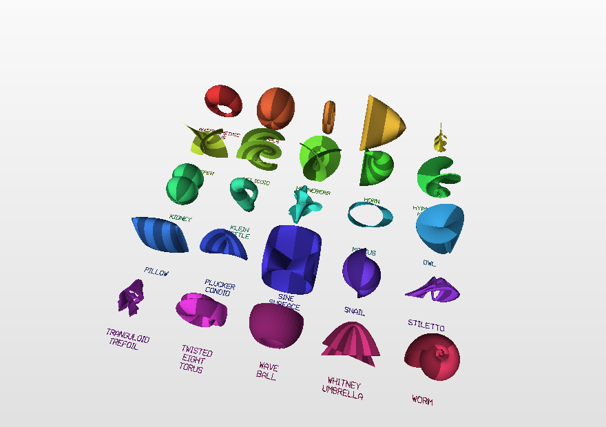
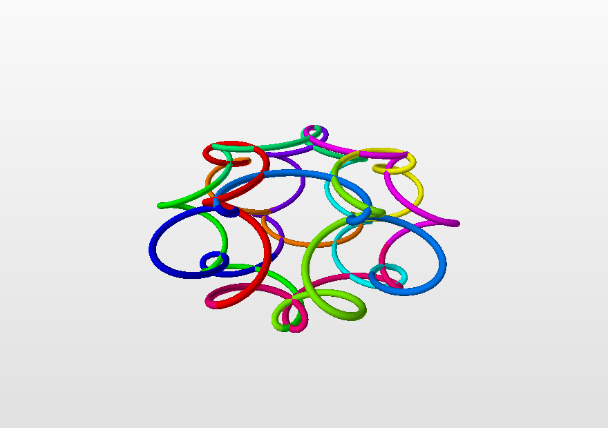
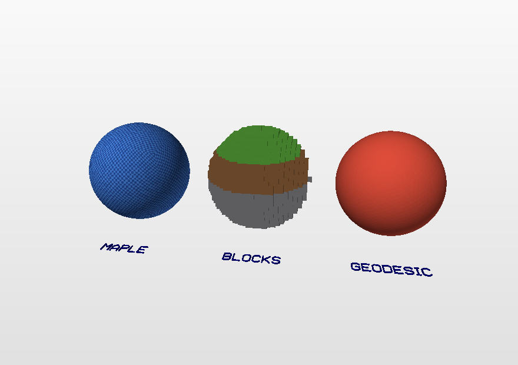
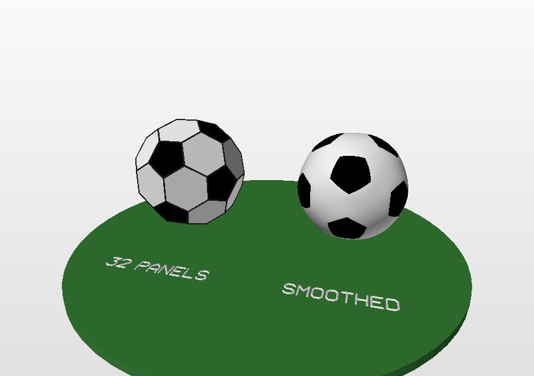
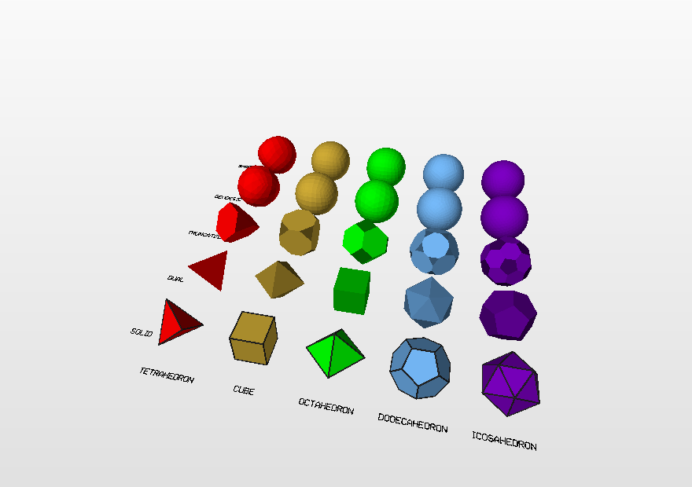
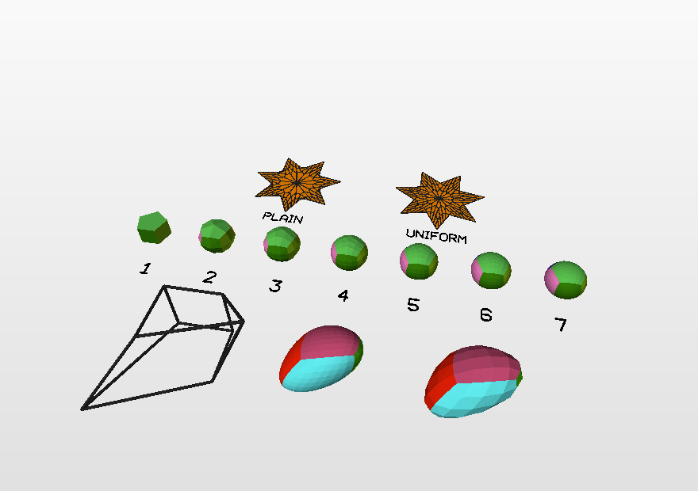
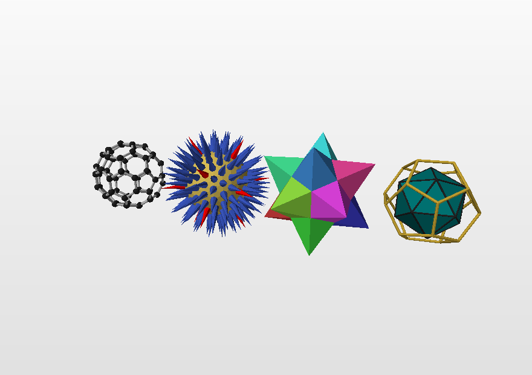
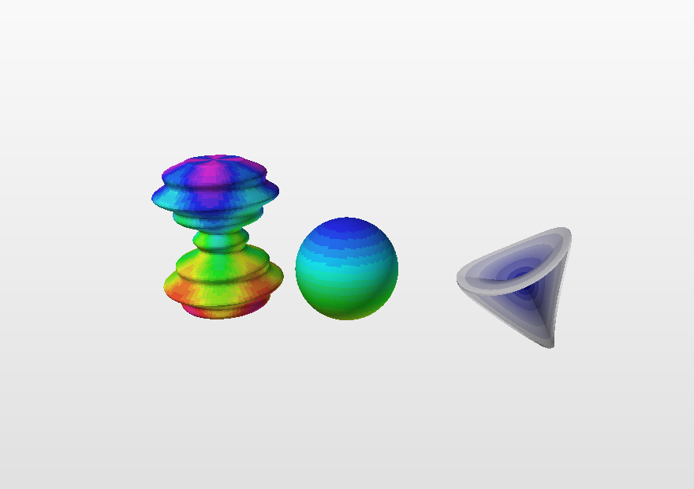
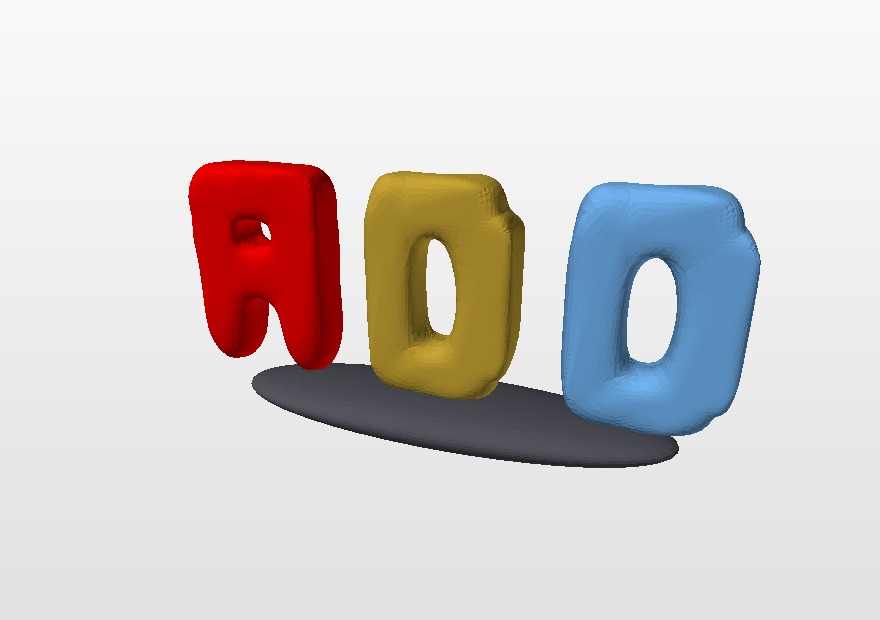
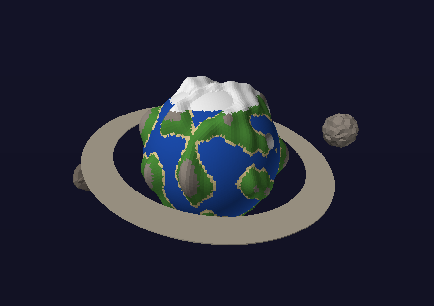
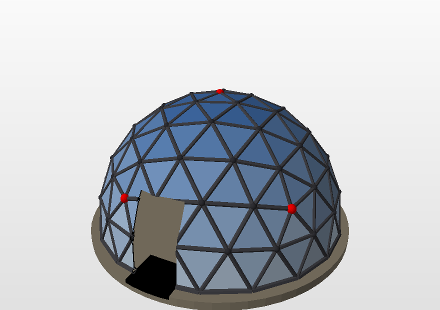
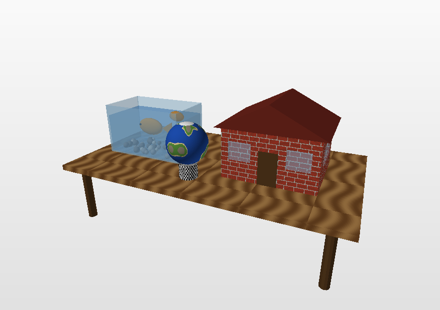
![The castle: an island in a transparent lake, a wall of stone blocks with eight hollow towers (spiral stairs inside), a gatehouse with a portcullis and a drawbridge on chains, a road down to a harbour with two moored ships, a palace with glass windows and a tiled roof, a chapel with stained glass, a courtyard full of knights, archers, townsfolk, log houses, carts and animals -- and, inside, the king in his throne hall with a feast, beds for everyone, an attic and a dragon on its treasure. No textures: every stone, tile and coat of arms is geometry. Written streaming: a 400 MB .off, an .obj under 100 MB compressed.](images/castle.png)
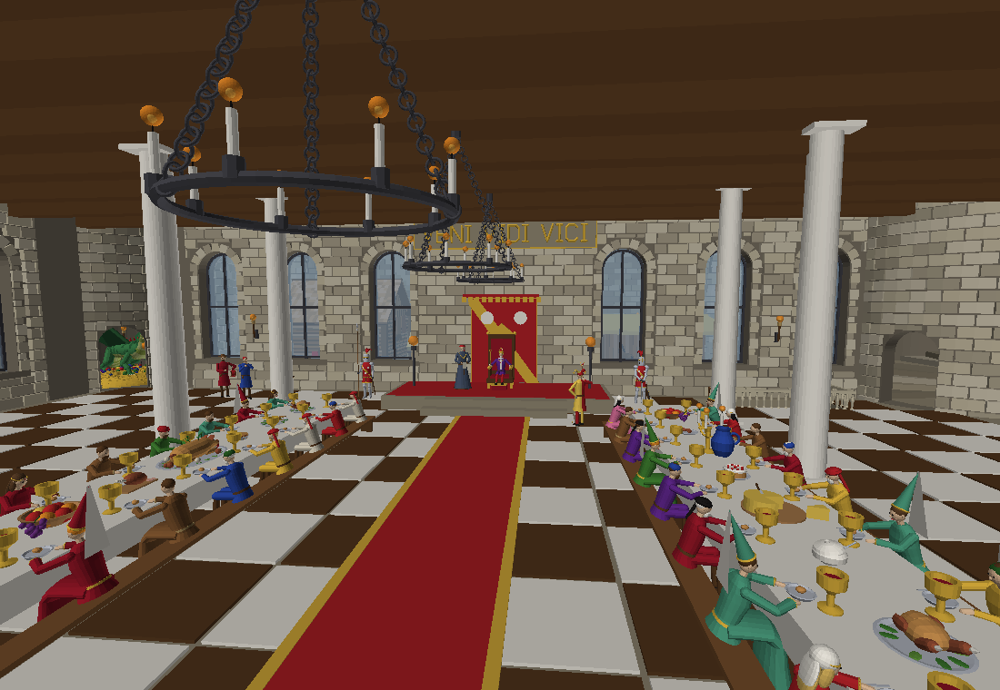
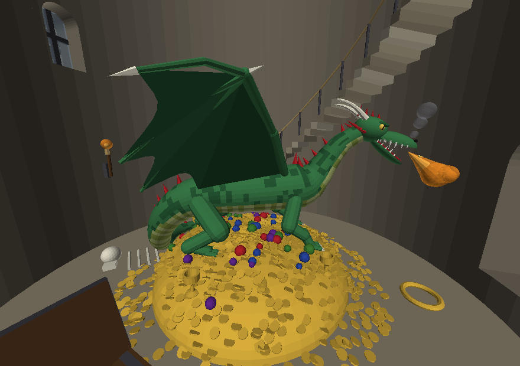
Recipes
My surface is black from one side
A parametric surface is a sheet with no thickness, so it has a front and a back. Two fixes, both one keyword:
add.parametric(f, 0, 1, 40, 0, 1, 40, "red", double_sided=True) # cheap
add.parametric(f, 0, 1, 40, 0, 1, 40, "red", thickness=0.1) # a soliddouble_sided adds a reversed copy of every face. thickness makes a real solid with a wall — watertight, printable, correct from every angle.

I need a hole
add.cuboid([0, 0, 0], [4, 1, 4], "brown")
plate = add.layer()
add.cylinder([0, -1, 0], [0, 1, 0], 0.6, 32, "black")
drill = add.layer()
add.mesh(add.difference(plate, drill))Booleans want closed solids on both sides. add.check() will tell you whether yours is closed. The cut surface takes the colour of the tool that cut it; pass color= to difference to override that.
I need 10000 polygons
You almost certainly already have them — a sphere(c, r, 30, ...) alone is 5400. If not, the honest ways are more detail (grid_u, grid_v, k) or more repetition. add.check() counts them for you.
I want the shape to depend on a parameter
Put the number at the top of the file and use it everywhere:
PETALS = 7
for i in range(PETALS):
...Then changing one number changes the whole model, which is exactly what the assignment asks for.
My model flickers, or has stray faces inside it
Flicker ("z-fighting") is two faces in exactly the same plane, facing the same way: the side of a beam running into a wall, two boxes of the same height crossing, a tile laid on a floor of the same colour. The viewer cannot decide which is in front and shows a little of each. Stray faces are the other case: two solids touch, and each keeps its own wall buried where nobody sees it.
add.py checks the model for the three things that cause this — repeated vertices, repeated or overlapping faces, and repeated edges — and repairs them: check() reports them, clean() welds vertices on one spot, removes repeated and buried faces, and cuts the smaller of two overlapping faces back so that the larger one alone covers the shared patch. Where two solids stand on each other (a chest on a floor) the patch they share is cut out of both, as a union would, and the model stays watertight. save() and stream() do the same on the way to the file, so a model needs nothing extra; add.save("x.obj", clean=False) writes it exactly as drawn. The repair works on what it is given: a model written in parts with stream() is repaired part by part, so two parts that share a plane — a floor laid in one part under a roof drawn in another — must be kept apart by the model itself.
add.check() # "!! overlapping faces 146"
model, report = add.clean(add.layer(), report=True)
print(report["faces_cut"], add.overlaps(model)) # 106, 0
add.mesh(model)I want a vase / chess piece / bottle
Spin a profile: revolve(profile, A, B, t0, t1, steps, k, colour) where profile(t) returns [radius, height].
def vase(t):
return [1 + 0.4 * add.sin(3 * t), t]
add.revolve(vase, [0, 0, 0], [0, 1, 0], 0, 4, 60, 40, "teal")I want to bend or twist something
M = add.twist(M, 0.5) # a corkscrew
M = add.taper(M, -0.2) # thinner as it rises
M = add.bend(M, 0.3) # into an arc
M = add.deform(M, lambda p: [p[0], p[1] + add.sin(p[0]), p[2]])deform takes any function you like, so it can do anything the others cannot.
I want a rainbow
M = add.color_by(M, lambda p: add.hsv(p[1] / 10.0))color_by calls your function with the centre of each face.
I want to paint a surface with a function
Every surface maker accepts a colour function instead of a colour. It is called once per cell with the surface's own two parameters, so stripes, chequerboards, gradients and maps cost one lambda:
add.parametric(f, 0, 1, 40, 0, 1, 40, color=lambda u, v: add.hsv(u))
add.revolve(vase, A, B, 0, 4, 60, 40, color=lambda t, a: "red" if int(t) % 2 else "white")
add.sweep(square, path, 0, 1, 60, color=lambda t, j: ["red", "green", "blue", "gold"][j])
add.curve(spiral, 0, 20, 300, 12, 0.2, color=lambda t, a: add.hsv(t / 20))
add.grid([0, 0, 0], [10, 10], 40, 40, color=lambda x, z: "sky" if hills(x, z) < 0 else "green", height=hills)revolve passes the profile parameter and the angle, sweep the path parameter and the index of the profile edge, curve and polyline the parameter and the angle around the tube. For a mesh you already have, color_by(M, fn) paints by the position of each face.
I am building a machine, or a figure
Build every part around the origin, between push() and pop(), then place it. beam(A, B, w, h) gives you a bar between two points; aim(M, direction) turns a part so its axis points somewhere; rotate_point tells you where a point on a wheel ends up:
def wheel(r):
add.push()
add.wheel([0, 0, 0], r, 0.2, "black", axis=[0, 0, 1], spokes=10)
return add.pop()
pin = add.rotate_point([x + 0.5, y, z], [0, 0, 1], ANGLE, [x, y, z]) # on the wheel
add.beam(pin, piston, 0.08, 0.12, "silver") # the rod follows
arm = add.aim(arm, add.direction(shoulder, hand)) # point the arm
add.mesh(add.move(arm, shoulder))array_mirror gives you the other side of a symmetric machine for free.
I want a landscape with things on it
A grid with a height function is the ground; random_points with the same function returns spots that lie on it; scatter puts copies of a part there, each turned and sized at random; along strings copies along a path. tree, bricks, roof, arch, stairs, column are the parts that most models turn out to need.
add.grid([0, 0, 0], [40, 40], 80, 80, paint, hills, thickness=0.3)
spots = add.random_points(30, [-15, 0, -15], [15, 0, 15], seed=1, height=hills)
add.push(); add.tree([0, 0, 0], 3, seed=1); one = add.pop()
add.mesh(add.scatter(one, spots, seed=1, scale=(0.7, 1.4)))I want to write on the model
text(string, at, size, color=...) draws a label from a built-in stroke font: letters, digits, punctuation and the Lithuanian letters ĄČĘĖĮŠŲŪŽ. u and v set the writing and up directions, so a label can stand on a wall or lie flat on the ground:
add.text("MALŪNAS 2026", [0, 0, 0], 1.0, color="navy") # upright
add.text("SALA", [0, 0.01, 0], 1.0, color="white", u=[1, 0, 0], v=[0, 0, -1]) # on the floorI want a block world, or pixel art
pixels turns strings into a wall of coloured cubes; heightmap turns a table of integers into columns of cubes and builds only the visible faces:
add.pixels([".r.r.", "rrrrr", ".rrr.", "..r.."], 0.5) # a heart
H = [[int(3 + 2 * add.sin(i / 3) * add.cos(j / 3)) for j in range(30)] for i in range(30)]
add.heightmap(H, 0.5, color=lambda i, j, k: "sky" if j < 2 else "green")I want a curve from an equation of motion
flow(field, p0, dt, steps) integrates a vector field (Runge-Kutta) and returns the points; trace draws them as a tube; polyline draws any list of points as a tube, with smooth= rounding the corners:
def lorenz(p):
x, y, z = p
return [10 * (y - x), x * (28 - z) - y, x * y - 8 / 3 * z]
add.trace(lorenz, [1, 1, 1], 0.006, 6000, r=0.3, color=lambda t, a: add.hsv(t))
add.wireframe(add.polyhedron("icosahedron"), 0.03) # every edge as a barI want a regular polyhedron, a football, a geodesic dome
The five Platonic solids are one call each (tetrahedron, cube via polyhedron("cube"), octahedron, dodecahedron, icosahedron), all centred so that the average of their vertices is exactly the centre, and polyhedron_points gives just the coordinates. truncate cuts the corners off (the icosahedron becomes the football), dual swaps faces and vertices, refine + spherify turns any of them into a geodesic dome, and sphere itself is now such a dome: an icosahedron split and pushed out onto the sphere, all triangles nearly equal.
ico = add.make(add.icosahedron, [0, 0, 0], 3, "white")
ball = add.truncate(ico, 1 / 3.0, "black") # 12 pentagons, 20 hexagons
ball = add.color_by_sides(ball, {5: "black", 6: "white"})
add.mesh(add.smooth(ball, 12)) # and round it off
add.mesh(add.spherify(add.refine(add.make(add.octahedron, [7, 0, 0], 3), 3)))I want to round a shape off
Build a coarse shape — a box with a corner pulled out, a letter from a few blocks, a dodecahedron — and treat it as the control net of a smooth surface. catmull_clark(M, steps) is the classical subdivision; smooth(M, n) is the generalised algorithm: n cells on every control edge for any n, all the new vertices exactly on the smooth limit surface, evenly sized cells near the odd corners, and every cell keeps the colour of the face it came from.
add.box([0, 0, 0], 2, "gold")
block = add.layer()
i = add.nearest_vertex(block, [1, 1, 1])
block = add.set_vertex(block, i, [2.5, 2.5, None]) # move one corner, keep z
add.mesh(add.smooth(block, 8))I want a Klein bottle
Twenty-five classical surfaces are in the catalogue: add.surface_names() lists them and add.surface(name, center, size, grid, color) draws one, scaled to size. add.surface_function(name) gives you the bare formula for parametric when you want your own range or colouring.
add.surface("klein_bottle", [0, 0, 0], 4, 120, "teal")
add.surface("dini", [6, 0, 0], 4, color=lambda u, v: add.hsv(u / 12))I want to know a vertex's neighbours
neighbors(M, i) (in order around the vertex), valence(M, i), mean_neighbor_distance(M, i), edges(M), mean_edge_length(M), vertex_normal, face_center, face_normal, boundary_loops — the questions you need answered to build on the vertices of an icosahedron or a dodecahedron:
ico = add.make(add.icosahedron, [0, 0, 0], 2)
for i, p in enumerate(ico.V):
n = add.vertex_normal(ico, i)
tip = [p[a] + n[a] for a in range(3)]
add.cone(p, tip, 0.25 * add.mean_neighbor_distance(ico, i), 8,
"red" if add.valence(ico, i) == 5 else "blue")I want to upload it to Sketchfab
Sketchfab takes .obj + .mtl (zip them together). Two limits matter: the file size (100 MB on the free plan — the course asks for 50) and the number of materials, which is the number of distinct colours (100 at most; 50 to be safe). check() reports both. Gradients easily make thousands of shades; limit_colors(M, 50) groups them, or save("x.obj", colors=50) does it while saving, and obj_size(M) tells the size before writing.
model = add.limit_colors(add.layer(), 50)
add.check(model)
add.save("model.obj", model)I want glass, or a picture on a wall
transparent(colour, alpha) is a see-through colour that works wherever a colour does; opacity(M, alpha) makes a finished part see-through. Both go into the .mtl file (d). texture(M, "picture.png", mapping) wraps an image around a part (map_Kd), with box, planar, spherical or cylindrical mapping; write_png writes a picture you computed yourself. .off files keep plain colours, so old models are unchanged. A window is an opening with glass in it: cut the hole right through the wall first and put the texture on afterwards (a boolean rebuilds the faces and drops a texture), then set the pane in the opening — what is behind it shows through.
glass = add.transparent("sky", 0.35)
wall = add.make(add.cuboid, [0, 1.5, 0], [6, 3, 0.3])
hole = add.make(add.cuboid, [0, 1.6, 0], [2, 1.2, 1]) # right through the wall
wall = add.difference(wall, hole) # cut first ...
add.mesh(add.texture(wall, "bricks.png", "box", scale=1.5)) # ... then the bricks
add.cuboid([0, 1.6, 0], [2, 1.2, 0.03], glass) # the pane, in the opening
add.save("house.obj") # + house.mtlMy model is bigger than the memory of the computer
save keeps the whole model in memory, which is fine up to a few million faces. A model with every brick, cobblestone and roof tile as its own piece can run to hundreds of megabytes — so build it in parts and hand each part to a stream as soon as it is finished: stream("castle.obj") returns a Stream, out.add() writes the scene and clears it, out.close() writes the .mtl (or fills in the OFF header). Every part is tidied on the way (welded, no repeated, buried or overlapping faces), precision=4 keeps the coordinates short, and out.faces, out.bytes and out.materials count as you go, so the limits can be checked before the file is complete. The same parts can go to two streams — an .off and an .obj — at once.
out = add.stream("castle.obj", precision=4)
for k in range(8):
wall_segment(k) # thousands of bricks
out.add() # written now, memory freed
out.add(add.make(add.tree, [0, 0, 0], 5))
out.close()
print(out.faces, "faces,", out.bytes / 1e6, "MB,", len(out.materials), "colours")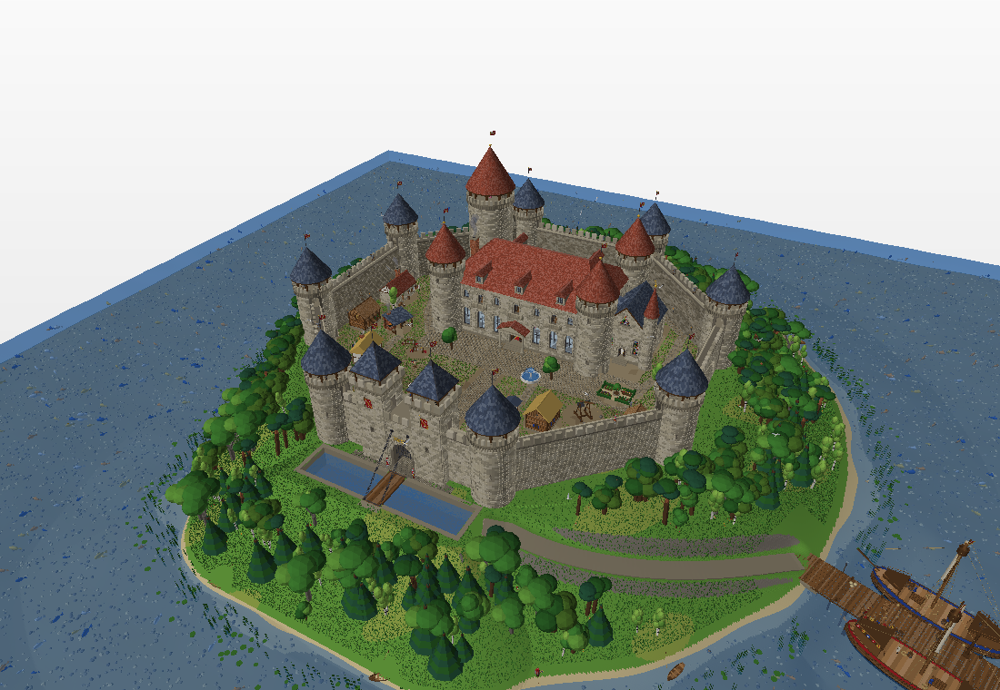
Receptai
Mano paviršius iš vienos pusės juodas
Parametrinis paviršius yra lakštas be storio, todėl turi priekį ir nugarą. Du sprendimai, abu — vienas raktažodis:
add.parametric(f, 0, 1, 40, 0, 1, 40, "red", double_sided=True) # pigiai
add.parametric(f, 0, 1, 40, 0, 1, 40, "red", thickness=0.1) # tikras kūnasdouble_sided prideda apverstą kiekvienos sienos kopiją. thickness sukuria tikrą kūną su sienele: uždarą, spausdinamą, teisingą iš visų pusių.
Reikia skylės
add.cuboid([0, 0, 0], [4, 1, 4], "brown")
plokste = add.layer()
add.cylinder([0, -1, 0], [0, 1, 0], 0.6, 32, "black")
grezlas = add.layer()
add.mesh(add.difference(plokste, grezlas))Loginėms operacijoms reikia uždarų kūnų iš abiejų pusių. add.check() pasakys, ar jūsiškis uždaras. Naujai atsiveręs paviršius perima įrankio, kuris pjovė, spalvą; ją galima pakeisti difference(..., color=...).
Reikia 10000 daugiakampių
Greičiausiai jų jau turite: vien sphere(c, r, 30, ...) duoda 5400. Jei ne — sąžiningi būdai yra didesnis detalumas (grid_u, grid_v, k) arba daugiau pasikartojimų. add.check() juos suskaičiuoja už jus.
Noriu, kad forma priklausytų nuo parametro
Skaičių aprašykite failo pradžioje ir naudokite jį visur:
ZIEDLAPIU = 7
for i in range(ZIEDLAPIU):
...Tada vieno skaičiaus pakeitimas pakeičia visą modelį — to ir prašo užduotis.
Mano modelis mirga arba jo viduje liko nereikalingų sienų
Mirgėjimas („z-fighting") — tai dvi sienos lygiai toje pačioje plokštumoje, žiūrinčios ta pačia kryptimi: sija, įeinanti į sieną, du vienodo aukščio susikertantys blokai, plytelė ant tokios pat spalvos grindų. Peržiūros programa negali nuspręsti, kuri priekyje, ir rodo po truputį abiejų. Nereikalingos sienos — kitas atvejis: du kūnai liečiasi ir kiekvienas pasilieka savo sienelę, palaidotą ten, kur jos niekas nemato.
add.py patikrina modelį dėl trijų šito priežasčių — pasikartojančių viršūnių, pasikartojančių ar persidengiančių sienų ir pasikartojančių briaunų — ir jas taiso: check() apie jas praneša, clean() suklijuoja viename taške esančias viršūnes, pašalina pasikartojančias ir palaidotas sienas, o mažesnę iš dviejų persidengiančių apkerpa, kad bendrą lopą dengtų tik didesnioji. Kur du kūnai stovi vienas ant kito (skrynia ant grindų), bendras lopas iškerpamas iš abiejų, kaip padarytų sąjunga, ir modelis lieka sandarus. save() ir stream() tą patį padaro rašydami failą, todėl modeliui nieko papildomo nereikia; add.save("x.obj", clean=False) įrašo lygiai taip, kaip nupiešta. Taisoma tai, kas paduota: dalimis per stream() rašomas modelis taisomas dalis po dalies, tad dvi dalys toje pačioje plokštumoje — grindys vienoje dalyje po stogu iš kitos — turi būti atskirtos paties modelio.
add.check() # "!! overlapping faces 146"
modelis, ataskaita = add.clean(add.layer(), report=True)
print(ataskaita["faces_cut"], add.overlaps(modelis)) # 106, 0
add.mesh(modelis)Noriu vazos / šachmatų figūros / butelio
Sukite profilį: revolve(profilis, A, B, t0, t1, steps, k, spalva), kur profilis(t) grąžina [spindulys, aukštis].
def vaza(t):
return [1 + 0.4 * add.sin(3 * t), t]
add.revolve(vaza, [0, 0, 0], [0, 1, 0], 0, 4, 60, 40, "teal")Noriu ką nors sulenkti ar susukti
M = add.twist(M, 0.5) # kaip kamščiatraukis
M = add.taper(M, -0.2) # kylant plonėja
M = add.bend(M, 0.3) # į lanką
M = add.deform(M, lambda p: [p[0], p[1] + add.sin(p[0]), p[2]])deform priima bet kokią jūsų funkciją, todėl padaro tai, ko kiti negali.
Noriu vaivorykštės
M = add.color_by(M, lambda p: add.hsv(p[1] / 10.0))color_by iškviečia jūsų funkciją su kiekvienos sienos centru.
Noriu nuspalvinti paviršių funkcija
Kiekviena paviršių kurianti funkcija vietoj spalvos priima spalvos funkciją. Ji kviečiama kiekvienai langelio (sienos) porai paviršiaus parametrų, todėl juostos, šachmatų lenta, gradientai ir žemėlapiai kainuoja vieną lambda:
add.parametric(f, 0, 1, 40, 0, 1, 40, color=lambda u, v: add.hsv(u))
add.revolve(vaza, A, B, 0, 4, 60, 40, color=lambda t, a: "red" if int(t) % 2 else "white")
add.sweep(kvadratas, kelias, 0, 1, 60, color=lambda t, j: ["red", "green", "blue", "gold"][j])
add.curve(spirale, 0, 20, 300, 12, 0.2, color=lambda t, a: add.hsv(t / 20))
add.grid([0, 0, 0], [10, 10], 40, 40, color=lambda x, z: "sky" if kalvos(x, z) < 0 else "green", height=kalvos)revolve perduoda profilio parametrą ir kampą, sweep — kelio parametrą ir profilio briaunos numerį, curve bei polyline — parametrą ir kampą aplink vamzdį. Jau turimą modelį nuspalvina color_by(M, fn) pagal kiekvienos sienos padėtį.
Kuriu mechanizmą arba figūrą
Kiekvieną detalę kurkite aplink koordinačių pradžią tarp push() ir pop(), o tada padėkite į vietą. beam(A, B, w, h) duoda siją tarp dviejų taškų, aim(M, kryptis) pasuka detalę taip, kad jos ašis rodytų reikiama kryptimi, rotate_point pasako, kur atsidurs taškas ant pasukto rato:
def ratas(r):
add.push()
add.wheel([0, 0, 0], r, 0.2, "black", axis=[0, 0, 1], spokes=10)
return add.pop()
kaistis = add.rotate_point([x + 0.5, y, z], [0, 0, 1], KAMPAS, [x, y, z]) # ant rato
add.beam(kaistis, stumoklis, 0.08, 0.12, "silver") # trauklė seka
ranka = add.aim(ranka, add.direction(petys, plastaka)) # nukreipti ranką
add.mesh(add.move(ranka, petys))array_mirror nemokamai duoda kitą simetriško mechanizmo pusę.
Noriu kraštovaizdžio su daiktais ant jo
grid su aukščio funkcija — tai žemė; random_points su ta pačia funkcija grąžina taškus, gulinčius ant jos; scatter ten padeda detalės kopijas, kiekvieną atsitiktinai pasuktą ir padidintą; along išdėsto kopijas išilgai kelio. tree, bricks, roof, arch, stairs, column — detalės, kurių prireikia daugumai modelių.
add.grid([0, 0, 0], [40, 40], 80, 80, spalva, kalvos, thickness=0.3)
vietos = add.random_points(30, [-15, 0, -15], [15, 0, 15], seed=1, height=kalvos)
add.push(); add.tree([0, 0, 0], 3, seed=1); vienas = add.pop()
add.mesh(add.scatter(vienas, vietos, seed=1, scale=(0.7, 1.4)))Noriu užrašo ant modelio
text(tekstas, kur, dydis, color=...) nubraižo užrašą įmontuotu šriftu: raidės, skaitmenys, skyryba ir lietuviškos raidės ĄČĘĖĮŠŲŪŽ. u ir v nurodo rašymo ir aukštyn kryptis, todėl užrašas gali stovėti ant sienos arba gulėti ant žemės:
add.text("MALŪNAS 2026", [0, 0, 0], 1.0, color="navy") # stačias
add.text("SALA", [0, 0.01, 0], 1.0, color="white", u=[1, 0, 0], v=[0, 0, -1]) # ant grindųNoriu kubelių pasaulio arba pikselinio piešinio
pixels paverčia eilutes spalvotų kubelių siena; heightmap sveikųjų skaičių lentelę paverčia kubelių stulpeliais ir sukuria tik matomas sienas:
add.pixels([".r.r.", "rrrrr", ".rrr.", "..r.."], 0.5) # širdelė
H = [[int(3 + 2 * add.sin(i / 3) * add.cos(j / 3)) for j in range(30)] for i in range(30)]
add.heightmap(H, 0.5, color=lambda i, j, k: "sky" if j < 2 else "green")Noriu kreivės iš judėjimo lygties
flow(laukas, p0, dt, žingsniai) integruoja vektorinį lauką (Rungės ir Kutos metodu) ir grąžina taškus; trace juos nubraižo kaip vamzdį; polyline nubraižo bet kokį taškų sąrašą kaip vamzdį, o smooth= suapvalina kampus:
def lorenz(p):
x, y, z = p
return [10 * (y - x), x * (28 - z) - y, x * y - 8 / 3 * z]
add.trace(lorenz, [1, 1, 1], 0.006, 6000, r=0.3, color=lambda t, a: add.hsv(t))
add.wireframe(add.polyhedron("icosahedron"), 0.03) # kiekviena briauna -- strypelisNoriu taisyklingojo briaunainio, futbolo kamuolio, geodezinio kupolo
Penki Platono kūnai — po vieną kvietimą (tetrahedron, cube per polyhedron("cube"), octahedron, dodecahedron, icosahedron), visi sucentruoti taip, kad viršūnių vidurkis būtų lygiai centras, o polyhedron_points duoda vien koordinates. truncate nupjauna kampus (ikosaedras virsta futbolo kamuoliu), dual sukeičia sienas ir viršūnes, refine + spherify iš bet kurio padaro geodezinį kupolą, o pati sphere dabar ir yra toks kupolas: ikosaedras, padalytas ir išstumtas ant sferos, visi trikampiai beveik lygūs.
ico = add.make(add.icosahedron, [0, 0, 0], 3, "white")
ball = add.truncate(ico, 1 / 3.0, "black") # 12 penkiakampių, 20 šešiakampių
ball = add.color_by_sides(ball, {5: "black", 6: "white"})
add.mesh(add.smooth(ball, 12)) # ir suapvaliname
add.mesh(add.spherify(add.refine(add.make(add.octahedron, [7, 0, 0], 3), 3)))Noriu suapvalinti formą
Sukurkite grubią formą — dėžę su ištrauktu kampu, raidę iš kelių blokų, dodekaedrą — ir laikykite ją glotnaus paviršiaus kontroliniu tinklu. catmull_clark(M, steps) yra klasikinis dalijimas; smooth(M, n) — apibendrintas algoritmas: ant kiekvienos kontrolinės briaunos n langelių bet kokiam n, visos naujos viršūnės tiksliai ant ribinio paviršiaus, vienodo dydžio langeliai prie ypatingųjų kampų, o kiekvienas langelis išlaiko sienos, iš kurios kilo, spalvą.
add.box([0, 0, 0], 2, "gold")
block = add.layer()
i = add.nearest_vertex(block, [1, 1, 1])
block = add.set_vertex(block, i, [2.5, 2.5, None]) # pastumiame kampą, z paliekame
add.mesh(add.smooth(block, 8))Noriu Kleino butelio
Kataloge — dvidešimt penki klasikiniai paviršiai: add.surface_names() juos išvardija, add.surface(vardas, centras, dydis, tinklelis, spalva) nupiešia, sumastelintą iki size. add.surface_function(vardas) duoda gryną formulę funkcijai parametric, kai norite savos srities ar spalvinimo.
add.surface("klein_bottle", [0, 0, 0], 4, 120, "teal")
add.surface("dini", [6, 0, 0], 4, color=lambda u, v: add.hsv(u / 12))Noriu žinoti viršūnės kaimynes
neighbors(M, i) (eilės tvarka aplink viršūnę), valence(M, i), mean_neighbor_distance(M, i), edges(M), mean_edge_length(M), vertex_normal, face_center, face_normal, boundary_loops — atsakymai į klausimus, kurių reikia statant ant ikosaedro ar dodekaedro viršūnių:
ico = add.make(add.icosahedron, [0, 0, 0], 2)
for i, p in enumerate(ico.V):
n = add.vertex_normal(ico, i)
tip = [p[a] + n[a] for a in range(3)]
add.cone(p, tip, 0.25 * add.mean_neighbor_distance(ico, i), 8,
"red" if add.valence(ico, i) == 5 else "blue")Noriu įkelti į Sketchfab
Sketchfab priima .obj + .mtl (suarchyvuokite kartu). Svarbūs du apribojimai: failo dydis (nemokamame plane 100 MB — kursas prašo 50) ir medžiagų skaičius, kuris lygus skirtingų spalvų skaičiui (daugiausia 100; 50 saugu). check() praneša abu. Gradientai lengvai padaro tūkstančius atspalvių; limit_colors(M, 50) juos sugrupuoja, save("x.obj", colors=50) tai padaro įrašant, o obj_size(M) pasako dydį dar prieš rašant failą.
model = add.limit_colors(add.layer(), 50)
add.check(model)
add.save("modelis.obj", model)Noriu stiklo arba paveikslo ant sienos
transparent(spalva, alpha) — permatoma spalva, tinkanti visur, kur tinka spalva; opacity(M, alpha) padaro permatomą jau sukurtą detalę. Abu įrašomi į .mtl failą (d). texture(M, "paveikslas.png", mapping) apvynioja detalę paveikslėliu (map_Kd) — dėžės, plokštumos, sferos ar cilindro atvaizdžiu; write_png įrašo patį paskaičiuotą paveikslėlį. .off failuose lieka paprastos spalvos, todėl seni modeliai nesikeičia. Langas — tai anga su stiklu: pirma išpjaukite angą kiaurai per sieną ir tik tada uždėkite tekstūrą (loginė operacija sienas perkuria ir tekstūrą numeta), o stiklą įstatykite į angą — pro jį matyti, kas už jo.
glass = add.transparent("sky", 0.35)
wall = add.make(add.cuboid, [0, 1.5, 0], [6, 3, 0.3])
hole = add.make(add.cuboid, [0, 1.6, 0], [2, 1.2, 1]) # kiaurai per sieną
wall = add.difference(wall, hole) # pirma išpjauti ...
add.mesh(add.texture(wall, "bricks.png", "box", scale=1.5)) # ... tada plytos
add.cuboid([0, 1.6, 0], [2, 1.2, 0.03], glass) # stiklas angoje
add.save("namas.obj") # + namas.mtlMano modelis didesnis už kompiuterio atmintį
save laiko visą modelį atmintyje — to užtenka iki kelių milijonų sienų. Modelis, kuriame kiekviena plyta, grindinio akmuo ir stogo čerpė yra atskira detalė, siekia šimtus megabaitų, todėl jį reikia kurti dalimis ir kiekvieną baigtą dalį iš karto atiduoti srautui: stream("pilis.obj") grąžina Stream, out.add() įrašo sceną ir ją išvalo, out.close() įrašo .mtl (arba užpildo OFF antraštę). Kiekviena dalis pakeliui sutvarkoma (suklijuota, be pasikartojančių, palaidotų ir persidengiančių sienų), precision=4 trumpina koordinates, o out.faces, out.bytes ir out.materials skaičiuoja rašant, todėl ribas galima tikrinti dar nebaigus failo. Tos pačios dalys gali eiti į du srautus — .off ir .obj — iš karto.
out = add.stream("pilis.obj", precision=4)
for k in range(8):
siena(k) # tūkstančiai plytų
out.add() # įrašyta dabar, atmintis laisva
out.add(add.make(add.tree, [0, 0, 0], 5))
out.close()
print(out.faces, "sienų,", out.bytes / 1e6, "MB,", len(out.materials), "spalvų")ReferenceFunkcijos
Išsamūs funkcijų aprašymai kode pateikti angliškai; čia rasite lietuviškus paaiškinimus ir tuos pačius pavyzdžius.
0. ConstantsKonstantos
EPSNumerical tolerance used by welding, boolean operations and plane tests.Skaitinė paklaida, naudojama klijuojant ir lyginant.
Skaitinė paklaida, kurią naudoja viršūnių suliejimas, loginės operacijos ir plokštumų testai. Paprastai jos keisti nereikia.
ExamplePavyzdys
print(add.EPS) # 1e-09DEFAULT_COLORColour used when a function is called without one.Spalva, naudojama, kai jokia nenurodyta.
Spalva, kuria piešiama, kai funkcijai spalva nenurodyta (pilka).
ExamplePavyzdys
add.box([0, 0, 0], 1) # drawn in add.DEFAULT_COLOR
print(add.DEFAULT_COLOR)1. Small helpers -- vectors and coloursPagalbinės funkcijos -- vektoriai ir spalvos
rgb(color)Normalise anything colour-like into a ``(r, g, b)`` tuple of 0..255 ints.Bet ką, kas panašu į spalvą, paverčia (r, g, b) reikšme.
Accepts [255, 0, 0], (1.0, 0.0, 0.0) (floats 0..1 are scaled), "#ff0000", "red" or None (-> DEFAULT_COLOR).
A fourth value is the opacity: [120, 190, 255, 0.4] or "#78beff66" is a see-through blue, kept as a fourth element of the tuple (see transparent). A fifth, a file name, is an image texture (see texture). Both only take effect in .obj files; everything else treats the colour as before.
Paverčia bet kokį spalvos užrašą į (r, g, b) trejetą 0..255: sąrašą, 0..1 trupmenas, „#ff0000“ ar vardą „red“. Ketvirtas skaičius – permatomumas, penktas – tekstūros failas (žr. transparent, texture).
ExamplePavyzdys
print(add.rgb("sky"), add.rgb("#ff8000"), add.rgb((1.0, 0.5, 0.0)))
print(add.rgb([0, 0, 255, 0.5])) # with an opacityUsed in: Naudojama: 31_workbench
transparent(color, alpha=0.5)A see-through version of a colour: ``alpha`` is the opacity, 0 forPermatoma spalvos versija: alpha – nepermatomumas nuo 0 (nematoma) iki 1 (vientisa).
Any drawing function takes the result in place of a colour, so a window is add.cuboid(c, [2, 1.5, 0.05], add.transparent("sky", 0.35)). The opacity is written to the .mtl file of an .obj model (as d); .off files stay plain colours. See also opacity.
Permatoma spalvos versija: alpha – nepermatomumas nuo 0 (nematoma) iki 1 (vientisa). Rezultatą galima naudoti visur, kur laukiama spalvos; permatomumas įrašomas į .obj modelio .mtl failą (d), o .off lieka paprastos spalvos.
ExamplePavyzdys
glass = add.transparent("sky", 0.35)
add.cuboid([0, 1, 0], [2, 1.5, 0.05], glass) # a window pane
add.save("window.obj") # opacity goes into the .mtlUsed in: Naudojama: 45_glass_and_textures, 46_castle
COLORSA handful of named colours, so ``add.box(c, 1, "red")`` works.Spalvų vardų žodynas („red“, „gold“, „sky“ ir kt.).
Žodynas su spalvų vardais: „red“, „sky“, „gold“ ir kt. Bet kur, kur laukiama spalvos, galima rašyti tokį vardą.
ExamplePavyzdys
print(sorted(add.COLORS)) # "black", "blue", "brown", ...
add.box([0, 0, 0], 1, "gold")Used in: Naudojama: 33_cross_sections
hsv(h, s=1.0, v=1.0)Colour from hue/saturation/value, all in 0..1. Hue wraps around.Spalva iš atspalvio, sodrumo ir šviesumo (visi 0..1).
Handy for rainbows:
for i in range(n):
add.box([i, 0, 0], 0.9, add.hsv(i / n))Spalva iš atspalvio, sodrumo ir šviesumo (visi 0..1). Atspalvis sukasi ratu, todėl hsv(i / n) duoda vaivorykštę.
ExamplePavyzdys
for i in range(12):
add.box([i, 0, 0], 0.9, add.hsv(i / 12.0))Used in: Naudojama: 02_primitives, 08_surfaces_superformula, 15_patterns, 17_fractals, 19_city, 21_text_and_loading, …
gradient(t, a, b)Blend between colours ``a`` and ``b``; ``t`` runs 0 -> 1.Perėjimas tarp dviejų spalvų.
Spalva tarp a ir b: t = 0 duoda a, t = 1 – b.
ExamplePavyzdys
for i in range(10):
add.box([i, 0, 0], 0.9, add.gradient(i / 9.0, "navy", "white"))Used in: Naudojama: 25_temple, 26_vector_fields, 28_voxel_island, 30_solar_system, 31_workbench, 41_sketchfab_ready, …
random_color(seed=None)A random colour. Pass ``seed`` for a repeatable one.Atsitiktinė spalva.
Atsitiktinė spalva; su seed – ta pati kaskart.
ExamplePavyzdys
add.seed(1)
for i in range(5):
add.box([i, 0, 0], 0.9, add.random_color())
print(add.random_color(7) == add.random_color(7)) # TrueUsed in: Naudojama: 20_classic_1_2, 31_workbench
2. Mesh -- the one data structure in this libraryMesh -- vienintelė bibliotekos duomenų struktūra
MeshA list of vertices and a list of coloured faces.Modelio klasė: viršūnių sąrašas V, sienų sąrašas F ir spalvos C.
M.V is a list of [x, y, z] points, M.F a list of index lists (a face may have any number of corners) and M.C the colour of each face. len(M.F) is the polygon count.
For backwards compatibility a mesh also behaves like the old [vertices, faces] pair of string lists, so M[0] and M[1] still give you exactly what add.py 1.2 produced.
Vienintelė bibliotekos duomenų struktūra: viršūnių sąrašas V, sienų (indeksų sąrašų) sąrašas F ir kiekvienos sienos spalva C. Suderinamumui M[0] ir M[1] tebeduoda senuosius add.py 1.2 eilučių sąrašus.
ExamplePavyzdys
M = add.Mesh()
a = M.add_vertex([0, 0, 0])
b = M.add_vertex([1, 0, 0])
c = M.add_vertex([0, 1, 0])
M.add_face([a, b, c], "red")
print(M, M.polygons, M.V[1], M.F[0], M.C[0])
add.mesh(M)Used in: Naudojama: 31_workbench, 36_minecraft_sphere, 42_pillow_letters, 43_planet, 46_castle
as_mesh(obj)Accept a :class:`Mesh`, a ``[vertex_strings, face_strings]`` pair orPriima Mesh arba senąjį [viršūnės, sienos] sąrašą ir grąžina Mesh.
This is what lets ten-year-old student code and new code mix freely.
Priima Mesh, seną [viršūnių_eilutės, sienų_eilutės] porą arba None (dabartinę sceną) ir visada grąžina Mesh.
ExamplePavyzdys
add.box([0, 0, 0], 1, "red")
M = add.as_mesh(None) # the scene itself
pair = [list(M[0]), list(M[1])] # the old string lists ...
print(add.as_mesh(pair).polygons) # ... accepted anywhereUsed in: Naudojama: 33_cross_sections
3. The current scene (the "default layer")Dabartinė scena (numatytasis sluoksnis)
verticesThe current scene's vertices, in the add.py 1.2 string form.Dabartinės scenos viršūnės senuoju eilučių pavidalu.
Dabartinės scenos viršūnės add.py 1.2 eilučių pavidalu („x y z“); langas į sceną, ne kopija.
ExamplePavyzdys
add.box([0, 0, 0], 1, "red")
print(len(add.vertices), add.vertices[0])facesThe current scene's faces, in the add.py 1.2 string form.Dabartinės scenos sienos senuoju eilučių pavidalu.
Dabartinės scenos sienos add.py 1.2 eilučių pavidalu; len(add.faces) – kiek daugiakampių jau nupiešta.
ExamplePavyzdys
add.box([0, 0, 0], 1, "red")
print(len(add.faces), add.faces[0])scene()The :class:`Mesh` everything is currently being drawn into.Grąžina dabartinę sceną (Mesh objektą).
Mesh objektas, į kurį šiuo metu piešiama.
ExamplePavyzdys
add.box([0, 0, 0], 1, "red")
print(add.scene()) # <Mesh 8 vertices, 6 faces>Used in: Naudojama: 31_workbench, 33_cross_sections
clear()Throw away everything drawn so far.Ištrina viską, kas iki šiol nupiešta.
Išmeta viską, kas nupiešta iki šiol.
ExamplePavyzdys
add.box([0, 0, 0], 1, "red")
add.clear()
print(len(add.faces)) # 0Used in: Naudojama: 33_cross_sections
layer()Take the scene out as a mesh and start a fresh, empty scene.Paima sceną kaip modelį ir palieka sceną tuščią.
This is the workhorse of the library: draw something, layer() it, transform the result, then mesh() it back (possibly many times):
add.box([0, 0, 0], 1, "red")
brick = add.layer()
for i in range(10):
add.mesh(add.move(brick, [i, 0, 0]))Paima visą sceną kaip Mesh objektą ir pradeda naują tuščią sceną. Tai pagrindinis darbo būdas: nupiešti, paimti su layer(), transformuoti, grąžinti su mesh(). Dėmesio: paima VISKĄ, kas nupiešta iki tol – dalims patogiau make() arba push()/pop().
ExamplePavyzdys
add.box([0, 0, 0], 1, "red")
brick = add.layer() # the scene is empty again
for i in range(5):
add.mesh(add.move(brick, [i * 1.2, 0, 0]))Used in: Naudojama: 06_surfaces_classic, 07_surfaces_exotic, 08_surfaces_superformula, 09_surfaces_nature, 10_height_fields, 11_two_sided_surfaces, …
push()Put the scene aside and start a fresh, empty one.Padeda sceną į šalį ir pradeda naują, tuščią.
Use it inside a function that builds a part, so that the part cannot accidentally scoop up everything drawn before it — the commonest surprise for anyone using layer:
def wheel(r):
add.push() # nothing else can get in
add.cylinder(...)
add.torus(...)
return add.pop() # and the old scene comes backAtideda dabartinę sceną į šalį ir pradeda tuščią. Naudokite funkcijoje, kuri kuria detalę, kad ji nepasiimtų viso, kas nupiešta anksčiau.
ExamplePavyzdys
add.box([0, 0, 0], 1, "red") # already in the scene
add.push()
add.sphere([0, 0, 0], 1, 10, "blue")
ball = add.pop() # only the sphere
print(ball.polygons, len(add.faces)) # 1280 6Used in: Naudojama: 19_city, 21_text_and_loading, 22_lighthouse, 23_locomotive, 24_windmill, 25_temple, …
pop()Return what was drawn since :func:`push` and restore the old scene.Grąžina tai, kas nupiešta po push(), ir atkuria ankstesnę sceną.
Grąžina tai, kas nupiešta nuo push(), ir atkuria senąją sceną.
ExamplePavyzdys
add.push()
add.cylinder([0, 0, 0], [0, 2, 0], 0.5, 24, "gold")
part = add.pop()
add.mesh(add.move(part, [3, 0, 0]))Used in: Naudojama: 19_city, 21_text_and_loading, 22_lighthouse, 23_locomotive, 24_windmill, 25_temple, …
make(draw, *args, **kwargs)Call a drawing function and return what it drew as a mesh, withoutIškviečia piešimo funkciją ir grąžina, ką ji nupiešė, kaip Mesh, nepaliesdama dabartinės scenos
add.make(add.sphere, [0, 0, 0], 1, 20, "red") is the same as push(), sphere(...), pop(); it turns any of the drawing functions into one that returns a mesh:
ball = add.make(add.sphere, [0, 0, 0], 1)
add.mesh(add.move(ball, [3, 0, 0]))Iškviečia piešimo funkciją ir grąžina, ką ji nupiešė, kaip Mesh, nepaliesdama dabartinės scenos: make(add.sphere, c, r) yra push(); sphere(...); pop() viename žingsnyje.
ExamplePavyzdys
ball = add.make(add.sphere, [0, 0, 0], 1, 10, "red")
add.mesh(add.move(ball, [3, 0, 0]))
add.mesh(add.move(ball, [-3, 0, 0]))Used in: Naudojama: 37_football, 38_polyhedra, 39_smooth_shapes, 40_vertex_tools, 41_sketchfab_ready, 42_pillow_letters, …
mesh(M)Draw mesh ``M`` into the current scene.Prideda modelį M į dabartinę sceną.
Nupiešia Mesh objektą į dabartinę sceną.
ExamplePavyzdys
ball = add.make(add.sphere, [0, 0, 0], 1, 10, "red")
add.mesh(ball)
add.mesh(add.move(ball, [2.5, 0, 0]))Used in: Naudojama: 06_surfaces_classic, 07_surfaces_exotic, 08_surfaces_superformula, 09_surfaces_nature, 10_height_fields, 11_two_sided_surfaces, …
paste``add.paste`` is a friendlier name for :func:`mesh`.Tas pats, kas mesh(M).
Kitas vardas funkcijai mesh().
ExamplePavyzdys
ball = add.make(add.sphere, [0, 0, 0], 1, 10, "red")
add.paste(ball) # same as add.mesh(ball)Used in: Naudojama: 06_surfaces_classic, 07_surfaces_exotic, 08_surfaces_superformula, 09_surfaces_nature, 10_height_fields, 11_two_sided_surfaces, …
merge(meshes)Combine several meshes into one (no geometry is changed).Sujungia kelis modelius į vieną (geometrija nekeičiama).
merge just concatenates. For a watertight combination that removes the parts hidden inside, use union instead.
Sujungia kelis Mesh objektus į vieną (geometrija nekeičiama). Sandariam sujungimui, kai dalys kertasi, naudokite union().
ExamplePavyzdys
a = add.make(add.box, [0, 0, 0], 1, "red")
b = add.make(add.sphere, [2, 0, 0], 0.6, 10, "blue")
both = add.merge([a, b])
print(both.polygons)
add.mesh(both)Used in: Naudojama: 16_booleans, 17_fractals, 18_chess_set, 19_city
copy(M=None)An independent copy of ``M`` (or of the scene).Nepriklausoma modelio kopija.
Nepriklausoma M (arba scenos) kopija.
ExamplePavyzdys
add.box([0, 0, 0], 1, "red")
M = add.copy() # a copy of the scene
M.V[0][1] += 5 # the scene is untouched
print(add.scene().V[0][1])Used in: Naudojama: 31_workbench
5. Flat shapesPlokščios figūros
polygon(points, color=None)One flat face through the given 3D points (any number of corners).Viena plokščia siena iš nurodytų 3D taškų.
The corners must be listed counter-clockwise as seen from the side you want to be the outside.
Viena plokščia siena per nurodytus 3D taškus (kiek norite kampų). Taškai eina prieš laikrodžio rodyklę, žiūrint iš išorės.
ExamplePavyzdys
add.polygon([[0, 0, 0], [2, 0, 0], [2, 2, 0], [1, 3, 0], [0, 2, 0]], "gold")Used in: Naudojama: 25_temple, 37_football, 39_smooth_shapes, 44_geodesic_dome, 46_castle
triangle(a, b, c, color=None)A single triangle.Vienas trikampis.
Vienas trikampis per tris taškus.
ExamplePavyzdys
add.triangle([0, 0, 0], [2, 0, 0], [1, 2, 0], "red")Used in: Naudojama: 25_temple, 40_vertex_tools, 46_castle
quad(a, b, c, d, color=None)A single quadrilateral.Vienas keturkampis.
disc(center, normal, r, k=32, color=None)A filled circle of radius ``r`` at ``center``, facing ``normal``.Užpildytas skritulys, statmenas nurodytai krypčiai.
normal may be given either as a direction or as a second point — disc(A, B, ...) puts the disc at A facing B, which is how the old circle worked.
Užpildytas skritulys: spindulys r, centras center, atsuktas į normal (kryptį arba antrą tašką).
ExamplePavyzdys
add.disc([0, 0, 0], [0, 1, 0], 2, 48, "gold") # facing upUsed in: Naudojama: 02_primitives
ring(center, normal, r_outer, r_inner, k=32, color=None)A flat annulus (a disc with a hole).Plokščias žiedas (skritulys su skyle).
Plokščias žiedas – skritulys su skyle.
ExamplePavyzdys
add.ring([0, 0, 0], [0, 1, 0], 2, 1.5, 48, "silver")Used in: Naudojama: 02_primitives, 30_solar_system, 43_planet
grid(center, size, nx=10, nz=10, color=None, height=None, thickness=0.0)A flat (or, with ``height(x, z)``, a hilly) rectangular patch in XZ.Plokščias arba kalvotas stačiakampis lopas XZ plokštumoje.
size is [width_x, depth_z]. height is an optional function returning the Y coordinate, and color may be a function (x, z) so that a landscape can be painted by position or by height:
add.grid([0, 0, 0], [10, 10], 40, 40,
color=lambda x, z: "sky" if hills(x, z) < 0 else "green",
height=hills)thickness turns the sheet into a solid slab (see solidify).
Stačiakampis XZ plokštumos lopas, o su height(x, z) – kalvotas reljefas. Spalva gali būti funkcija (x, z), thickness paverčia lakštą plokšte.
ExamplePavyzdys
def hills(x, z):
return 0.6 * add.sin(x) * add.cos(z)
add.grid([0, 0, 0], [10, 10], 40, 40, height=hills,
color=lambda x, z: "sky" if hills(x, z) < 0 else "green")Used in: Naudojama: 02_primitives, 22_lighthouse, 23_locomotive, 24_windmill, 25_temple, 27_robot, …
6. Boxes and other flat-sided solidsDėžės ir kiti plokščiasieniai kūnai
box(center, edge, color=None)A cube of side ``edge`` centred at ``center``.Kubas su nurodyta briauna.
Kubas, kurio kraštinė edge, centras center.
ExamplePavyzdys
add.box([0, 0, 0], 2, "red")Used in: Naudojama: 01_first_model, 02_primitives, 16_booleans, 26_vector_fields, 31_workbench, 39_smooth_shapes
cuboid(center, sizes, color=None)A rectangular block; ``sizes`` are the edge lengths along X, Y and Z.Stačiakampis gretasienis; briaunų ilgiai X, Y ir Z kryptimis.
Stačiakampis gretasienis; sizes – kraštinių ilgiai išilgai X, Y ir Z.
ExamplePavyzdys
add.cuboid([0, 0, 0], [4, 1, 2], "brown")Used in: Naudojama: 02_primitives, 15_patterns, 16_booleans, 18_chess_set, 19_city, 21_text_and_loading, …
frame(center, edge, thickness, color=None)The twelve edges of a cube -- a hollow cube frame.Kubo briaunų karkasas -- dvylika strypelių.
thickness is how thick each bar is. Built as a 3x3x3 grid of cells in which a cell is material when at least two of its three indices lie on the outside; the whole shape therefore comes out watertight.
Dvylika kubo briaunų kaip storio thickness strypai – tuščiaviduris kubo karkasas.
ExamplePavyzdys
add.frame([0, 0, 0], 3, 0.2, "gold")Used in: Naudojama: 02_primitives, 20_classic_1_2
voxels(cells, size=1.0, origin=(0, 0, 0), color=None)Build the surface of a set of unit cells -- a Minecraft-style model.Kubelių aibės paviršius -- „Minecraft“ stiliaus modelis.
cells is any container of (i, j, k) integer triples:
blocks = {(x, y, z) for x in range(5) for y in range(3)
for z in range(5) if (x + y + z) % 3}
add.voxels(blocks, 0.5, color="sky")Vienetinių kubelių aibės paviršius – Minecraft stiliaus modelis. cells – (i, j, k) trejetų rinkinys; piešiamos tik išorinės sienelės, todėl rezultatas sandarus.
ExamplePavyzdys
blocks = {(x, y, z) for x in range(6) for y in range(3)
for z in range(6) if (x + y + z) % 3}
add.voxels(blocks, 0.5, color="sky")Used in: Naudojama: 02_primitives, 17_fractals, 28_voxel_island, 36_minecraft_sphere
pyramid(center, edge, height, color=None)A square pyramid: base of side ``edge``, apex ``height`` above it.Kvadratinė piramidė; neigiamas aukštis nukreipia ją žemyn.
A negative height points the pyramid downwards.
Keturkampė piramidė: pagrindo kraštinė edge, viršūnė height aukštyje (neigiamas height – žemyn).
ExamplePavyzdys
add.pyramid([0, 0, 0], 3, 2, "gold")Used in: Naudojama: 02_primitives, 46_castle
prism(profile, height, color=None, center=(0, 0, 0), axis=(0, 1, 0))A solid with a constant cross-section: a 2D ``profile`` given a depth.Prizmė: 2D profilis, ištemptas per nurodytą storį.
profile is a list of [x, y] points in the cross-section plane, listed counter-clockwise. The result is centred on center and extruded along axis:
add.prism([[0, 0], [1, 0], [0.5, 1]], 3, "gold") # triangular barKūnas su pastoviu skerspjūviu: 2D profilis ištemptas per height išilgai axis.
ExamplePavyzdys
add.prism(add.profile_star(5, 1.0, 0.5), 2, "purple")
add.prism([[0, 0], [1, 0], [0.5, 1]], 3, "gold", center=[3, 0, 0])Used in: Naudojama: 02_primitives, 33_cross_sections, 39_smooth_shapes, 45_glass_and_textures, 46_castle
7. The five regular polyhedra (Platonic solids)Penki taisyklingieji briaunainiai (Platono kūnai)
polyhedron(name, center=(0, 0, 0), r=1.0, color=None)One of the five Platonic solids, inscribed in a sphere of radius ``r``.Vienas iš penkių Platono kūnų.
name is "tetrahedron", "cube", "octahedron", "dodecahedron" or "icosahedron". r is the distance from the centre to every vertex. The same solids also have functions of their own (tetrahedron ... icosahedron), and polyhedron_points gives just the vertex coordinates:
add.polyhedron("dodecahedron", [0, 0, 0], 2, "gold")Vienas iš penkių taisyklingųjų briaunainių (Platono kūnų) pagal vardą, įbrėžtas į spindulio r sferą. Viršūnių koordinačių vidurkis yra tiksliai center.
ExamplePavyzdys
for i, name in enumerate(["tetrahedron", "cube", "octahedron",
"dodecahedron", "icosahedron"]):
add.polyhedron(name, [i * 2.5, 0, 0], 1, add.hsv(i / 5.0))Used in: Naudojama: 02_primitives, 17_fractals, 38_polyhedra
tetrahedron(center=(0, 0, 0), r=1.0, color=None)A regular tetrahedron: 4 vertices, 4 triangles, circumradius ``r``.Taisyklingasis tetraedras
Taisyklingasis tetraedras: 4 viršūnės, 4 trikampiai, apibrėžtinės sferos spindulys r.
ExamplePavyzdys
add.tetrahedron([0, 0, 0], 1.5, "red")Used in: Naudojama: 43_planet
octahedron(center=(0, 0, 0), r=1.0, color=None)A regular octahedron: 6 vertices, 8 triangles, circumradius ``r``.Taisyklingasis oktaedras
Taisyklingasis oktaedras: 6 viršūnės, 8 trikampiai.
ExamplePavyzdys
add.octahedron([0, 0, 0], 1.5, "green")Used in: Naudojama: 43_planet
dodecahedron(center=(0, 0, 0), r=1.0, color=None)A regular dodecahedron: 20 vertices, 12 pentagons, circumradius ``r``.Taisyklingasis dodekaedras
Taisyklingasis dodekaedras: 20 viršūnių, 12 penkiakampių.
ExamplePavyzdys
add.dodecahedron([0, 0, 0], 1.5, "gold")Used in: Naudojama: 40_vertex_tools
icosahedron(center=(0, 0, 0), r=1.0, color=None)A regular icosahedron: 12 vertices, 20 triangles, circumradius ``r``.Taisyklingasis ikosaedras: 12 viršūnių, 20 trikampių.
Its vertices are the natural starting point for a geodesic sphere (sphere), a football (truncate) or anything with twelve equally spread directions — see polyhedron_points.
Taisyklingasis ikosaedras: 12 viršūnių, 20 trikampių. Nuo jo prasideda geodezinė sfera (sphere) ir futbolo kamuolys (truncate).
ExamplePavyzdys
add.icosahedron([0, 0, 0], 1.5, "purple")
ico = add.make(add.icosahedron, [0, 0, 0], 1.5)
print(add.valence(ico, 0), add.mean_edge_length(ico))Used in: Naudojama: 37_football, 40_vertex_tools, 44_geodesic_dome, 46_castle
polyhedron_points(name, center=(0, 0, 0), r=1.0)The vertex coordinates of a Platonic solid, as a list of points.Platono kūno viršūnių koordinatės kaip taškų sąrašas (vidurkis lygiai center).
The average of the points is exactly center. Use them to place things evenly around a point — twelve spikes on an icosahedron, say:
for p in add.polyhedron_points("icosahedron", [0, 0, 0], 2):
add.cone([0, 0, 0], p, 0.3, 12, "red")Platono kūno viršūnių koordinatės kaip taškų sąrašas (vidurkis lygiai center). Tinka daiktams tolygiai išdėstyti aplink tašką.
ExamplePavyzdys
for p in add.polyhedron_points("icosahedron", [0, 0, 0], 2):
add.cone([0, 0, 0], p, 0.3, 12, "red") # twelve spikesUsed in: Naudojama: 37_football, 38_polyhedra
polyhedron_faces(name)The face table of a Platonic solid: lists of indices intoPlatono kūno sienų lentelė
Platono kūno sienų lentelė: indeksų sąrašai į polyhedron_points, prieš laikrodžio rodyklę iš išorės.
ExamplePavyzdys
P = add.polyhedron_points("cube", [0, 0, 0], 1)
for f in add.polyhedron_faces("cube"):
add.polygon([P[i] for i in f], "sky") # the cube, face by faceUsed in: Naudojama: 43_planet
8. Numbers, points and 2D profilesSkaičiai, taškai ir 2D profiliai
lerp(a, b, t)Blend from ``a`` (``t = 0``) to ``b`` (``t = 1``).Tarpinė reikšmė tarp a ir b (t nuo 0 iki 1); veikia ir taškams.
Works for numbers and for points: lerp([0, 0, 0], [4, 2, 0], 0.5) is [2, 1, 0].
Tiesinis perėjimas nuo a (t = 0) iki b (t = 1); veikia ir skaičiams, ir taškams.
ExamplePavyzdys
print(add.lerp(0, 10, 0.25)) # 2.5
print(add.lerp([0, 0, 0], [2, 4, 6], 0.5)) # [1.0, 2.0, 3.0]Used in: Naudojama: 22_lighthouse, 24_windmill, 29_bridge, 30_solar_system, 37_football, 44_geodesic_dome, …
clamp(x, lo=0.0, hi=1.0)``x`` limited to the range ``lo .. hi``.Apriboja skaičių intervalu lo..hi.
x, apribotas intervalu lo..hi.
ExamplePavyzdys
print(add.clamp(1.7), add.clamp(-3, -1, 1)) # 1.0 -1Used in: Naudojama: 22_lighthouse, 23_locomotive, 24_windmill, 26_vector_fields, 28_voxel_island, 46_castle
remap(x, a0, a1, b0, b1)Map ``x`` from the range ``a0..a1`` onto the range ``b0..b1``.Perveda x iš intervalo a0..a1 į intervalą b0..b1.
remap(t, 0, 10, -1, 1) turns a time 0..10 into -1..1.
Perkelia x iš intervalo a0..a1 į intervalą b0..b1.
ExamplePavyzdys
print(add.remap(5, 0, 10, -1, 1)) # 0.0Used in: Naudojama: 22_lighthouse, 24_windmill, 26_vector_fields
distance(a, b)Distance between two points (2D or 3D).Atstumas tarp dviejų taškų.
Atstumas tarp dviejų taškų (2D arba 3D).
ExamplePavyzdys
print(add.distance([0, 0, 0], [3, 4, 0])) # 5.0Used in: Naudojama: 22_lighthouse, 24_windmill, 26_vector_fields, 27_robot, 38_polyhedra, 43_planet
midpoint(a, b)The point half way between ``a`` and ``b``.Atkarpos vidurio taškas.
Atkarpos tarp a ir b vidurio taškas.
ExamplePavyzdys
print(add.midpoint([0, 0, 0], [2, 2, 2])) # [1.0, 1.0, 1.0]Used in: Naudojama: 27_robot
direction(a, b)The unit vector pointing from ``a`` to ``b``.Vienetinis vektorius nuo a link b.
Vienetinis vektorius iš a į b.
ExamplePavyzdys
print(add.direction([0, 0, 0], [0, 5, 0])) # (0.0, 1.0, 0.0)Used in: Naudojama: 27_robot, 30_solar_system
rotate_point(p, axis, angle, P=(0, 0, 0))Turn a single point around an axis through ``P`` (Rodrigues).Pasuka vieną tašką apie ašį per tašką P.
The same rotation rotate applies to a whole mesh — use it to aim a turret, place a hand on a clock or compute where a part will end up before building it:
tip = add.rotate_point([3, 0, 0], [0, 1, 0], angle, pivot)Pasuka vieną tašką aplink ašį, einančią per P (Rodrigues formulė). Tinka, pavyzdžiui, švaistiklio kaiščio padėčiai pagal rato kampą.
ExamplePavyzdys
pin = add.rotate_point([1, 0, 0], [0, 0, 1], add.pi / 2)
print([round(c, 6) for c in pin]) # [0, 1, 0]Used in: Naudojama: 23_locomotive, 27_robot
shade(color, factor)A darker (``factor < 1``) or lighter (``factor > 1``) version of a colour.Tamsesnis (factor < 1) arba šviesesnis (> 1) spalvos atspalvis.
shade("red", 0.5) is dark red; shade("red", 1.5) is pink-ish.
Tamsesnė (factor < 1) arba šviesesnė (factor > 1) spalvos versija.
ExamplePavyzdys
dark = add.shade("gold", 0.6)
add.box([0, 0, 0], 1, "gold")
add.box([1.5, 0, 0], 1, dark)Used in: Naudojama: 22_lighthouse, 23_locomotive, 24_windmill, 28_voxel_island, 29_bridge, 30_solar_system, …
chaikin(points, rounds=2, closed=False)Round the corners of a polyline by cutting them (Chaikin's algorithm).Suapvalina laužtės kampus (Chaikin algoritmas).
Every round replaces each corner by two points at 1/4 and 3/4 of its edges, so a square becomes an octagon, then a 16-gon, and quickly a circle. Works for 2D and 3D points. Use it to smooth a hand-drawn path before polyline or sweep.
Suapvalina laužtės kampus juos nukirsdama (Chaikin algoritmas).
ExamplePavyzdys
outline = add.chaikin([[0, 0], [2, 0], [2, 2], [0, 2]], 3, closed=True)
add.prism(outline, 1, "teal") # a rounded square barUsed in: Naudojama: 22_lighthouse, 25_temple
profile_circle(r, k=32, phase=0.0)``k`` points on a circle of radius ``r``.k taškų ant apskritimo -- profilis extrude/sweep/prism funkcijoms.
k taškų ant spindulio r apskritimo – skerspjūvis funkcijoms prism, extrude, sweep.
ExamplePavyzdys
add.extrude(add.profile_circle(1, 24), [0, 3, 0], "gold")Used in: Naudojama: 33_cross_sections
profile_ellipse(a, b, k=32)``k`` points on an ellipse with half-axes ``a`` and ``b``.Elipsės profilis.
k taškų ant elipsės su pusašiais a ir b.
ExamplePavyzdys
add.extrude(add.profile_ellipse(1.5, 0.7, 32), [0, 2, 0], "sky")Used in: Naudojama: 33_cross_sections
profile_polygon(n, r, phase=None)A regular ``n``-gon with circumradius ``r`` (a flat side at the bottom).Taisyklingo n-kampio profilis.
Taisyklingas n-kampis su apibrėžtinio apskritimo spinduliu r.
ExamplePavyzdys
add.prism(add.profile_polygon(6, 1), 2, "gold")Used in: Naudojama: 24_windmill, 33_cross_sections, 39_smooth_shapes
profile_star(n, r_outer, r_inner, phase=None)A star with ``n`` points, alternating between the two radii.Žvaigždės profilis su n spinduliais.
Žvaigždė su n spinduliais, pakaitomis dviem spinduliais.
ExamplePavyzdys
add.prism(add.profile_star(5, 1.0, 0.45), 0.5, "gold")Used in: Naudojama: 33_cross_sections, 39_smooth_shapes
profile_rect(w, h, r=0.0, k=4)A ``w`` by ``h`` rectangle, with corners rounded by ``r`` if given.Stačiakampio profilis, galima suapvalinti kampus.
Stačiakampis w × h, kurio kampai gali būti suapvalinti spinduliu r.
ExamplePavyzdys
add.extrude(add.profile_rect(2, 1, 0.3), [0, 3, 0], "purple")Used in: Naudojama: 29_bridge, 33_cross_sections
profile_gear(teeth, r, depth=None, k=2)The outline of a gear: ``teeth`` teeth of height ``depth`` on radius ``r``.Krumpliaračio kontūras.
The result is a closed profile; add.prism(profile, thickness) makes the wheel and gear does that for you.
Krumpliaračio kontūras: teeth dantų, depth aukščio, ant spindulio r.
ExamplePavyzdys
add.prism(add.profile_gear(12, 1.0, 0.25), 0.4, "silver")Used in: Naudojama: 33_cross_sections
points_on_line(a, b, n)``n`` points evenly spaced from ``a`` to ``b`` (both included).n taškų, tolygiai išdėstytų atkarpoje.
n taškų, tolygiai išdėstytų nuo a iki b (įskaitant abu).
ExamplePavyzdys
for p in add.points_on_line([0, 0, 0], [8, 0, 0], 5):
add.sphere(p, 0.3, 6, "red")Used in: Naudojama: 23_locomotive, 29_bridge
points_on_circle(center, r, n, axis=(0, 1, 0), phase=0.0)``n`` points spread evenly on a circle in the plane normal to ``axis``.n taškų ant apskritimo erdvėje.
n taškų, tolygiai išdėstytų ant apskritimo plokštumoje, statmenoje axis.
ExamplePavyzdys
for p in add.points_on_circle([0, 0, 0], 3, 12):
add.box(p, 0.5, "gold")Used in: Naudojama: 24_windmill, 25_temple, 30_solar_system
points_on_helix(center, r, pitch, turns, n, axis=(0, 1, 0))``n`` points along a helix of ``turns`` turns climbing ``pitch`` per turn.n taškų ant spiralinės linijos (sraigto).
n taškų ant spiralės (sraigtinės linijos), kylančios per pitch kiekvienu apsisukimu.
ExamplePavyzdys
for p in add.points_on_helix([0, 0, 0], 2, 1.5, 3, 60):
add.sphere(p, 0.2, 6, "sky")Used in: Naudojama: 26_vector_fields
points_on_spiral(center, r0, r1, turns, n, axis=(0, 1, 0), rise=0.0)``n`` points along a flat spiral whose radius grows from ``r0`` to ``r1``.n taškų ant plokščios spiralės, kurios spindulys auga.
rise lifts the spiral along axis as it goes — a vortex of beads or a spiral staircase in one call.
n taškų ant plokščios spiralės, kurios spindulys auga nuo r0 iki r1.
ExamplePavyzdys
for p in add.points_on_spiral([0, 0, 0], 0.5, 4, 3, 80):
add.box(p, 0.25, "purple")Used in: Naudojama: 26_vector_fields
points_on_curve(path, t0, t1, n, closed=False)``n`` points ``path(t)`` for ``t`` evenly spread over ``t0 .. t1``.n taškų ant kreivės path(t).
n taškų path(t), kai t tolygiai eina per t0..t1.
ExamplePavyzdys
wave = lambda t: [t, add.sin(t), 0]
for p in add.points_on_curve(wave, 0, 2 * add.pi, 20):
add.sphere(p, 0.15, 6, "red")Used in: Naudojama: 33_cross_sections
9. Round solidsApvalūs kūnai
revolve(profile, A=(0, 0, 0), B=(0, 1, 0), t0=0.0, t1=1.0, steps=40, k=32, color=None, angle=2.0 * math.pi, caps=True)Spin a 2D profile around the axis ``A -> B`` (a lathe).Sukinys: 2D profilio sukimas apie ašį A -> B.
profile(t) returns [radius, height], where height is the distance from A along the axis. steps is the detail along the profile, k the detail around the axis. Set angle to less than a full turn to leave a wedge cut out of the shape.
With caps=True (the default) the ends are closed, so the lathe gives you a solid ready for a boolean operation; caps=False leaves the bare shell, which is what the old spin3D produced:
def vase(t):
return [1 + 0.4 * add.sin(3 * t), t]
add.revolve(vase, [0, 0, 0], [0, 1, 0], 0, 4, 60, 40, "teal")color may also be a function color(t, a) of the profile parameter and the angle around the axis (in radians), evaluated at the middle of every cell — stripes, spirals and gradients in one line:
add.revolve(vase, [0, 0, 0], [0, 1, 0], 0, 4, 60, 40,
color=lambda t, a: add.hsv(t / 4.0))Apsuka 2D profilį aplink ašį A→B (tekinimo staklės). profile(t) grąžina [spindulys, aukštis]; steps – smulkumas išilgai profilio, k – aplink ašį. Spalva gali būti funkcija color(t, kampas), angle mažesnis už pilną apsisukimą palieka išpjovą.
ExamplePavyzdys
def vase(t):
return [1 + 0.4 * add.sin(3 * t), t]
add.revolve(vase, [0, 0, 0], [0, 1, 0], 0, 4, 60, 40, "teal")
add.revolve(vase, [4, 0, 0], [4, 1, 0], 0, 4, 60, 40,
color=lambda t, a: add.hsv(t / 4.0))Used in: Naudojama: 14_lathe_gallery, 18_chess_set, 22_lighthouse, 24_windmill, 25_temple, 30_solar_system, …
spin3D(A, B, S, min_t, max_t, grid_t, k, RGB)add.py 1.2 lathe: spin curve ``S(t) = [radius, height]`` around A->B.Senas revolve vardas (be dangtelių).
add.py 1.2 tekinimo funkcija: apsuka kreivę S(t) = [spindulys, aukštis] aplink A→B be dangtelių.
ExamplePavyzdys
add.spin3D([0, 0, 0], [0, 1, 0], lambda t: [1 + 0.3 * add.sin(4 * t), t],
0, 3, 40, 32, [200, 120, 60])Used in: Naudojama: 32_old_names
icosphere(center, r, subdivisions=3, color=None)A geodesic sphere: an icosahedron whose triangles are split andGeodezinė sfera
Every face is a triangle and all of them are nearly the same size, which is why domes and 3D printers like it. The face count is 20 4 * subdivisions: 20, 80, 320, 1280, 5120, 20480 ... color may be a function of the face's direction from the centre (a unit vector), so a globe is one line:
add.icosphere([0, 0, 0], 2, 4, lambda d: "white" if d[1] > 0.7 else "blue")Geodezinė sfera: ikosaedro trikampiai dalijami į keturis ir naujos viršūnės išstumiamos ant sferos subdivisions kartų (0..7). Sienų skaičius 20·4^subdivisions; spalva gali būti sienos krypties funkcija.
ExamplePavyzdys
add.icosphere([0, 0, 0], 2, 4, lambda d: "white" if d[1] > 0.7 else "blue")
add.icosphere([5, 0, 0], 2, 1, "gold") # 80 trianglesUsed in: Naudojama: 40_vertex_tools, 43_planet
sphere(center, r, k=10, color=None, subdivisions=None)A sphere built from triangles -- the geodesic dome of an observatory.Sfera iš šešių kreivų kvadratinių lopų.
The icosahedron's 20 triangles are split into four again and again and every new vertex is pushed out onto the sphere, so all the triangles are nearly equal. k is the detail number add.py has always taken (k=10 is fine for a marble, k=30 for a planet); it picks the number of splits so that the face count stays close to the old 6*k*k: k=5 gives 320 triangles, k=10 1280, k=20 5120, k=40 20480. Pass subdivisions= (0..7) to choose the level directly, and see icosphere for painting by direction. The older six-patch sphere of quads is still there as quadsphere:
add.sphere([0, 0, 0], 1.5, 20, "sky")Sfera iš trikampių – observatorijos kupolo principu: ikosaedras, kurio trikampiai vis dalijami į keturis, o vidurio taškai projektuojami į sferą. k – įprastas add.py smulkumo skaičius: k=10 duoda 1280 trikampių, k=20 – 5120. Lygį galima nurodyti ir tiesiogiai per subdivisions=.
ExamplePavyzdys
add.sphere([0, 0, 0], 1.5, 20, "sky") # 5120 triangles
add.sphere([4, 0, 0], 1.5, 5, "gold") # 320
add.sphere([8, 0, 0], 1.5, subdivisions=2, color="red")Used in: Naudojama: 01_first_model, 02_primitives, 15_patterns, 16_booleans, 17_fractals, 18_chess_set, …
quadsphere(center, r, k=10, color=None)A sphere built from six curved square patches (all faces are quads).Sfera iš šešių išgaubtų kvadratinių lopų (visos sienos keturkampės), 6·k·k sienų – toks buvo sphere iki 1.2 versijos ...
k is the number of cells along the side of each patch, so the sphere has 6 k k faces. The quads stay nearly square everywhere. This was add.py's sphere up to version 1.2; it is also exactly the "Minecraft sphere" construction of a cube blown up into a ball, and the quad layout suits smooth and catmull_clark.
Sfera iš šešių išgaubtų kvadratinių lopų (visos sienos keturkampės), 6·k·k sienų – toks buvo sphere iki 1.2 versijos ir tokia yra „Minecraft sfera“ (kubas, išpūstas į rutulį).
ExamplePavyzdys
add.quadsphere([0, 0, 0], 1.5, 12, "sky") # 864 quadsUsed in: Naudojama: 41_sketchfab_ready
ellipsoid(center, radii, k=10, color=None)Like :func:`quadsphere` but with a separate radius for X, Y and Z.Elipsoidas: atskiras spindulys X, Y ir Z kryptimis.
Kaip quadsphere, bet su atskirais spinduliais X, Y ir Z kryptimis.
ExamplePavyzdys
add.ellipsoid([0, 0, 0], [3, 1, 1.5], 12, "gold")Used in: Naudojama: 02_primitives, 46_castle
uvsphere(center, r, nu=32, nv=16, color=None)A globe-style sphere: ``nu`` meridians by ``nv`` parallels.Sfera iš dienovidinių ir lygiagrečių (gaublio stiliaus).
Gaublio tipo sfera: nu dienovidinių ir nv lygiagrečių.
ExamplePavyzdys
add.uvsphere([0, 0, 0], 1.5, 32, 16, "sky")Used in: Naudojama: 02_primitives
torus(center, R, r, nu=48, nv=24, color=None, axis=(0, 1, 0))A doughnut: tube radius ``r`` swept round a circle of radius ``R``.Spurga: r spindulio vamzdis apie R spindulio apskritimą.
Riestainis: spindulio r vamzdis, apsuktas aplink spindulio R apskritimą.
ExamplePavyzdys
add.torus([0, 0, 0], 3, 0.8, 48, 24, "gold")
add.torus([0, 0, 0], 3, 0.3, 48, 12, "silver", axis=[1, 0, 0])Used in: Naudojama: 02_primitives, 16_booleans, 21_text_and_loading, 22_lighthouse, 23_locomotive, 25_temple, …
cylinder(A, B, r, k=24, color=None)A closed cylinder from ``A`` to ``B``, radius ``r``, ``k`` sides.Uždaras cilindras nuo A iki B.
Uždaras cilindras nuo A iki B, spindulys r, k šonų.
ExamplePavyzdys
add.cylinder([0, 0, 0], [0, 3, 0], 0.5, 24, "gold")Used in: Naudojama: 01_first_model, 02_primitives, 16_booleans, 17_fractals, 19_city, 22_lighthouse, …
tube(A, B, r, k=24, color=None)A cylinder with no lids -- just the side wall (old ``cylinder2``).Cilindras be dangtelių -- tik šoninė sienelė.
Cilindras be dangtelių – tik šoninė siena (senasis cylinder2).
ExamplePavyzdys
add.tube([0, 0, 0], [0, 3, 0], 0.5, 24, "gold")Used in: Naudojama: 02_primitives, 20_classic_1_2, 22_lighthouse
cup(A, B, r, k=24, color=None)A cylinder closed at ``A`` only (old ``cylinder3``).Cilindras, uždarytas tik ties A.
Cilindras, uždarytas tik A gale (senasis cylinder3).
ExamplePavyzdys
add.cup([0, 0, 0], [0, 2, 0], 0.8, 32, "teal")Used in: Naudojama: 02_primitives
cone(A, B, r, k=24, color=None)A closed cone: circular base of radius ``r`` at ``A``, tip at ``B``.Uždaras kūgis: pagrindas ties A, viršūnė ties B.
Uždaras kūgis: pagrindas spindulio r taške A, viršūnė B.
ExamplePavyzdys
add.cone([0, 0, 0], [0, 3, 0], 1, 32, "red")Used in: Naudojama: 02_primitives, 18_chess_set, 19_city, 20_classic_1_2, 25_temple, 30_solar_system, …
cone_open(A, B, r, k=24, color=None)Only the slanted wall of a cone (old ``cone2``).Tik šoninis kūgio paviršius.
Tik nuožulni kūgio siena (senasis cone2).
ExamplePavyzdys
add.cone_open([0, 0, 0], [0, 3, 0], 1, 32, "red")Used in: Naudojama: 02_primitives
frustum(A, B, r1, r2, k=24, color=None, caps=True)A cone with its tip cut off: radius ``r1`` at ``A``, ``r2`` at ``B``.Nupjautinis kūgis: spindulys r1 ties A, r2 ties B.
Nupjautas kūgis: spindulys r1 taške A, r2 taške B.
ExamplePavyzdys
add.frustum([0, 0, 0], [0, 2, 0], 1.0, 0.5, 32, "gold")Used in: Naudojama: 02_primitives, 23_locomotive, 46_castle
pipe(A, B, r_outer, r_inner, k=24, color=None)A hollow tube -- a cylinder with a cylindrical hole down the middle.Tuščiaviduris vamzdis su cilindrine skyle viduryje.
Tuščiaviduris vamzdis – cilindras su cilindrine skyle.
ExamplePavyzdys
add.pipe([0, 0, 0], [0, 3, 0], 0.6, 0.4, 32, "silver")Used in: Naudojama: 02_primitives, 23_locomotive, 24_windmill, 25_temple, 46_castle
capsule(A, B, r, k=24, color=None)A cylinder with a hemisphere on each end (a "pill").Cilindras su pusrutuliais galuose.
Cilindras su pusrutuliais abiejuose galuose („tabletė“).
ExamplePavyzdys
add.capsule([0, 0, 0], [0, 3, 0], 0.5, 24, "red")Used in: Naudojama: 02_primitives, 27_robot, 46_castle
arrow(A, B, r=0.05, color=None, k=16, head=0.25)A shaft from ``A`` to ``B`` with a cone head -- good for vectors.Strypelis su kūgio smaigaliu -- patogu vektoriams.
head is the fraction of the length taken by the arrowhead.
Strypas nuo A iki B su kūgio smaigaliu – vektoriams vaizduoti.
ExamplePavyzdys
add.arrow([0, 0, 0], [3, 2, 0], 0.08, "red")Used in: Naudojama: 02_primitives, 26_vector_fields
helix(center, r, pitch, turns, k=200, thickness=0.1, sides=12, color=None, axis=(0, 1, 0))A spring / helical tube of ``turns`` turns around ``axis``.Spyruoklė arba sraigtinis vamzdis apie ašį.
Spyruoklė – spiralinis vamzdis, apsisukantis turns kartų aplink axis.
ExamplePavyzdys
add.helix([0, 0, 0], 1.5, 0.8, 5, 300, 0.15, 12, "silver")Used in: Naudojama: 02_primitives, 27_robot, 46_castle
10. Coordinate axesKoordinačių ašys
axes(C=(0, 0, 0), length=4.0, width=0.03)Draw the coordinate axes: X red, Y green, Z blue, each labelled.Koordinačių ašys: X raudona, Y žalia, Z mėlyna, su raidėmis.
Nupiešia koordinačių ašis: X raudona, Y žalia, Z mėlyna, su raidėmis.
ExamplePavyzdys
add.axes([0, 0, 0], 3)
add.box([1, 1, 1], 1, "gold")Used in: Naudojama: 02_primitives, 26_vector_fields, 31_workbench
11. Parts that models keep needingDetalės, kurių modeliams nuolat reikia
beam(A, B, width, height=None, color=None, up=(0, 1, 0))A rectangular bar from point ``A`` to point ``B``.Stačiakampė sija nuo taško A iki taško B.
The cross-section is width (sideways) by height (along up, the roughly vertical direction); height defaults to width. This is the building block for bridges, cranes, frames and gun barrels: give it two points and it takes care of the orientation:
add.beam([0, 0, 0], [4, 3, 1], 0.3, 0.5, "brown")Stačiakampis strypas nuo taško A iki taško B: sijos, kabeliai, stalo kojos. up nurodo, kur strypo „viršus“.
ExamplePavyzdys
add.beam([0, 0, 0], [4, 2, 1], 0.3, 0.2, "brown")Used in: Naudojama: 23_locomotive, 24_windmill, 29_bridge, 46_castle
rounded_box(center, sizes, r, k=8, color=None)A box with all edges and corners rounded off by radius ``r``.Dėžė suapvalintomis briaunomis ir kampais.
sizes are the full edge lengths (a number means a cube). Built by pushing the six patches of a quad sphere apart — no boolean needed.
Dėžė, kurios visos briaunos ir kampai suapvalinti spinduliu r.
ExamplePavyzdys
add.rounded_box([0, 0, 0], [3, 2, 1], 0.3, 8, "sky")Used in: Naudojama: 23_locomotive, 25_temple, 27_robot, 29_bridge
hemisphere(center, r, k=16, color=None, axis=(0, 1, 0))Half a ball with its flat side down: a dome, a bowl, a helmet.Pusrutulis (kupolas, dubuo).
axis is the direction the round side points in.
Pusė rutulio plokščiu dugnu: kupolas, dubuo, šalmas.
ExamplePavyzdys
add.hemisphere([0, 0, 0], 2, 16, "gold")Used in: Naudojama: 22_lighthouse, 23_locomotive, 25_temple, 46_castle
arch(A, B, height, thickness, color=None, steps=32, k=12, up=(0, 1, 0))A curved arch standing on the ground at points ``A`` and ``B``.Arka, stovinti ant taškų A ir B, apvalaus arba stačiakampio pjūvio.
The arch rises height above the line A -> B (a semicircle when height is half the span, an ellipse otherwise). thickness is the radius of a round bar, or [width, depth] for a rectangular one with width across the arch and depth in the plane of the arch.
Lenkta arka, stovinti ant žemės taškuose A ir B.
ExamplePavyzdys
add.arch([-2, 0, 0], [2, 0, 0], 3, 0.4, "grey")Used in: Naudojama: 22_lighthouse, 24_windmill, 29_bridge, 46_castle
stairs(origin, n, width, rise, run, color=None, direction=(1, 0, 0))A solid flight of ``n`` steps starting at ``origin`` (the foot).Laiptai iš n pakopų.
Each step is rise high and run deep; the flight climbs along direction and is width wide, centred on the origin.
Vientisi n pakopų laiptai, prasidedantys taške origin.
ExamplePavyzdys
add.stairs([0, 0, 0], 8, 2, 0.3, 0.5, "grey")Used in: Naudojama: 22_lighthouse, 23_locomotive, 24_windmill, 46_castle
gear(center, teeth, r, thickness, color=None, depth=None, hole=0.0, axis=(0, 1, 0))A cog wheel with ``teeth`` teeth, lying in the plane normal to ``axis``.Krumpliaratis su nurodytu dantų skaičiumi (galima su skyle ašiai).
r is the mean radius, depth the tooth height (default 0.2 r) and hole the radius of the axle hole (0 for a solid disc). Two gears mesh when their mean radii add up to the distance between their centres and the tooth pitch 2 pi r / teeth is the same.
Krumpliaratis su teeth dantų, gulintis plokštumoje, statmenoje axis; hole – skylė ašiai.
ExamplePavyzdys
add.gear([0, 0, 0], 16, 2, 0.4, "silver", hole=0.4)Used in: Naudojama: 27_robot
wheel(center, r, width, color="black", axis=(0, 0, 1), k=32, spokes=0, hub_color="silver")A wheel whose axle points along ``axis``.Ratas: diskas su stebule arba padanga su stipinais.
With spokes=0 it is a solid disc with a small hub; with spokes it becomes a tyre (a torus), a hub and spokes thin bars between them.
Ratas, kurio ašis nukreipta išilgai axis; spokes – stipinų skaičius.
ExamplePavyzdys
add.wheel([0, 0, 0], 1.5, 0.5, "black", spokes=8)Used in: Naudojama: 23_locomotive, 29_bridge, 46_castle
roof(center, size, height, color=None, overhang=0.0)A gabled (triangular) roof over a ``size = [width_x, depth_z]`` floor.Dvišlaitis stogas virš stačiakampio pagrindo.
center is the middle of the eaves line (the roof's lowest edge sits at center[1]), the ridge runs along Z, and overhang makes the roof stick out beyond the walls on every side.
Dvišlaitis stogas virš size = [plotis_x, gylis_z] pagrindo; center – pastogės linijos vidurys, overhang – kiek stogas kyšo už sienų.
ExamplePavyzdys
add.cuboid([0, 1, 0], [4, 2, 3], "brown")
add.roof([0, 2, 0], [4, 3], 1.2, [120, 40, 30], overhang=0.3)Used in: Naudojama: 22_lighthouse, 45_glass_and_textures, 46_castle
column(base, height, r, color=None, k=24, plinth=True)A classical column standing on point ``base`` (the bottom centre).Kolona su pjedestalu ir kapiteliu.
bricks(origin, length, height, brick=(1.0, 0.5, 0.5), color="brown", direction=(1, 0, 0), gap=0.05, seed=None)A wall of staggered bricks starting at ``origin`` (its bottom-left end).Plytų siena su perslinktomis eilėmis.
brick is [length, height, depth] of one brick; every second row is shifted by half a brick. color may be a function color(i, j) of the brick's column and row, and with seed each brick gets a small random variation of the colour instead.
Siena iš perslinktų plytų, prasidedanti taške origin.
ExamplePavyzdys
add.bricks([0, 0, 0], 6, 3, color="brown")Used in: Naudojama: 22_lighthouse, 29_bridge
tree(at, height, trunk="brown", leaves="green", kind="round", k=10, seed=None)A simple tree standing on point ``at``.Medis: apvalus, eglė arba palmė; seed duoda skirtingus medžius.
kind is "round" (a trunk and a bunch of spheres), "pine" (stacked cones) or "palm" (a curved trunk with leaf blades). Give a seed to get a slightly different tree for every call with the same seed — a forest is [add.tree(p, 3, seed=i) for i, p in enumerate(pts)].
Paprastas medis, stovintis ant taško at: kamienas ir laja (kind – „round“, „cone“ ir kt.).
ExamplePavyzdys
add.tree([0, 0, 0], 4)
add.tree([3, 0, 0], 3, kind="cone")Used in: Naudojama: 22_lighthouse, 24_windmill, 25_temple, 28_voxel_island
PALETTEDefault palette for :func:`pixels`: one letter per colour.Numatytoji pixels() spalvų lentelė: viena raidė -- viena spalva.
Numatytoji paletė funkcijai pixels: viena raidė – viena spalva.
ExamplePavyzdys
print(add.PALETTE)
add.pixels(["rgb", "b.r"], 0.5) # letters of the paletteUsed in: Naudojama: 33_cross_sections
pixels(rows, size=1.0, origin=(0, 0, 0), colors=None, depth=1, color=None)Pixel art in 3D: a list of strings becomes a block of coloured cubes.Pikselinis piešinys iš eilučių tekstas -> spalvoti kubeliai.
Every character is one cell; a space or a dot is empty. colors maps characters to colours (default PALETTE, where r is red, g green, # black ...). The first string is the top row, the picture stands in the XY plane and is depth cells thick:
add.pixels([".r.r.",
"rrrrr",
".rrr.",
"..r.."], 0.5) # a heartPikselinis menas 3D: eilučių sąrašas tampa spalvotų kubelių bloku; raidės žymi paletės spalvas.
ExamplePavyzdys
add.pixels(["..r..",
".rrr.",
"rrrrr",
"..g..",
"..g.."], 0.5, color="red")Used in: Naudojama: 27_robot, 28_voxel_island
heightmap(heights, cell=1.0, origin=(0, 0, 0), color=None)Columns of cubes: ``heights[i][j]`` cells stacked at column ``(i, j)``.Kubelių stulpeliai pagal aukščių lentelę.
i runs along X and j along Z from origin. color may be a function color(i, j, k) of the cell — i along X, j up, k along Z — so layers can be painted by height (j). Build the list with a comprehension:
H = [[int(3 + 2 * add.sin(i / 3.0) * add.cos(j / 3.0))
for j in range(30)] for i in range(30)]
add.heightmap(H, 0.5, color=lambda i, j, k: "sky" if j < 2 else "green")Kubelių kolonos: heights[i][j] kubelių, sudėtų kolonoje (i, j) – blokinis reljefas.
ExamplePavyzdys
add.heightmap([[1, 2, 3], [2, 4, 2], [3, 2, 1]], 0.8, color="green")Used in: Naudojama: 23_locomotive, 28_voxel_island
polyline(points, r=0.1, k=12, color=None, closed=False, smooth=0)A round tube through a list of points -- wires, pipes, rails, branches.Apvalus vamzdis per taškų sąrašą.
r is one radius or a function r(t) of the fraction t along the line; smooth rounds the corners with chaikin first. color may be a function color(t, a) like in curve.
Apvalus vamzdis per taškų sąrašą – laidai, vamzdžiai, bėgiai, šakos; smooth suapvalina kampus.
ExamplePavyzdys
add.polyline([[0, 0, 0], [2, 1, 0], [3, 3, 1], [1, 4, 0]], 0.15, 12, "sky", smooth=2)Used in: Naudojama: 22_lighthouse, 24_windmill, 26_vector_fields, 29_bridge, 30_solar_system, 46_castle
wireframe(M, r=0.03, k=6, color=None, nodes=True)Draw every edge of a mesh as a thin bar, with a ball at every corner.Visos modelio briaunos kaip ploni strypeliai su rutuliukais kampuose.
The result is drawn into the scene (the mesh itself is left alone). Without color each bar takes the colour of a face it belongs to. Keep the mesh small: a 10 000-face model has some 15 000 edges.
Nupiešia kiekvieną tinklo briauną kaip ploną strypą, o kampuose rutuliukus. Tinka struktūrai parodyti; tinklas turi būti nedidelis.
ExamplePavyzdys
cube = add.make(add.box, [0, 0, 0], 2)
add.wireframe(cube, 0.05, 8, "gold")Used in: Naudojama: 27_robot, 31_workbench, 37_football, 38_polyhedra, 39_smooth_shapes, 40_vertex_tools, …
flow(field, p0, dt=0.01, steps=1000)Follow a vector field: the list of points a particle visits.Vektorinio lauko trajektorija (Runge-Kutta) -- taškų sąrašas.
field(p) returns the velocity [vx, vy, vz] at point p; the path is integrated with the classical Runge-Kutta method, so it stays accurate even for chaotic systems like the Lorenz attractor:
def lorenz(p):
x, y, z = p
return [10 * (y - x), x * (28 - z) - y, x * y - 8.0 / 3 * z]
pts = add.flow(lorenz, [1, 1, 1], 0.01, 4000)Seka vektorinį lauką: taškų, kuriuos aplanko dalelė, sąrašas.
ExamplePavyzdys
field = lambda p: [-p[2], 0.3, p[0]] # a spiral field
pts = add.flow(field, [1, 0, 0], 0.05, 200)
print(len(pts), pts[-1])Used in: Naudojama: 26_vector_fields
trace(field, p0, dt=0.01, steps=1000, r=0.1, k=12, color=None, every=1)Draw the path of :func:`flow` as a tube (``every`` keeps each n-th point).Nubraižo vektorinio lauko trajektoriją kaip vamzdį.
Nupiešia flow kelią kaip vamzdį (every palieka kas n-tą tašką).
ExamplePavyzdys
field = lambda p: [-p[2], 0.3, p[0]]
add.trace(field, [1, 0, 0], 0.05, 200, 0.08, 8, "red")Used in: Naudojama: 26_vector_fields
12. Parametric surfacesParametriniai paviršiai
parametric(S, min_u, max_u, grid_u, min_v, max_v, grid_v, RGB=None, wrap_u=False, wrap_v=False, flip=False, thickness=0.0, double_sided=False, color=None)The heart of the library: draw the surface ``S(u, v) -> [x, y, z]``.Pagrindinė funkcija: nubraižo paviršių S(u, v) -> [x, y, z].
grid_u and grid_v say how many cells to use in each direction:
def torus(u, v):
return [(5 + math.cos(u)) * math.cos(v),
math.sin(u),
(5 + math.cos(u)) * math.sin(v)]
add.parametric(torus, 0, 2 * math.pi, 40, 0, 2 * math.pi, 80, "gold")Extras beyond add.py 1.2:
wrap_u / wrap_v
Join the last row/column back to the first, so a closed surface has no
seam and no duplicated vertices.thickness
Give the sheet a real thickness, turning it into a solid shell. This
is the cure for a surface that looks black from one side: a solid has
no wrong side.double_sided
Cheaper alternative -- keep the sheet infinitely thin but add a copy
of every face pointing the other way.flip
Turn the surface inside out.color as a function
Pass ``color=lambda u, v: ...`` and every cell is painted by its own
parameters -- stripes, checkerboards and rainbows in one line.Bibliotekos širdis: nupiešia paviršių S(u, v) → [x, y, z]. grid_u ir grid_v – kiek langelių; wrap_u/wrap_v uždaro siūles, thickness suteikia lakštui storį, double_sided prideda atvirkščias sienas, color gali būti funkcija (u, v).
ExamplePavyzdys
def torus(u, v):
return [(3 + add.cos(u)) * add.cos(v), add.sin(u), (3 + add.cos(u)) * add.sin(v)]
add.parametric(torus, 0, 2 * add.pi, 24, 0, 2 * add.pi, 60, "gold",
wrap_u=True, wrap_v=True)
add.parametric(lambda u, v: [u, add.sin(u) * add.cos(v), v], -3, 3, 30, -3, 3, 30,
thickness=0.1, color=lambda u, v: add.hsv(u / 6.0))Used in: Naudojama: 06_surfaces_classic, 07_surfaces_exotic, 08_surfaces_superformula, 09_surfaces_nature, 10_height_fields, 11_two_sided_surfaces, …
two_sided(M=None)Return a copy of ``M`` in which every face also exists reversed.Kopija, kurioje kiekviena siena yra ir apversta.
Use it when a thin surface disappears or turns black when seen from behind. The polygon count doubles.
Kopija, kurioje kiekviena siena yra ir apversta – kai plonas paviršius iš kitos pusės atrodo juodas ar dingsta.
ExamplePavyzdys
sheet = add.make(add.grid, [0, 0, 0], [4, 4], 10, 10, "sky")
add.mesh(add.two_sided(sheet))Used in: Naudojama: 30_solar_system
solidify(M=None, thickness=0.1, both_ways=True)Give a thin surface a real thickness and return the closed solid.Suteikia plonam paviršiui tikrą storį ir grąžina uždarą kūną.
Every vertex is pushed along the average normal of the faces around it; the open border is then stitched with a wall, so the result is watertight and lit correctly from every angle.
Suteikia plonam paviršiui tikrą storį ir grąžina uždarą kūną: viršūnės pastumiamos išilgai normalių, kraštas užsiuvamas.
ExamplePavyzdys
sheet = add.make(add.parametric, lambda u, v: [u, add.sin(u) * add.cos(v), v],
-3, 3, 30, -3, 3, 30, "sky")
add.mesh(add.solidify(sheet, 0.2))Used in: Naudojama: 22_lighthouse, 29_bridge, 43_planet, 44_geodesic_dome
13. Curves, sweeps and lofts -- "copy, turn, stretch a cross-section"Kreivės, šlavimai ir loftai -- „kopijuok, pasuk, ištempk skerspjūvį“
sweep(profile, path, t0=0.0, t1=1.0, steps=100, color=None, closed=False, scale=None, twist=None, caps=True)Slide a 2D cross-section along a 3D path -- the general shape maker.Skerspjūvio stūmimas išilgai 3D kelio; galima sukti ir tempti.
profile is a closed list of [x, y] points, path(t) returns a 3D point. scale and twist may be numbers or functions of t in 0..1, which is how you get a shape that grows and turns as it goes:
square = [[-1, -1], [1, -1], [1, 1], [-1, 1]]
add.sweep(square, lambda t: [0, t, 0], 0, 10, 60, "orange",
scale=lambda t: 1 - 0.7 * t, twist=3 * math.pi)Set closed=True when the path returns to its start (a ring).
color may be a function color(t, j) of the path parameter and the index of the profile edge (0 is the edge from the first profile point to the second), so every side of a swept square can have its own colour, or the colour can change along the path.
Stumia 2D skerspjūvį išilgai 3D kelio – bendriausias formų kūrimo būdas; scale ir twist gali būti funkcijos.
ExamplePavyzdys
path = lambda t: [add.cos(t) * 3, t * 0.5, add.sin(t) * 3]
add.sweep(add.profile_star(5, 0.5, 0.25), path, 0, 4 * add.pi, 120, "gold",
twist=lambda t: t)Used in: Naudojama: 13_sweep_and_twist, 29_bridge, 33_cross_sections
curve(P, min_t, max_t, grid_t, k=16, r=0.1, RGB=None, isConnected=False, color=None)Draw a 3D parametric curve as a round tube of radius ``r``.3D parametrinė kreivė, nubraižyta kaip apvalus vamzdis.
r may be a function r(t) for a tube that swells and narrows. isConnected=True closes the tube into a loop without a seam. The colour may be a function color(t, a) of the curve parameter and the angle around the tube (radians), for example a candy-cane spiral:
add.curve(spiral, 0, 6 * add.pi, 300, 16, 0.2,
color=lambda t, a: "red" if (t + a) % 1.0 < 0.5 else "white")Nupiešia 3D parametrinę kreivę kaip apvalų spindulio r vamzdį; isConnected uždaro vamzdį į kilpą, r ir color gali būti funkcijos.
ExamplePavyzdys
def knot(t):
return [add.sin(t) + 2 * add.sin(2 * t), add.cos(t) - 2 * add.cos(2 * t), -add.sin(3 * t)]
add.curve(knot, 0, 2 * add.pi, 200, 16, 0.25, "red", True)Used in: Naudojama: 12_curves, 26_vector_fields, 30_solar_system, 32_old_names, 33_cross_sections, 35_knot_curve
extrude(profile, direction=(0, 1, 0), color=None, steps=1, twist=0.0, scale=1.0, center=(0, 0, 0), caps=True)Pull a 2D shape out into 3D, optionally turning and tapering as it goes.2D formos ištempimas į 3D; pakeliui galima sukti ir siaurinti.
This is the "copy the cross-section, move it, rotate it, stretch it" construction in one call:
star = [[math.cos(a) * (1 if i % 2 else 0.45),
math.sin(a) * (1 if i % 2 else 0.45)]
for i, a in enumerate(...)]
add.extrude(star, [0, 4, 0], "gold", steps=60, twist=math.pi,
scale=lambda t: 1 - 0.6 * t)Ištempia 2D figūrą į 3D kryptimi direction, pakeliui gali sukti (twist) ir siaurinti (scale).
ExamplePavyzdys
add.extrude(add.profile_star(6, 1.0, 0.5), [0, 3, 0], "gold",
steps=40, twist=add.pi, scale=lambda t: 1 - 0.5 * t)Used in: Naudojama: 13_sweep_and_twist, 17_fractals, 19_city, 24_windmill, 33_cross_sections
loft(sections, color=None, closed=False, caps=True, flip=False)Skin a surface over a list of cross-sections (each a ring of 3D points).Paviršius, uždengiantis skerspjūvių seką.
Every section must have the same number of points. This is the most direct way to build a shape from slices you have computed yourself.
Aptraukia paviršių per pjūvių sąrašą (kiekvienas – 3D taškų žiedas).
ExamplePavyzdys
rings = []
for i in range(6):
r = 1 + 0.5 * add.sin(i)
rings.append([[r * add.cos(a), i, r * add.sin(a)]
for a in [2 * add.pi * k / 24 for k in range(24)]])
add.loft(rings, "teal")Used in: Naudojama: 22_lighthouse, 29_bridge, 33_cross_sections, 46_castle
ribbon(path, t0, t1, steps, width, color=None, closed=False, twist=None, thickness=0.0)A flat band following a 3D path -- like a strip of paper.Plokščia juosta, einanti 3D keliu.
With thickness it becomes a solid bar instead of a zero-thickness sheet, so both sides are lit.
Plokščia juosta išilgai 3D kelio – kaip popieriaus juostelė; thickness suteikia storį.
ExamplePavyzdys
add.ribbon(lambda t: [add.cos(t) * 2, t * 0.3, add.sin(t) * 2], 0, 4 * add.pi, 120, 0.5,
"purple", twist=lambda t: t / 2)Used in: Naudojama: 07_surfaces_exotic
circle(A, B, r, k=24, RGB=None, color=None)add.py 1.2 disc: a filled circle centred at ``A``, facing ``B``.Senas disc vardas.
add.py 1.2 skritulys: užpildytas apskritimas su centru A, atsuktas į B.
ExamplePavyzdys
add.circle([0, 0, 0], [0, 1, 0], 2, 32, [255, 200, 0])Used in: Naudojama: 32_old_names
14. A catalogue of named surfacesVardinių paviršių katalogas
SURFACESThe named surfaces: ``add.SURFACES["apple"]`` holds the formula ``f``, the ranges ``u`` and ``v``, the ``wrap`` flags, a default ``grid``, a one-line ``note`` and the constants ``params``. Draw one with :func:`surface`.Vardinių paviršių katalogas
Vardinių paviršių katalogas: kiekvienam vardui – formulė f, parametrų sritys u ir v, uždarumo požymiai wrap, numatytas tinklelis, pastaba ir konstantos. Piešiama su surface().
ExamplePavyzdys
info = add.SURFACES["klein_bottle"]
print(info["note"], info["u"], info["v"], info["params"])Used in: Naudojama: 34_surface_zoo
surface_names()The names :func:`surface` understands, alphabetically.Vardai, kuriuos supranta surface(), abėcėlės tvarka.
Vardai, kuriuos supranta surface(), abėcėlės tvarka.
ExamplePavyzdys
print(add.surface_names())Used in: Naudojama: 34_surface_zoo
surface_function(name, **params)The ``f(u, v) -> [x, y, z]`` of a named surface, with its constantsVardinio paviršiaus funkcija f(u, v) → [x, y, z] su įstatytomis konstantomis (jas galima pakeisti raktažodžiais) – ka...
Vardinio paviršiaus funkcija f(u, v) → [x, y, z] su įstatytomis konstantomis (jas galima pakeisti raktažodžiais) – kai norite patys paduoti ją parametric() su kita sritimi ar spalvinimu.
ExamplePavyzdys
owl = add.surface_function("owl")
add.parametric(owl, 0, 4 * add.pi, 120, 0.001, 1, 30,
color=lambda u, v: add.hsv(v), thickness=0.03)Used in: Naudojama: 41_sketchfab_ready
surface(name, center=(0, 0, 0), size=None, grid=None, color=None, thickness=0.0, double_sided=False, **params)Draw one of the catalogued surfaces by name -- see :func:`surface_names`.Nupiešia katalogo paviršių pagal vardą: Kleino butelis, Dini, Enneper, obuolys ir kt.
size scales the surface so that its largest dimension is size (leave it out for the natural size); grid is the number of cells, one number or [along_u, along_v]. color may be a function color(u, v) as with parametric, and the surface's own constants can be changed by keyword:
add.surface("klein_bottle", [0, 0, 0], 4, 120, "teal")
add.surface("dini", [6, 0, 0], 4, color=lambda u, v: add.hsv(u / 12))
add.surface("pillow", size=3, a=0.9, thickness=0.1)Nupiešia katalogo paviršių pagal vardą: Kleino butelis, Dini, Enneper, obuolys ir kt. size sumastelio iki norimo dydžio, grid – langelių skaičius, color gali būti funkcija (u, v), o paviršiaus konstantos keičiamos raktažodžiais.
ExamplePavyzdys
add.surface("klein_bottle", [0, 0, 0], 4, 100, "teal")
add.surface("apple", [6, 0, 0], 3, color=lambda u, v: add.hsv(u / 6.3))
add.surface("pillow", [-6, 0, 0], 3, a=0.9, thickness=0.1)Used in: Naudojama: 34_surface_zoo
15. Measuring a meshTinklo matavimas
bbox(M=None)``[[xmin, ymin, zmin], [xmax, ymax, zmax]]`` of a mesh.Modelio gaubiančiojo stačiakampio kampai.
Tinklo gaubiantis stačiakampis: [[xmin, ymin, zmin], [xmax, ymax, zmax]].
ExamplePavyzdys
M = add.make(add.sphere, [1, 2, 3], 1, 5)
print(add.bbox(M))Used in: Naudojama: 23_locomotive, 31_workbench, 46_castle
size(M=None)The width, height and depth of a mesh.Modelio plotis, aukštis ir gylis.
Tinklo plotis, aukštis ir gylis.
ExamplePavyzdys
M = add.make(add.cuboid, [0, 0, 0], [4, 1, 2])
print(add.size(M)) # [4.0, 1.0, 2.0]Used in: Naudojama: 31_workbench
center(M=None)The average of all vertices (what add.py 1.2 called the centre).Visų viršūnių vidurkis (kaip add.py 1.2).
Visų viršūnių vidurkis (tai, ką add.py 1.2 vadino centru).
ExamplePavyzdys
M = add.make(add.box, [1, 2, 3], 2)
print(add.center(M)) # [1.0, 2.0, 3.0]Used in: Naudojama: 31_workbench
middle(M=None)The centre of the bounding box -- usually what you actually want.Gaubiančiojo stačiakampio centras.
Gaubiančio stačiakampio centras – dažniausiai tai, ko iš tikrųjų reikia.
ExamplePavyzdys
M = add.make(add.cone, [0, 0, 0], [0, 4, 0], 1, 12)
print(add.middle(M), add.center(M)) # bbox centre vs. vertex averageUsed in: Naudojama: 31_workbench
area(M=None)Total surface area.Bendras paviršiaus plotas.
Visas paviršiaus plotas.
ExamplePavyzdys
M = add.make(add.box, [0, 0, 0], 2)
print(add.area(M)) # 24.0Used in: Naudojama: 31_workbench
volume(M=None)Enclosed volume. Meaningful only for a closed (watertight) mesh.Uždaro modelio tūris.
Uždaro kūno tūris (prasmingas tik sandariam tinklui).
ExamplePavyzdys
M = add.make(add.sphere, [0, 0, 0], 1, 20)
print(round(add.volume(M), 3), round(4 / 3 * add.pi, 3))Used in: Naudojama: 31_workbench
16. Moving, turning and reshaping a meshTinklo stūmimas, sukimas ir formos keitimas
move(M, V)Shift a mesh by vector ``V``.Pastumia modelį vektoriumi V.
Pastumia tinklą vektoriumi V (grąžina naują tinklą; originalas nekeičiamas, kaip ir visose transformacijose).
ExamplePavyzdys
ball = add.make(add.sphere, [0, 0, 0], 1, 10, "red")
add.mesh(add.move(ball, [3, 0, 0]))Used in: Naudojama: 06_surfaces_classic, 07_surfaces_exotic, 08_surfaces_superformula, 09_surfaces_nature, 10_height_fields, 11_two_sided_surfaces, …
place(M, at, use_bbox=True)Move a mesh so that its centre sits exactly at ``at``.Pastumia modelį taip, kad jo centras atsidurtų nurodytame taške.
Perkelia tinklą taip, kad jo centras atsidurtų taške at.
ExamplePavyzdys
ball = add.make(add.sphere, [7, 7, 7], 1, 10, "red")
add.mesh(add.place(ball, [0, 1, 0])) # now centred at (0, 1, 0)Used in: Naudojama: 06_surfaces_classic, 07_surfaces_exotic, 08_surfaces_superformula, 09_surfaces_nature, 10_height_fields, 12_curves, …
rotateX(M, angle, P=(0, 0, 0))Turn a mesh around the X axis through point ``P``.Pasuka modelį apie X ašį per tašką P.
Pasuka tinklą aplink X ašį, einančią per tašką P.
ExamplePavyzdys
bar = add.make(add.cuboid, [0, 0, 0], [1, 4, 1], "gold")
add.mesh(add.rotateX(bar, add.pi / 4))Used in: Naudojama: 18_chess_set, 21_text_and_loading, 26_vector_fields, 45_glass_and_textures, 46_castle
rotateY(M, angle, P=(0, 0, 0))Turn a mesh around the Y axis through point ``P``.Pasuka modelį apie Y ašį per tašką P.
Pasuka tinklą aplink Y ašį, einančią per tašką P.
ExamplePavyzdys
bar = add.make(add.cuboid, [3, 0, 0], [1, 1, 4], "gold")
for i in range(6):
add.mesh(add.rotateY(bar, i * add.pi / 3))Used in: Naudojama: 15_patterns, 18_chess_set, 21_text_and_loading, 22_lighthouse, 24_windmill, 29_bridge, …
rotateZ(M, angle, P=(0, 0, 0))Turn a mesh around the Z axis through point ``P``.Pasuka modelį apie Z ašį per tašką P.
Pasuka tinklą aplink Z ašį, einančią per tašką P.
ExamplePavyzdys
bar = add.make(add.cuboid, [0, 0, 0], [4, 1, 1], "gold")
add.mesh(add.rotateZ(bar, add.pi / 6, [-2, 0, 0]))Used in: Naudojama: 18_chess_set, 30_solar_system, 44_geodesic_dome, 46_castle
rotate(M, axis, angle, P=(0, 0, 0))Turn a mesh by ``angle`` around any axis through ``P``.Pasuka modelį apie bet kokią ašį (Rodrigo formulė).
Uses Rodrigues' formula, so axis can point anywhere:
M = add.rotate(M, [1, 1, 0], math.pi / 3, [0, 0, 0])Pasuka tinklą kampu angle aplink bet kokią ašį per P (Rodrigues formulė).
ExamplePavyzdys
bar = add.make(add.cuboid, [0, 0, 0], [4, 1, 1], "gold")
add.mesh(add.rotate(bar, [1, 1, 0], add.pi / 3))Used in: Naudojama: 15_patterns, 24_windmill, 27_robot, 46_castle
zoom(M, s, about=None)Scale a mesh by factor ``s`` (about its own centre by default).Pakeičia modelio mastelį koeficientu s.
Padidina arba sumažina tinklą s kartų (pagal nutylėjimą apie jo paties centrą).
ExamplePavyzdys
ball = add.make(add.sphere, [0, 0, 0], 1, 10, "red")
add.mesh(add.zoom(ball, 2.5))Used in: Naudojama: 15_patterns, 22_lighthouse, 26_vector_fields, 31_workbench, 32_old_names, 38_polyhedra, …
stretch(M, s, about=None)Scale by a different factor along each axis, ``s = [sx, sy, sz]``.Atskiras mastelis kiekvienai ašiai, s = [sx, sy, sz].
Mastelis skirtingas kiekvienai ašiai: s = [sx, sy, sz].
ExamplePavyzdys
ball = add.make(add.sphere, [0, 0, 0], 1, 10, "red")
add.mesh(add.stretch(ball, [3, 1, 0.5])) # an ellipsoidUsed in: Naudojama: 22_lighthouse, 24_windmill, 25_temple, 27_robot, 45_glass_and_textures, 46_castle
fit(M, target=1.0, about=None)Scale a mesh so its largest dimension equals ``target``.Pakeičia mastelį taip, kad didžiausias matmuo būtų lygus nurodytam.
Sumastelio tinklą taip, kad didžiausias jo matmuo būtų target.
ExamplePavyzdys
ball = add.make(add.sphere, [0, 0, 0], 37, 10, "red")
add.mesh(add.fit(ball, 2)) # now 2 units acrossUsed in: Naudojama: 06_surfaces_classic, 07_surfaces_exotic, 08_surfaces_superformula, 09_surfaces_nature, 10_height_fields, 12_curves, …
mirror(M, point=(0, 0, 0), normal=(1, 0, 0))Reflect a mesh in the plane through ``point`` with the given normal.Atspindi modelį plokštumoje ir apsuka sienų kryptį.
The face winding is reversed too, so the reflection is not inside out.
Atspindi tinklą plokštumoje per point su normale normal; sienų kryptis irgi apverčiama, kad atspindys nebūtų išverstas.
ExamplePavyzdys
wing = add.make(add.cuboid, [2, 0, 0], [3, 0.2, 1], "gold")
add.mesh(wing)
add.mesh(add.mirror(wing, [0, 0, 0], [1, 0, 0]))Used in: Naudojama: 18_chess_set, 32_old_names, 46_castle
transform(M, matrix)Apply a 3x3 or 4x4 matrix (given as a list of rows).Pritaiko 3x3 arba 4x4 matricą.
deform(M, f)Bend a mesh with any function you like: ``f(p) -> new point``.Bet kokia funkcija f(p) -> naujas taškas; galingiausia priemonė.
The single most powerful function in the library:
wave = add.deform(M, lambda p: [p[0], p[1] + math.sin(p[0]), p[2]])Perlenkia tinklą bet kokia funkcija f(p) → naujas taškas – galingiausia bibliotekos funkcija.
ExamplePavyzdys
bar = add.make(add.cuboid, [0, 0, 0], [8, 0.5, 0.5], "gold")
bar = add.refine(bar, 3) # more vertices to bend
add.mesh(add.deform(bar, lambda p: [p[0], p[1] + add.sin(p[0]), p[2]]))Used in: Naudojama: 22_lighthouse, 29_bridge, 46_castle
twist(M, angle, axis=(0, 1, 0), P=(0, 0, 0))Rotate a mesh progressively along ``axis`` -- a corkscrew.Susuka modelį apie ašį, kaip kamščiatraukį.
angle is the turn applied per unit of distance along the axis.
Sukinėja tinklą vis labiau išilgai ašies – kamščiatraukis; angle – posūkis vienam ilgio vienetui.
ExamplePavyzdys
bar = add.make(add.cuboid, [0, 2, 0], [1, 4, 1], "gold")
bar = add.refine(bar, 3)
add.mesh(add.twist(bar, 0.6))Used in: Naudojama: 27_robot
taper(M, factor, axis=1, P=(0, 0, 0))Shrink (or grow) a mesh along ``axis``; ``axis`` is 0=X, 1=Y, 2=Z.Siaurina arba platina modelį išilgai ašies.
factor is the extra scale gained per unit of distance, so taper(M, -0.2) makes the model 20% thinner for every unit it rises.
Siaurina (ar platina) tinklą išilgai ašies: factor – papildomas mastelis vienam ilgio vienetui.
ExamplePavyzdys
bar = add.make(add.cuboid, [0, 2, 0], [1, 4, 1], "gold")
add.mesh(add.taper(bar, -0.2)) # 20 % thinner per unit of heightUsed in: Naudojama: 18_chess_set
bend(M, angle, axis=1, around=0, P=(0, 0, 0))Bend a mesh into an arc.Sulenkia modelį į lanką.
Distance along axis becomes an angle turning about around; angle is radians per unit of length.
Sulenkia tinklą į lanką: atstumas išilgai axis virsta kampu aplink around.
ExamplePavyzdys
bar = add.make(add.cuboid, [0, 3, 0], [0.5, 6, 0.5], "gold")
bar = add.refine(bar, 3)
add.mesh(add.bend(bar, 0.4, axis=1, around=0))Used in: Naudojama: 33_cross_sections
jitter(M, amount=0.05, seed=None)Nudge every vertex a little at random -- an easy hand-made look.Truputį atsitiktinai pastumdo kiekvieną viršūnę.
Truputį pastumdo kiekvieną viršūnę atsitiktinai – rankų darbo įspūdis.
ExamplePavyzdys
rock = add.make(add.sphere, [0, 0, 0], 1, 5, "grey")
add.mesh(add.jitter(rock, 0.08, seed=1))Used in: Naudojama: 22_lighthouse, 23_locomotive, 30_solar_system, 43_planet
17. ColourSpalva
color(M, RGB)Paint the whole mesh one colour and return the painted copy.Perdažo visą modelį viena spalva.
Nudažo visą tinklą viena spalva ir grąžina nudažytą kopiją.
ExamplePavyzdys
ball = add.make(add.sphere, [0, 0, 0], 1, 10, "red")
add.mesh(add.color(ball, "blue"))Used in: Naudojama: 21_text_and_loading, 26_vector_fields, 27_robot, 31_workbench, 38_polyhedra, 40_vertex_tools, …
opacity(M, alpha)A copy of the mesh with every face made see-through: ``alpha`` is theKopija, kurioje kiekviena siena permatoma
Colours and textures are kept; the opacity goes into the .mtl file of an .obj model. For one colour at a time use transparent:
glass = add.opacity(add.make(add.box, [0, 0, 0], 2, "sky"), 0.3)Kopija, kurioje kiekviena siena permatoma: alpha – nepermatomumas (0 nematoma, 1 vientisa, ir tai pašalina permatomumą). Spalvos ir tekstūros išlieka; į .obj modelio .mtl failą įrašoma d.
ExamplePavyzdys
glass = add.opacity(add.make(add.box, [0, 0, 0], 2, "sky"), 0.3)
add.mesh(glass)
add.sphere([0, 0, 0], 0.5, 10, "red") # seen through the glass in .objUsed in: Naudojama: 45_glass_and_textures
texture(M, image, mapping="box", scale=1.0, color="white", offset=(0, 0))Wrap an image around a mesh and return the textured copy.Apvynioja tinklą paveikslėliu (.png ar .jpg failas šalia .obj) ir grąžina kopiją su tekstūros koordinatėmis kiekviena...
image is the file name of a picture (.png or .jpg) that will sit next to the .obj — put both, with the .mtl, in one zip for Sketchfab. The mesh remembers a texture coordinate for every corner, worked out from the mapping:
"box"(default): each face is projected along its dominant axis, so the picture repeats everyscaleunits on every side of a box;"xy","xz","yz": one flat projection for all faces;"fit": the picture stretched once over the mesh, seen from the front (XY), whatever its size;"sphere"/"cylinder": wrapped around the mesh's centre, withscalecopies around;- or your own function
mapping(point, normal) -> (u, v).
color tints the picture (white shows it as it is) and keeps any transparency the faces had. Apply textures last: transforms, clean and merge keep them, but booleans, subdivision and solidify rebuild the faces and drop them. .off files cannot hold textures; .obj + .mtl can (map_Kd):
add.write_png("bricks.png", rows) # or any picture
wall = add.texture(add.make(add.cuboid, [0, 0, 0], [4, 2, 0.3]),
"bricks.png", "box", scale=1.0)
add.mesh(wall)
add.save("house.obj")Apvynioja tinklą paveikslėliu (.png ar .jpg failas šalia .obj) ir grąžina kopiją su tekstūros koordinatėmis kiekvienam kampui. mapping – „box“ (kiekviena siena projektuojama pagal savo kryptį), „xy“/„xz“/„yz“, „fit“ (paveikslėlis ištemptas per visą objektą), „sphere“, „cylinder“ arba sava funkcija (taškas, normalė) → (u, v). color atspalvina paveikslėlį. Tekstūras dėkite paskutines: transformacijos, clean ir merge jas išlaiko, o loginės operacijos ir apvalinimas perkuria sienas ir jas praranda. Į .mtl įrašoma map_Kd.
ExamplePavyzdys
rows = [["white" if (x // 8 + y // 8) % 2 else "black"
for x in range(64)] for y in range(64)]
add.write_png("check.png", rows)
wall = add.make(add.cuboid, [0, 0, 0], [4, 2, 0.3])
add.mesh(add.texture(wall, "check.png", "box", scale=1.0))
ball = add.make(add.sphere, [0, 3, 0], 1, 10)
add.mesh(add.texture(ball, "check.png", "sphere", scale=4))
add.save("textured.obj") # .obj + .mtl (map_Kd check.png)Used in: Naudojama: 45_glass_and_textures
color_by(M, fn)Colour every face according to where it is: ``fn(point) -> colour``.Kiekvienos sienos spalva pagal jos padėtį: fn(taškas) -> spalva.
point is the centre of the face, so a rainbow by height is:
M = add.color_by(M, lambda p: add.hsv(p[1] / 10.0))Nudažo kiekvieną sieną pagal jos vietą: fn(taškas) → spalva, kur taškas – sienos centras.
ExamplePavyzdys
M = add.make(add.sphere, [0, 0, 0], 2, 20)
add.mesh(add.color_by(M, lambda p: add.hsv((p[1] + 2) / 4.0)))Used in: Naudojama: 15_patterns, 17_fractals, 24_windmill, 41_sketchfab_ready, 43_planet, 46_castle
color_gradient(M, a, b, axis=1)Fade the mesh from colour ``a`` to colour ``b`` along one axis.Perėjimas nuo spalvos a iki b išilgai ašies.
Nudažo tinklą perėjimu nuo spalvos a iki b išilgai vienos ašies.
ExamplePavyzdys
M = add.make(add.cylinder, [0, 0, 0], [0, 5, 0], 1, 32)
add.mesh(add.color_gradient(M, "navy", "white"))Used in: Naudojama: 22_lighthouse, 23_locomotive, 29_bridge
color_random(M, seed=None)Give every face its own random colour.Kiekvienai sienai -- sava atsitiktinė spalva.
Kiekvienai sienai – sava atsitiktinė spalva.
ExamplePavyzdys
M = add.make(add.dodecahedron, [0, 0, 0], 2)
add.mesh(add.color_random(M, seed=3))Used in: Naudojama: 31_workbench, 39_smooth_shapes
palette(M=None)The distinct colours of a mesh, most used first, asSkirtingos tinklo spalvos, dažniausios pirmos, kaip [(spalva, sienų skaičius), ...].
Skirtingos tinklo spalvos, dažniausios pirmos, kaip [(spalva, sienų skaičius), ...].
ExamplePavyzdys
M = add.make(add.sphere, [0, 0, 0], 2, 10)
M = add.color_by(M, lambda p: "red" if p[1] > 0 else "blue")
print(add.palette(M)) # [((255, 0, 0), 640), ((0, 0, 255), 640)]Used in: Naudojama: 31_workbench, 41_sketchfab_ready
limit_colors(M, n=50)Reduce a mesh to at most ``n`` distinct colours and return the copy.Sumažina tinklo spalvų skaičių iki n ir grąžina kopiją
Every colour in an .obj file becomes a material, and Sketchfab merges materials beyond its limit of 100 (so keep to 50 to be safe). Gradients and color_by paint jobs easily produce thousands of shades; this groups similar shades together (median-cut quantisation, weighted by how many faces use each shade) and replaces each group by its average, so the picture hardly changes:
model = add.limit_colors(add.layer(), 50)
add.save("model.obj", model)Sumažina tinklo spalvų skaičių iki n ir grąžina kopiją: panašūs atspalviai sugrupuojami (median-cut kvantavimas) ir pakeičiami vidurkiu. Kiekviena .obj spalva Sketchfab yra medžiaga, o jų leidžiama iki 100 – 50 saugu. Permatomos ir tekstūruotos medžiagos paliekamos.
ExamplePavyzdys
M = add.make(add.sphere, [0, 0, 0], 2, 20)
M = add.color_by(M, lambda p: add.hsv(p[1] / 4.0))
print(len(add.palette(M)))
few = add.limit_colors(M, 50)
print(len(add.palette(few))) # 50
add.save("few.obj", few)Used in: Naudojama: 15_patterns, 17_fractals, 19_city, 22_lighthouse, 23_locomotive, 24_windmill, …
18. Copies and patternsKopijos ir raštai
repeat(M, n, step)Apply a transformation ``step(mesh, i)`` again and again, and merge.Bendriausias kopijavimas: transformacija, taikoma n kartų.
The general pattern maker — every other array function below is a three-line wrapper around it:
spiral = add.repeat(brick, 40,
lambda X, i: add.move(add.rotateY(X, i * 0.3), [0, i * 0.2, 0]))Pakartotinai taiko transformaciją step(tinklas, i) ir sujungia kopijas – bendriausias raštų kūrimo būdas.
ExamplePavyzdys
brick = add.make(add.box, [0, 0, 0], 0.9, "red")
spiral = add.repeat(brick, 40, lambda X, i: add.move(add.rotateY(X, i * 0.3), [3, i * 0.2, 0]))
add.mesh(spiral)Used in: Naudojama: 15_patterns
array_linear(M, step, n)``n`` copies in a row, each moved a further ``step`` along.n kopijų eilėje.
n kopijų eilėje, kiekviena pastumta per step.
ExamplePavyzdys
post = add.make(add.cylinder, [0, 0, 0], [0, 2, 0], 0.1, 8, "brown")
add.mesh(add.array_linear(post, [1.5, 0, 0], 8))Used in: Naudojama: 15_patterns, 23_locomotive
array_grid(M, steps, counts)A 2D or 3D block of copies; ``steps`` and ``counts`` have 3 entries.Kopijų blokas 2D arba 3D tinkleliu.
2D arba 3D kopijų blokas; steps ir counts turi po 3 reikšmes.
ExamplePavyzdys
block = add.make(add.box, [0, 0, 0], 0.8, "sky")
add.mesh(add.array_grid(block, [1, 1, 1], [4, 3, 4]))Used in: Naudojama: 15_patterns
array_radial(M, n, axis=(0, 1, 0), P=(0, 0, 0), angle=2.0 * math.pi, rise=0.0)``n`` copies arranged around an axis; ``rise`` makes it a spiral stair.n kopijų apie ašį; su rise -- sraigtiniai laiptai.
n kopijų aplink ašį; rise paverčia ratą sraigtiniais laiptais.
ExamplePavyzdys
step = add.make(add.cuboid, [2, 0, 0], [2, 0.2, 0.6], "grey")
add.mesh(add.array_radial(step, 24, rise=0.25)) # a spiral staircaseUsed in: Naudojama: 15_patterns, 16_booleans, 18_chess_set, 22_lighthouse, 24_windmill, 25_temple
array_mirror(M, point=(0, 0, 0), normal=(1, 0, 0))The mesh together with its mirror image.Modelis kartu su savo veidrodiniu atvaizdu.
Tinklas kartu su savo veidrodiniu atspindžiu.
ExamplePavyzdys
half = add.make(add.cone, [1, 0, 0], [3, 2, 0], 0.5, 12, "gold")
add.mesh(add.array_mirror(half, [0, 0, 0], [1, 0, 0]))Used in: Naudojama: 15_patterns, 23_locomotive
19. Placing parts: aim, scatter, line upDetalių išdėstymas: nukreipti, išbarstyti, sustatyti
aim(M, direction, axis=(0, 1, 0), P=(0, 0, 0))Turn a mesh so that its ``axis`` points along ``direction``.Pasuka modelį taip, kad jo ašis rodytų nurodyta kryptimi.
The rotation is the smallest one that does the job, about point P. A cannon built pointing up (axis=[0, 1, 0]) is aimed at a target with add.aim(cannon, add.direction(pivot, target), P=pivot).
Pasuka tinklą taip, kad jo ašis axis rodytų kryptimi direction.
ExamplePavyzdys
rocket = add.make(add.cone, [0, 0, 0], [0, 3, 0], 0.5, 16, "red")
add.mesh(add.aim(rocket, [1, 1, 0])) # its axis now points along (1, 1, 0)Used in: Naudojama: 26_vector_fields, 27_robot, 29_bridge
ground(M, y=0.0)Move a mesh straight down (or up) so that its lowest point is at ``y``.Nuleidžia modelį taip, kad jo apačia būtų aukštyje y.
Nuleidžia (ar pakelia) tinklą taip, kad žemiausias jo taškas būtų aukštyje y.
ExamplePavyzdys
ball = add.make(add.sphere, [0, 5, 0], 1, 10, "red")
add.mesh(add.ground(ball)) # now resting on y = 0Used in: Naudojama: 33_cross_sections
align(M, at=(0, 0, 0), anchor=(0, -1, 0))Move a mesh so that a chosen point of its bounding box lands on ``at``.Perkelia modelį taip, kad pasirinktas gabarito taškas atsidurtų nurodytoje vietoje.
anchor picks that point per axis: -1 the minimum, 0 the middle, 1 the maximum. The default (0, -1, 0) is "bottom centre", so add.align(house, [5, 0, 5]) stands the house on the ground at (5, 5); anchor=(-1, -1, -1) puts its corner there.
Perkelia tinklą taip, kad pasirinktas jo gaubiančio stačiakampio taškas (anchor) atsidurtų taške at.
ExamplePavyzdys
M = add.make(add.box, [0, 0, 0], 2, "gold")
add.mesh(add.align(M, [0, 0, 0], anchor=[-1, -1, -1])) # corner at the originUsed in: Naudojama: 22_lighthouse
random_points(n, lo, hi, seed=None, height=None)``n`` random points in the box ``lo .. hi`` (each a 3-vector).n atsitiktinių taškų dėžėje (arba ant reljefo, jei duota height).
With height(x, z) the Y coordinate is taken from that function instead, so the points lie on a landscape made with grid(..., height=...). seed makes the result repeatable.
n atsitiktinių taškų dėžėje lo..hi; su height(x, z) taškai guli ant reljefo.
ExamplePavyzdys
pts = add.random_points(30, [-5, 0, -5], [5, 0, 5], seed=1,
height=lambda x, z: 0.3 * add.sin(x) * add.cos(z))
for p in pts:
add.sphere(p, 0.2, 5, "red")Used in: Naudojama: 22_lighthouse, 24_windmill, 28_voxel_island, 30_solar_system, 31_workbench
scatter(M, points, seed=None, spin=True, scale=(1.0, 1.0), axis=(0, 1, 0))Copies of a mesh at every point, each turned and sized at random.Modelio kopijos nurodytuose taškuose, atsitiktinai pasuktos ir padidintos.
The mesh should be built around the origin (its origin is what lands on the point). spin turns each copy by a random angle about axis; scale is the range of random size factors. A forest:
add.tree([0, 0, 0], 3)
one = add.layer()
spots = add.random_points(40, [-20, 0, -20], [20, 0, 20], seed=1, height=hills)
add.mesh(add.scatter(one, spots, seed=1, scale=(0.7, 1.3)))Tinklo kopijos kiekviename taške, kiekviena atsitiktinai pasukta ir sumastelinta.
ExamplePavyzdys
tree = add.make(add.tree, [0, 0, 0], 2)
pts = add.random_points(12, [-6, 0, -6], [6, 0, 6], seed=2)
add.mesh(add.scatter(tree, pts, seed=1, scale=(0.6, 1.4)))Used in: Naudojama: 22_lighthouse, 24_windmill, 25_temple, 26_vector_fields, 30_solar_system
along(M, path, n, t0=0.0, t1=1.0, axis=(0, 1, 0), closed=False, scale=None)``n`` copies of a mesh strung along a curve, each turned to follow it.n modelio kopijų išilgai kreivės, pasuktų pagal jos kryptį.
path is a function path(t) or a list of points. The mesh's axis is aimed along the curve's direction at every copy (pass axis=None to keep the copies upright); scale is a number or a function scale(t). Beads on a string, wagons on a track, stones on an arch:
add.along(wagon, track, 12, 0, 1, axis=[1, 0, 0])n tinklo kopijų, suvertų išilgai kreivės, kiekviena pasukta pagal jos kryptį.
ExamplePavyzdys
car = add.make(add.cuboid, [0, 0.2, 0], [0.6, 0.4, 1], "red")
loop = lambda t: [4 * add.cos(t), 0, 4 * add.sin(t)]
add.mesh(add.along(car, loop, 12, 0, 2 * add.pi, closed=True))Used in: Naudojama: 22_lighthouse, 23_locomotive, 24_windmill, 25_temple, 26_vector_fields, 29_bridge, …
20. Repairing a modelModelio taisymas
heal(M=None, tol=1e-07)Close the tiny gaps left where an edge runs past another vertex.Uždaro plyšelius ten, kur briauna praeina pro svetimą viršūnę.
After a boolean operation a long edge of one face often has two shorter edges of neighbouring faces lying along it, with a vertex in the middle that the long edge knows nothing about. These "T-junctions" leave a hairline crack: the model looks fine but is not watertight, which upsets 3D printing and further boolean operations. Adding the missing corner to the long face fixes it.
Užtaiso mažyčius plyšius ten, kur briauna praeina pro kitos sienos viršūnę (T sandūros) – po loginių operacijų modelis vėl sandarus.
ExamplePavyzdys
a = add.make(add.box, [0, 0, 0], 2, "red")
b = add.make(add.box, [1, 1, 1], 2, "blue")
fixed = add.heal(add.difference(a, b))
print(add.stats(fixed)["closed"])Used in: Naudojama: 31_workbench
concave_faces(M=None)How many faces are not convex. A viewer draws a polygon as a fanKiek sienų neiškilos (peržiūroje jų įdubą uždengtų trikampis).
Kiek sienų nėra iškilos. Peržiūros programa daugiakampį piešia kaip trikampių vėduoklę iš pirmojo kampo, todėl neiškilos sienos įdubą (pvz., laiptų angą grindyse) uždengia. clean() (ir save()) tokias sienas supjausto trikampiais; check() apie jas praneša.
ExamplePavyzdys
add.polygon([[0, 0, 0], [0, 0, 3], [1, 0, 3], [1, 0, 1], [4, 0, 1], [4, 0, 0]], "red") # an L
print(add.concave_faces()) # 1 -- a viewer would fan it over the notch
add.mesh(add.clean(add.layer()))
print(add.concave_faces()) # 0 -- cut into trianglesUsed in: Naudojama: 29_bridge
overlaps(M=None, tol=0.001)How many faces lie in the same plane as a bigger face and overlap it,Kiek sienų persidengia vienoje plokštumoje (mirga peržiūroje).
Kiek sienų guli vienoje plokštumoje su didesne siena ir su ja persidengia – žiūrinčios ta pačia kryptimi peržiūroje mirga, o nugaromis viena į kitą (kūnas ant kūno) slepia nematomą lopą. clean() (ir save()) jas apkerpa; check() apie jas praneša.
ExamplePavyzdys
add.cuboid([0, 0, 0], [2, 6, 1], "red")
add.cuboid([0, 0, 0], [5, 1, 1], "blue") # the front faces share a plane
print(add.overlaps()) # 2 -- they would flicker
add.mesh(add.clean(add.layer()))
print(add.overlaps()) # 0Used in: Naudojama: 29_bridge
triangulate(M=None)Return a copy in which every face is a triangle (fan triangulation).Kopija, kurioje visos sienos -- trikampiai.
Kopija, kurioje kiekviena siena – trikampis.
ExamplePavyzdys
M = add.make(add.box, [0, 0, 0], 2, "red")
print(add.triangulate(M).polygons) # 12Used in: Naudojama: 31_workbench
fix_normals(M=None, outward=True)Make every face of a copy point the same way -- and, if the model isNukreipia visas sienas ta pačia kryptimi, uždarame modelyje -- į išorę.
Faces are walked from neighbour to neighbour: two faces that share an edge must run along it in opposite directions. Each connected piece is then flipped as a whole if its volume came out negative.
Padaro, kad visos kopijos sienos žiūrėtų į tą pačią pusę, o uždaro modelio – į išorę.
ExamplePavyzdys
M = add.make(add.box, [0, 0, 0], 2, "red")
M.F[0].reverse() # spoil one face
print(add.volume(M), add.volume(add.fix_normals(M)))Used in: Naudojama: 31_workbench, 36_minecraft_sphere, 46_castle
clean(M=None, tol=1e-07, weld=True, degenerate=True, duplicates=True, internal=True, unused=True, normals=False, report=False, overlaps=True, convex=True)Repair a model and return the tidy copy.Sutvarko modelį: suklijuoja viršūnes, pašalina dublikatus ir vidines sienas, apkerpa persidengiančias (mirgančias) sienas, neiškilas supjausto trikampiais.
By default it welds coincident vertices, throws away zero-area faces (and splits faces pinched at a vertex), removes repeated faces, removes the walls buried where two solids touch, and cuts back faces that lie in one plane and overlap: the smaller of two looking the same way (the faces that flicker in a viewer), and the patch where two solids stand on each other, out of both (overlaps; see overlaps). Finally a face that is not convex is cut into triangles (convex; see concave_faces), because a viewer would fan it over its notch. Pass normals=True to also make every face point outward, and report=True to get (mesh, report_dict) instead of just the mesh:
model = add.clean(add.layer())
add.mesh(model)Sutvarko modelį ir grąžina kopiją: sulieja sutampančias viršūnes, išmeta nulinio ploto ir pasikartojančias sienas bei sienas, paslėptas ten, kur du kūnai liečiasi, o mažesnę iš dviejų toje pačioje plokštumoje persidengiančių sienų apkerpa (overlaps=True), kad modelis peržiūroje nemirgėtų; neiškilas sienas supjausto trikampiais (convex=True). normals=True dar ir atsuka sienas į išorę. save() tai daro pats (clean=True).
ExamplePavyzdys
add.box([0, 0, 0], 2, "red")
add.box([2, 0, 0], 2, "red") # touches the first one
add.cuboid([1, 0, 0], [6, 0.5, 2], "blue") # runs through both: overlapping faces
model, report = add.clean(add.layer(), report=True)
print(report) # hidden walls gone, overlaps cut
add.mesh(model)Used in: Naudojama: 31_workbench, 32_old_names, 37_football, 40_vertex_tools, 46_castle
21. Looking at a modelModelio apžiūra
stats(M=None)A dictionary describing the model: counts, size, area, volume, health.Žodynas su modelio skaičiais: sienos, spalvos, plotas, tūris.
Žodynas apie modelį: viršūnių, sienų, spalvų skaičius, matmenys, plotas, tūris, sandarumas, .obj dydis, permatomos sienos, tekstūros.
ExamplePavyzdys
M = add.make(add.torus, [0, 0, 0], 3, 1)
s = add.stats(M)
print(s["faces"], s["closed"], round(s["volume"], 2), s["obj_bytes"])Used in: Naudojama: 11_two_sided_surfaces, 31_workbench
SKETCHFAB_MBSketchfab: files up to 100 MB on the free plan (the course asks for 50) and at most 100 materials, i.e. colours in an ``.obj`` (50 to be safe).Didžiausias .obj failo dydis megabaitais, kurį check() laiko tinkamu Sketchfab (50).
Didžiausias .obj failo dydis megabaitais, kurį check() laiko tinkamu Sketchfab (50).
ExamplePavyzdys
print(add.SKETCHFAB_MB, add.SKETCHFAB_COLORS)SKETCHFAB_COLORSDidžiausias spalvų (medžiagų) skaičius, kurį check() laiko tinkamu Sketchfab (50).
Didžiausias spalvų (medžiagų) skaičius, kurį check() laiko tinkamu Sketchfab (50).
ExamplePavyzdys
add.sphere([0, 0, 0], 1, 10, "red")
add.check(max_colors=add.SKETCHFAB_COLORS)check(M=None, min_faces=10000, min_colors=3, quiet=False, max_mb=SKETCHFAB_MB, max_colors=SKETCHFAB_COLORS)Print a health report and say whether the model meets the assignment.Išspausdina modelio ataskaitą ir pasako, ar atitinka užduotį.
The course asks for at least 10000 polygons and at least 3 colours, and an .obj that Sketchfab will take: under max_mb megabytes and max_colors colours (each colour is a material there). This tells you where you stand and what still needs repairing:
add.check() # look at the current sceneReturns True when every requirement is met.
Atspausdina modelio būklės ataskaitą ir pasako, ar jis atitinka užduotį: ≥ 10000 daugiakampių, ≥ 3 spalvos, uždaras paviršius, ir ar .obj tiktų Sketchfab (≤ 50 MB, ≤ 50 spalvų). Grąžina True, kai viskas tvarkoje.
ExamplePavyzdys
add.sphere([0, 0, 0], 2, 30, "red")
add.box([3, 0, 0], 1, "blue")
add.cone([0, 3, 0], [0, 5, 0], 1, 12, "gold")
ok = add.check()
print(ok)Used in: Naudojama: 01_first_model, 02_primitives, 06_surfaces_classic, 07_surfaces_exotic, 08_surfaces_superformula, 09_surfaces_nature, …
22. Vertices, edges and neighboursViršūnės, briaunos ir kaimynės
vertex(M, i)The coordinates of vertex ``i`` as a fresh ``[x, y, z]`` list.Viršūnės i koordinatės kaip naujas [x, y, z] sąrašas.
Viršūnės i koordinatės kaip naujas [x, y, z] sąrašas.
ExamplePavyzdys
M = add.make(add.box, [0, 0, 0], 2)
print(add.vertex(M, 7))Used in: Naudojama: 39_smooth_shapes
set_vertex(M, i, point)A copy of the mesh with vertex ``i`` moved to ``point``.Kopija, kurioje viršūnė i perkelta į point; koordinatė None paliekama kokia buvusi.
Any coordinate given as None keeps its old value, so raising one corner of a box is add.set_vertex(box, 3, [None, 2.5, None]). The faces are untouched, which is exactly what you want before rounding the result with smooth:
add.box([0, 0, 0], 2)
block = add.layer()
block = add.set_vertex(block, 7, [2, 2, 2]) # pull one corner out
add.mesh(add.smooth(block, 6))Kopija, kurioje viršūnė i perkelta į point; koordinatė None paliekama kokia buvusi. Sienos nekeičiamos – kaip tik to reikia prieš apvalinant su smooth().
ExamplePavyzdys
block = add.make(add.box, [0, 0, 0], 2, "gold")
i = add.nearest_vertex(block, [1, 1, 1])
block = add.set_vertex(block, i, [2.5, 2.5, None]) # pull a corner, keep z
add.mesh(add.smooth(block, 6))Used in: Naudojama: 39_smooth_shapes
set_vertices(M, changes)Like :func:`set_vertex` for several vertices at once:Kaip set_vertex, bet kelioms viršūnėms iš karto
Kaip set_vertex, bet kelioms viršūnėms iš karto: changes yra {indeksas: taškas, ...}.
ExamplePavyzdys
block = add.make(add.box, [0, 0, 0], 2, "gold")
top = [i for i, p in enumerate(block.V) if p[1] > 0]
block = add.set_vertices(block, {i: [None, 3, None] for i in top}) # a taller box
add.mesh(block)Used in: Naudojama: 42_pillow_letters
move_vertex(M, i, delta)A copy of the mesh with vertex ``i`` shifted by the vector ``delta``.Kopija, kurioje viršūnė i pastumta vektoriumi delta.
Kopija, kurioje viršūnė i pastumta vektoriumi delta.
ExamplePavyzdys
block = add.make(add.box, [0, 0, 0], 2, "gold")
block = add.move_vertex(block, 0, [-1, -1, -1])
add.mesh(block)Used in: Naudojama: 42_pillow_letters
nearest_vertex(M, point)The index of the vertex closest to ``point`` -- so that you can pick aViršūnės, artimiausios taškui point, indeksas – kad kampą būtų galima rinktis pagal vietą, o ne pagal numerį.
i = add.nearest_vertex(block, [1, 1, 1])
block = add.set_vertex(block, i, [1.5, 1.5, 1.5])Viršūnės, artimiausios taškui point, indeksas – kad kampą būtų galima rinktis pagal vietą, o ne pagal numerį.
ExamplePavyzdys
M = add.make(add.sphere, [0, 0, 0], 1, 10)
i = add.nearest_vertex(M, [0, 5, 0]) # the top of the ball
print(i, add.vertex(M, i))Used in: Naudojama: 39_smooth_shapes, 42_pillow_letters
edges(M=None)Every edge of the mesh once, as ``(a, b)`` index pairs with ``a < b``.Visos tinklo briaunos po vieną kartą, kaip (a, b) indeksų poros su a < b.
Visos tinklo briaunos po vieną kartą, kaip (a, b) indeksų poros su a < b.
ExamplePavyzdys
M = add.make(add.box, [0, 0, 0], 2)
print(len(add.edges(M)), add.edges(M)[:3]) # 12 edgesUsed in: Naudojama: 37_football, 38_polyhedra, 40_vertex_tools
edge_length(M, a, b)The distance between vertices ``a`` and ``b``.Atstumas tarp viršūnių a ir b.
Atstumas tarp viršūnių a ir b.
ExamplePavyzdys
M = add.make(add.icosahedron, [0, 0, 0], 1)
a, b = add.edges(M)[0]
print(add.edge_length(M, a, b))Used in: Naudojama: 43_planet
edge_lengths(M=None)The length of every edge, in the order :func:`edges` lists them.Kiekvienos briaunos ilgis ta tvarka, kuria jas išvardija edges().
Kiekvienos briaunos ilgis ta tvarka, kuria jas išvardija edges().
ExamplePavyzdys
M = add.make(add.dodecahedron, [0, 0, 0], 1)
L = add.edge_lengths(M)
print(len(L), min(L), max(L))Used in: Naudojama: 42_pillow_letters
mean_edge_length(M=None)The average edge length -- the natural "unit" of a mesh. A regularVidutinis briaunos ilgis – natūralus tinklo „vienetas“ (taisyklingojo briaunainio visos briaunos lygios).
Vidutinis briaunos ilgis – natūralus tinklo „vienetas“ (taisyklingojo briaunainio visos briaunos lygios).
ExamplePavyzdys
M = add.make(add.icosahedron, [0, 0, 0], 1)
print(add.mean_edge_length(M)) # 1.0515 for r = 1Used in: Naudojama: 37_football, 38_polyhedra, 40_vertex_tools
adjacency(M=None)``neighbours[i]`` = sorted list of the vertices joined to vertex ``i``neighbours[i] – viršūnių, sujungtų briauna su viršūne i, sąrašas visoms viršūnėms iš karto (greičiau nei neighbors ci...
neighbours[i] – viršūnių, sujungtų briauna su viršūne i, sąrašas visoms viršūnėms iš karto (greičiau nei neighbors cikle).
ExamplePavyzdys
M = add.make(add.octahedron, [0, 0, 0], 1)
for i, nb in enumerate(add.adjacency(M)):
print(i, nb)Used in: Naudojama: 43_planet
neighbors(M, i)The vertices joined to vertex ``i`` by an edge.Viršūnės i kaimynės – viršūnės, sujungtos su ja briauna.
On a closed, well-formed surface they come in order around the vertex (counter-clockwise seen from outside); otherwise sorted by index:
ico = add.make(add.icosahedron, [0, 0, 0], 1)
add.neighbors(ico, 0) # five of them -> [5, 1, 7, 10, 11]Viršūnės i kaimynės – viršūnės, sujungtos su ja briauna. Uždaram tvarkingam paviršiui jos grąžinamos eilės tvarka aplink viršūnę (prieš laikrodžio rodyklę iš išorės).
ExamplePavyzdys
ico = add.make(add.icosahedron, [0, 0, 0], 1)
print(add.neighbors(ico, 0)) # five of them, in order aroundUsed in: Naudojama: 37_football
neighboursBritish spelling of :func:`neighbors`.Britiška neighbors rašyba.
Britiška neighbors rašyba.
ExamplePavyzdys
ico = add.make(add.icosahedron, [0, 0, 0], 1)
print(add.neighbours(ico, 0))Used in: Naudojama: 37_football
valence(M, i)How many edges (and neighbours) vertex ``i`` has: 3 on a cube or aKiek briaunų (ir kaimynių) turi viršūnė i
Kiek briaunų (ir kaimynių) turi viršūnė i: 3 kube ir dodekaedre, 4 oktaedre, 5 ikosaedre.
ExamplePavyzdys
for name in ["cube", "octahedron", "icosahedron"]:
M = add.make(add.polyhedron, name)
print(name, add.valence(M, 0))Used in: Naudojama: 37_football, 38_polyhedra, 40_vertex_tools, 44_geodesic_dome
mean_neighbor_distance(M, i)The average distance from vertex ``i`` to its neighbours.Vidutinis atstumas nuo viršūnės i iki jos kaimynių.
Vidutinis atstumas nuo viršūnės i iki jos kaimynių.
ExamplePavyzdys
ico = add.make(add.icosahedron, [0, 0, 0], 2)
print(add.mean_neighbor_distance(ico, 0))Used in: Naudojama: 37_football, 40_vertex_tools
vertex_faces(M, i)The indices of the faces that meet at vertex ``i`` (in order aroundSienų, susieinančių viršūnėje i, indeksai (eilės tvarka aplink viršūnę, kai paviršius ten uždaras ir tvarkingas).
Sienų, susieinančių viršūnėje i, indeksai (eilės tvarka aplink viršūnę, kai paviršius ten uždaras ir tvarkingas).
ExamplePavyzdys
M = add.make(add.box, [0, 0, 0], 2)
print(add.vertex_faces(M, 0)) # three faces meet at a cornerUsed in: Naudojama: 44_geodesic_dome
vertex_normal(M, i)The unit normal at vertex ``i``: the average of its faces' normals.Vienetinė normalė viršūnėje i – jos sienų normalių vidurkis.
Vienetinė normalė viršūnėje i – jos sienų normalių vidurkis.
ExamplePavyzdys
M = add.make(add.sphere, [0, 0, 0], 1, 10)
print(add.vertex_normal(M, 0))
for i in range(0, len(M.V), 40): # a few spikes along the normals
n = add.vertex_normal(M, i)
add.cone(M.V[i], [M.V[i][a] + 0.5 * n[a] for a in range(3)], 0.05, 6, "red")Used in: Naudojama: 40_vertex_tools
face_center(M, i)The centre (average corner) of face ``i``.Sienos i centras (kampų vidurkis).
Sienos i centras (kampų vidurkis).
ExamplePavyzdys
M = add.make(add.box, [0, 0, 0], 2)
print(add.face_center(M, 0))Used in: Naudojama: 40_vertex_tools, 44_geodesic_dome
face_normal(M, i)The unit normal of face ``i`` (points outward on a closed model).Vienetinė sienos i normalė (uždarame modelyje rodo į išorę).
Vienetinė sienos i normalė (uždarame modelyje rodo į išorę).
ExamplePavyzdys
M = add.make(add.box, [0, 0, 0], 2)
for i in range(6):
c, n = add.face_center(M, i), add.face_normal(M, i)
add.arrow(c, [c[a] + n[a] for a in range(3)], 0.05, "red")Used in: Naudojama: 40_vertex_tools
face_area(M, i)The area of face ``i``.Sienos i plotas.
Sienos i plotas.
ExamplePavyzdys
M = add.make(add.box, [0, 0, 0], 2)
print(add.face_area(M, 0)) # 4.0Used in: Naudojama: 42_pillow_letters
face_centers(M=None)The centre of every face, as a list of points.Visų sienų centrai kaip taškų sąrašas.
Visų sienų centrai kaip taškų sąrašas.
ExamplePavyzdys
M = add.make(add.dodecahedron, [0, 0, 0], 2)
for c in add.face_centers(M):
add.sphere(c, 0.15, 5, "red")Used in: Naudojama: 43_planet
boundary_edges(M=None)The edges that belong to only one face, as directed ``(a, b)`` pairs.Briaunos, priklausančios tik vienai sienai, kaip kryptinės (a, b) poros
Briaunos, priklausančios tik vienai sienai, kaip kryptinės (a, b) poros; tuščias sąrašas reiškia uždarą paviršių.
ExamplePavyzdys
sheet = add.make(add.grid, [0, 0, 0], [4, 4], 4, 4)
print(len(add.boundary_edges(sheet))) # 16 edges around the rim
print(add.boundary_edges(add.make(add.box, [0, 0, 0], 1))) # [] -- closedUsed in: Naudojama: 44_geodesic_dome
boundary_loops(M=None)The open borders of a mesh as closed rings of vertex indices --Atviri tinklo kraštai kaip uždari viršūnių indeksų žiedai – po vieną sąrašą kiekvienai skylei.
Atviri tinklo kraštai kaip uždari viršūnių indeksų žiedai – po vieną sąrašą kiekvienai skylei.
ExamplePavyzdys
sheet = add.make(add.grid, [0, 0, 0], [4, 4], 4, 4)
rim = add.boundary_loops(sheet)[0]
add.polyline([sheet.V[i] for i in rim], 0.05, 8, "red", closed=True)Used in: Naudojama: 42_pillow_letters, 44_geodesic_dome
inflate(M, amount)Push every vertex out along its normal by ``amount`` (in for aIšstumia kiekvieną viršūnę išilgai jos normalės per amount (neigiamas – į vidų)
Išstumia kiekvieną viršūnę išilgai jos normalės per amount (neigiamas – į vidų): pripučia kamuolio skydelius, sustorina ploną formą.
ExamplePavyzdys
ico = add.make(add.icosahedron, [0, 0, 0], 2, "white")
ball = add.color_by_sides(add.truncate(ico), {5: "black", 6: "white"})
add.mesh(add.inflate(ball, 0.15))Used in: Naudojama: 42_pillow_letters
spherify(M, center=None, r=None, amount=1.0)Project every vertex onto a sphere.Projektuoja kiekvieną viršūnę į sferą (centras – viršūnių vidurkis, spindulys – iki tolimiausios viršūnės)
By default the sphere is centred on the average vertex and passes through the farthest one (so the corners of a polyhedron stay where they are); amount less than 1 only goes part of the way (0.5 rounds a cube into a cushion). With refine this is how a geodesic dome comes out of any polyhedron:
octa = add.make(add.octahedron, [0, 0, 0], 1)
dome = add.spherify(add.refine(octa, 3)) # 512 trianglesProjektuoja kiekvieną viršūnę į sferą (centras – viršūnių vidurkis, spindulys – iki tolimiausios viršūnės); amount < 1 eina tik dalį kelio. Su refine() taip iš bet kokio briaunainio gaunamas geodezinis kupolas.
ExamplePavyzdys
octa = add.make(add.octahedron, [0, 0, 0], 2, "sky")
add.mesh(add.spherify(add.refine(octa, 3))) # a geodesic dome, 512 triangles
cube = add.make(add.box, [5, 0, 0], 2, "gold")
add.mesh(add.spherify(add.refine(cube, 2), amount=0.5)) # a cushionUsed in: Naudojama: 38_polyhedra, 43_planet, 44_geodesic_dome
refine(M, steps=1)Split every face into four (triangles) or into one quad per cornerPadalija kiekvieną sieną į keturias (trikampius) arba po keturkampį kiekvienam kampui (kitus daugiakampius) steps kar...
New vertices sit at edge midpoints (and face centres), shared between neighbouring faces, so the mesh stays watertight. Colours are kept. This is the flat "observatory dome" split; spherify afterwards pushes the new points out to a ball, catmull_clark is the version that rounds the shape as it splits.
Padalija kiekvieną sieną į keturias (trikampius) arba po keturkampį kiekvienam kampui (kitus daugiakampius) steps kartų nieko nejudinant; naujos viršūnės bendros, todėl tinklas lieka sandarus. Plokščias „observatorijos kupolo“ dalijimas.
ExamplePavyzdys
cube = add.make(add.box, [0, 0, 0], 2, "gold")
print(add.refine(cube, 2).polygons) # 96 quads, same shape
tet = add.make(add.tetrahedron, [0, 0, 0], 2, "red")
add.mesh(add.refine(tet, 3)) # 256 trianglesUsed in: Naudojama: 38_polyhedra, 43_planet, 44_geodesic_dome
dual(M, color=None)The dual polyhedron: a vertex at the centre of every face, and a faceDualusis briaunainis: viršūnė kiekvienos sienos centre ir siena kiekvienai viršūnei.
Cube <-> octahedron, dodecahedron <-> icosahedron, and the tetrahedron is its own dual. Only vertices with a closed ring of faces get a face, so the model should be closed. color paints the result; without it each new face takes the colour of one of the old faces around it.
Dualusis briaunainis: viršūnė kiekvienos sienos centre ir siena kiekvienai viršūnei. Kubas ↔ oktaedras, dodekaedras ↔ ikosaedras, tetraedras – pats sau dualus.
ExamplePavyzdys
cube = add.make(add.box, [0, 0, 0], 2, "gold")
add.mesh(add.dual(cube)) # an octahedron
add.wireframe(cube, 0.03, 6, "black")Used in: Naudojama: 38_polyhedra, 40_vertex_tools
truncate(M, t=1.0 / 3.0, color=None)Cut every corner off: each vertex is replaced by a small face andNupjauna visus kampus: kiekviena viršūnė virsta maža siena, o senos sienos netenka kampų.
t is how far along every edge the cut goes (1/3 turns an icosahedron into the football's truncated icosahedron, 1/2 cuts right to the edge midpoints). The corner faces are painted color; the old faces keep their colour. Works on any closed mesh:
ico = add.make(add.icosahedron, [0, 0, 0], 3, "white")
ball = add.truncate(ico, 1 / 3.0, "black") # 20 hexagons, 12 pentagonsNupjauna visus kampus: kiekviena viršūnė virsta maža siena, o senos sienos netenka kampų. t – kiek išilgai briaunos pjaunama (1/3 iš ikosaedro daro futbolo kamuolį, 1/2 pjauna iki briaunų vidurių). Kampų sienos dažomos color.
ExamplePavyzdys
ico = add.make(add.icosahedron, [0, 0, 0], 3, "white")
ball = add.truncate(ico, 1 / 3.0, "black") # 20 hexagons + 12 pentagons
add.mesh(ball)
cube = add.make(add.box, [7, 0, 0], 3, "gold")
add.mesh(add.truncate(cube, 0.5, "red")) # a cuboctahedronUsed in: Naudojama: 37_football, 38_polyhedra, 40_vertex_tools
color_by_sides(M, colors, default=None)Paint every face by its number of corners.Nudažo kiekvieną sieną pagal jos kampų skaičių: colors – žodynas, pvz.
colors is a dictionary such as {5: "black", 6: "white"} (the football), faces with a count not in it get default or keep their colour.
Nudažo kiekvieną sieną pagal jos kampų skaičių: colors – žodynas, pvz. {5: „black“, 6: „white“} (futbolo kamuolys).
ExamplePavyzdys
ico = add.make(add.icosahedron, [0, 0, 0], 3)
ball = add.color_by_sides(add.truncate(ico), {5: "black", 6: "white"})
add.mesh(add.smooth(ball, 8))Used in: Naudojama: 37_football
23. Boolean operations: union, intersection, differenceLoginės operacijos: sąjunga, sankirta, skirtumas
BOOL_EPSHow far a point may be from a plane and still count as lying in it.Paklaida, naudojama loginėse operacijose.
Kiek taškas gali būti nutolęs nuo plokštumos, kad loginės operacijos jį laikytų gulinčiu joje.
ExamplePavyzdys
print(add.BOOL_EPS)union(*meshes)Fuse solids into one, removing everything hidden inside.Sujungia kūnus į vieną, pašalindama viską, kas paslėpta viduje.
Unlike merge, which only stacks meshes into the same file, union really welds them: the buried walls disappear and the result is a single watertight solid:
add.box([0, 0, 0], 2, "red")
a = add.layer()
add.sphere([1, 1, 1], 1.3, 16, "blue")
b = add.layer()
add.mesh(add.union(a, b))Sulieja kūnus į vieną, pašalindama viską, kas paslėpta viduje (sąjunga).
ExamplePavyzdys
a = add.make(add.box, [0, 0, 0], 2, "red")
b = add.make(add.sphere, [1, 1, 1], 1.2, 10, "blue")
add.mesh(add.union(a, b))Used in: Naudojama: 16_booleans, 31_workbench, 42_pillow_letters
difference(A, *others, **options)Cut the other solids out of ``A``.Iškerpa kitus kūnus iš A.
difference is how you drill, engrave and slot:
add.cuboid([0, 0, 0], [4, 1, 4], "brown")
plate = add.layer()
add.cylinder([0, -1, 0], [0, 1, 0], 0.6, 32, "brown")
drill = add.layer()
add.mesh(add.difference(plate, drill))The freshly exposed surface keeps the colour of the tool that cut it, which makes a hole easy to see. Pass color= to paint it instead:
add.difference(plate, drill, color="black")Išpjauna kitus kūnus iš A (skirtumas) – taip daromos skylės ir įpjovos.
ExamplePavyzdys
plate = add.make(add.cuboid, [0, 0, 0], [4, 1, 4], "brown")
drill = add.make(add.cylinder, [0, -1, 0], [0, 1, 0], 0.6, 32, "black")
add.mesh(add.difference(plate, drill))Used in: Naudojama: 16_booleans, 18_chess_set, 43_planet, 44_geodesic_dome, 45_glass_and_textures, 46_castle
intersect(*meshes)Keep only the space that all the solids have in common.Palieka tik tai, kas bendra visiems kūnams.
Palieka tik erdvę, kuri bendra visiems kūnams (sankirta).
ExamplePavyzdys
a = add.make(add.box, [0, 0, 0], 2, "red")
b = add.make(add.sphere, [0, 0, 0], 1.3, 10, "blue")
add.mesh(add.intersect(a, b))Used in: Naudojama: 16_booleans
symmetric_difference(A, B)Everything that is in one solid or the other but not in both.Kas yra viename ar kitame kūne, bet ne abiejuose.
Viskas, kas yra viename kūne arba kitame, bet ne abiejuose.
ExamplePavyzdys
a = add.make(add.box, [0, 0, 0], 2, "red")
b = add.make(add.box, [1, 1, 1], 2, "blue")
add.mesh(add.symmetric_difference(a, b))Used in: Naudojama: 16_booleans
add_solids(*meshes)Alias of :func:`union`.Tas pats, kas union.
Kitas vardas funkcijai union().
ExamplePavyzdys
a = add.make(add.box, [0, 0, 0], 2, "red")
b = add.make(add.box, [1, 1, 1], 2, "blue")
add.mesh(add.add_solids(a, b))Used in: Naudojama: 32_old_names
subtract(A, *others)Alias of :func:`difference`.Tas pats, kas difference.
Kitas vardas funkcijai difference().
ExamplePavyzdys
a = add.make(add.box, [0, 0, 0], 2, "red")
b = add.make(add.box, [1, 1, 1], 2, "blue")
add.mesh(add.subtract(a, b))Used in: Naudojama: 32_old_names
common(*meshes)Alias of :func:`intersect`.Tas pats, kas intersect.
Kitas vardas funkcijai intersect().
ExamplePavyzdys
a = add.make(add.box, [0, 0, 0], 2, "red")
b = add.make(add.box, [1, 1, 1], 2, "blue")
add.mesh(add.common(a, b))Used in: Naudojama: 32_old_names
cut(M, point=(0, 0, 0), normal=(0, 1, 0), cap=True, color=None)Slice a solid with an infinite plane and keep the part *behind* it.Perpjauna kūną plokštuma ir palieka pusę už jos.
"Behind" means the side the normal points away from, so cut(M, [0, 0, 0], [0, 1, 0]) keeps the bottom half and throws the top away. Cut twice with opposite normals to keep a slab.
Far cheaper than a full boolean, because a plane needs no searching. With cap=True the exposed cross-section is closed with a new flat face, so the result stays watertight — perfect for cut-away drawings:
half = add.cut(model, [0, 0, 0], [0, 0, 1])Perpjauna kūną begaline plokštuma ir palieka dalį už jos (tą pusę, nuo kurios normalė rodo tolyn). Daug pigiau už loginę operaciją; cap=True uždaro pjūvį plokščia siena.
ExamplePavyzdys
ball = add.make(add.sphere, [0, 0, 0], 2, 10, "red")
add.mesh(add.cut(ball, [0, 0.5, 0], [0, 1, 0])) # keeps the part below y = 0.5Used in: Naudojama: 16_booleans, 29_bridge, 31_workbench, 44_geodesic_dome, 46_castle
inside(M, p)Is point ``p`` inside the (closed) mesh? Ray casting: odd = inside.Ar taškas yra uždaro modelio viduje?
p may also be a list of points, which returns a list of answers and is far faster than asking one point at a time, because the mesh is indexed only once:
hits = add.inside(ring, add.random_points(400, lo, hi, seed=3))Ar taškas p yra (uždaro) tinklo viduje? Spindulio metimas: nelyginis susikirtimų skaičius – viduje.
ExamplePavyzdys
ball = add.make(add.sphere, [0, 0, 0], 2, 10)
print(add.inside(ball, [0, 0, 0]), add.inside(ball, [5, 0, 0])) # True FalseUsed in: Naudojama: 31_workbench
24. Smooth surfaces: Catmull-Clark and uniform n-gridsGlotnūs paviršiai: Catmull–Clark ir tolygūs n-tinklai
catmull_clark(M, steps=1, repair=True)Classical Catmull-Clark subdivision: every face becomes quads andKlasikinis Catmull–Clark dalijimas: kiekviena siena virsta keturkampiais, o forma apvalinama, steps kartų.
A cube turns into a rounded cube, then into a near sphere; a dodecahedron into a ball with twelve soft dimples. Border edges are kept as smooth curves. Faces inherit the colour of the face they came from. repair=True first welds and tidies the mesh the way subdivision needs (parts that only touch are cut apart). For any number of cells per edge — not only 2, 4, 8 — see smooth:
add.box([0, 0, 0], 2, "red")
add.mesh(add.catmull_clark(add.layer(), 3)) # 384 quadsKlasikinis Catmull–Clark dalijimas: kiekviena siena virsta keturkampiais, o forma apvalinama, steps kartų. Kraštinės briaunos lieka glotniomis kreivėmis, sienos paveldi spalvas; repair=True pirmiau sutvarko tinklą (besiliečiančios dalys atskiriamos).
ExamplePavyzdys
add.box([0, 0, 0], 2, "red")
add.mesh(add.catmull_clark(add.layer(), 3)) # a rounded cube, 384 quadsUsed in: Naudojama: 39_smooth_shapes
smooth(M, n=4, uniform=True, centre=True, p=2.0, scale=1.0, repair=True)Round a polygon mesh into its Catmull-Clark limit surface, sampledApibendrintas Catmull–Clark algoritmas (Sabaliauskas, 2026)
This is the generalised Catmull-Clark algorithm (Sabaliauskas, 2026): each control face (triangle, quad, pentagon ...) is covered by a grid of n x n cells per corner kite, every node of which lies exactly on the smooth limit surface. n = 1 moves the control vertices to the surface without adding faces; n = 2 is the classical subdivision step (with the vertices at their limit); n = 3, 5, 7 leave a small polygon in the middle of each face, even n meet at a centre node. Cells keep the colour of the control face they lie on, so a coloured box stays a coloured pillow.
uniform=True applies the paper's reparameterisation near the extraordinary vertices and non-quad faces, so that the cells come out evenly sized; uniform=False gives the plain characteristic-map grid. centre switches the extra centre map of non-quad faces, p is the exponent of the blending norm and scale multiplies the exponents (1 = the theoretical value). repair=True welds and tidies the mesh first. Non-manifold meshes are cut apart, so voxel models and stacked parts smooth too — they just stay separate pieces:
add.dodecahedron([0, 0, 0], 2, "gold")
add.mesh(add.smooth(add.layer(), 5)) # 12 * 5 ... cellsApibendrintas Catmull–Clark algoritmas (Sabaliauskas, 2026): apvalina daugiakampių tinklą į jo ribinį paviršių, ant kiekvienos kontrolinės briaunos padėdamas n langelių bet kokiam n (klasikinis dalijimas duoda tik 2, 4, 8, ...), o visos naujos viršūnės guli tiksliai ant glotnaus paviršiaus. n = 1 tik perkelia kontrolines viršūnes ant paviršiaus, nelyginis n palieka mažą daugiakampį sienos viduryje. uniform=True taiko reparametrizaciją prie ypatingųjų viršūnių ir ne keturkampių sienų, kad langeliai būtų vienodo dydžio. Langeliai paveldi kontrolinės sienos spalvą.
ExamplePavyzdys
add.dodecahedron([0, 0, 0], 2, "gold")
add.mesh(add.smooth(add.layer(), 5)) # 12 * 61 cells, 5 per edge
block = add.make(add.box, [5, 0, 0], 2, "sky")
block = add.set_vertex(block, 7, [7, 3, 2]) # pull a corner out ...
add.mesh(add.smooth(block, 8)) # ... and round itUsed in: Naudojama: 37_football, 38_polyhedra, 39_smooth_shapes, 42_pillow_letters
subdivideOther name for :func:`catmull_clark`.Kitas vardas funkcijai catmull_clark().
Kitas vardas funkcijai catmull_clark().
ExamplePavyzdys
add.box([0, 0, 0], 2, "red")
add.mesh(add.subdivide(add.layer(), 2))Used in: Naudojama: 39_smooth_shapes
25. Saving and loadingĮrašymas ir įkėlimas
save(path, M=None, clear_scene=None, colors=None, clean=True)Write a model to disk; the file format follows the extension.Išsaugo modelį; formatą nulemia plėtinys.
``.off`` (the course format), ``.obj`` (+ a ``.mtl`` colour file, which is
what Sketchfab and most other tools want), ``.ply`` or ``.stl``::
add.save("dragon.obj")
Called without a mesh it saves -- and then empties -- the current scene,
exactly like add.py 1.2's ``off()``. ``colors=50`` reduces the model
to at most that many colours first (see :func:`limit_colors`), which
keeps an ``.obj`` within Sketchfab's material limit.
The file is tidied on the way out (``clean=True``): coincident vertices
are welded, faces without area go, so do the walls buried where two
solids touch, and a face overlapping a bigger one in the same plane is
cut back so that nothing flickers in a viewer (see :func:`clean`).
``clean=False`` writes the model exactly as it is -- except that, either
way, no face in the file visits a vertex twice (it is split, and a
leftover of fewer than three corners goes) and no coordinate is "not a
number": MeshLab would report those as "degenerated faces" and "vertices
with NAN coords" when it opens the file. An ``.off`` file
gets faces of at most four corners: a bigger one is written as
quadrilaterals and a triangle or two (MeshLab can crash on bigger OFF
faces), while an ``.obj`` keeps it whole. Lines end with ```` on
every system, so a program writes the same bytes on Windows, macOS
and Linux.Įrašo modelį į diską; formatą lemia plėtinys: .off (kurso formatas), .obj (+ .mtl spalvų failas, kurio reikia Sketchfab), .ply arba .stl. Iškviesta be tinklo įrašo ir išvalo sceną (kaip add.py 1.2 off()). colors=50 pirmiau sumažina spalvų skaičių. Prieš rašant modelis sutvarkomas kaip clean() – suklijuojamos viršūnės, pašalinamos pasikartojančios ir palaidotos sienos, apkerpamos persidengiančios (mirgančios) sienos; clean=False įrašo lygiai taip, kaip nupiešta.
ExamplePavyzdys
add.box([0, 0, 0], 2, "red")
add.sphere([3, 0, 0], 1, 10, "blue")
add.save("model.off") # and the scene is cleared
M = add.make(add.sphere, [0, 0, 0], 1, 10, "red")
add.save("model.obj", M) # .obj + .mtl, the scene stays
add.save("model.stl", M)Used in: Naudojama: 01_first_model, 02_primitives, 06_surfaces_classic, 07_surfaces_exotic, 08_surfaces_superformula, 09_surfaces_nature, …
off(path, M=None)Write an OFF file (and empty the scene) -- the add.py 1.2 behaviour.Įrašo OFF failą (ir ištuština sceną) -- kaip add.py 1.2.
Įrašo OFF failą ir išvalo sceną – add.py 1.2 elgsena.
ExamplePavyzdys
add.box([0, 0, 0], 2, "red")
add.off("model.off")Used in: Naudojama: 31_workbench, 32_old_names, 35_knot_curve
obj(path, M=None, mtl=None)Write an OBJ file plus the matching MTL colour file.Įrašo OBJ failą ir kartu MTL spalvų failą.
OBJ is what you need for Sketchfab: upload the .obj and .mtl together (in one .zip/.7z) and the colours come along.
Įrašo OBJ failą kartu su MTL spalvų failu; abu įkelkite į Sketchfab viename archyve.
ExamplePavyzdys
add.box([0, 0, 0], 2, "red")
add.obj("model.obj") # model.obj + model.mtlUsed in: Naudojama: 31_workbench
obj_size(M=None)How many bytes :func:`save` would write for this model as ``.obj``Kiek baitų užimtų šio modelio .obj failas (skaičiuojama iš pačių skaičių, failo nerašant).
Sketchfab's free plan accepts uploads up to 100 MB (200 MB Pro, 500 MB Premium); the course asks for models under 50 MB. The size is worked out from the numbers themselves, without writing a file:
print(add.obj_size() / 1e6, "MB")Kiek baitų užimtų šio modelio .obj failas (skaičiuojama iš pačių skaičių, failo nerašant). Sketchfab nemokamas planas priima iki 100 MB, kursas prašo iki 50 MB.
ExamplePavyzdys
M = add.make(add.sphere, [0, 0, 0], 1, 30, "red")
print(add.obj_size(M) / 1e6, "MB")Used in: Naudojama: 31_workbench, 41_sketchfab_ready
StreamWrite a model part by part, straight to disk, so that a model farSrautinio rašymo objektas, kurį grąžina stream(kelias)
add.stream(path) returns one of these. Every add writes a mesh (or the current scene, which is then cleared) to the file at once and forgets it; close finishes the file. Works for .obj (materials, opacity and textures included; the .mtl is written on close) and .off (vertices and faces wait in two temporary files, and on close the file is put together under an exact header; a face of five or more corners is written as quadrilaterals and triangles). Use it as a context manager or call close() yourself:
with add.stream("castle.obj") as out:
for i in range(100):
add.sphere([i, 0, 0], 0.4, 20, "red")
out.add() # the scene, then cleared
out.add(add.make(add.box, [0, 5, 0], 2, "gold"))
print(out.faces, "faces,", out.bytes / 1e6, "MB")precision=4 writes every coordinate with at most four decimals, which makes a big file a third smaller and far easier to compress.
Every part is tidied before it is written (clean=True): coincident vertices are welded, faces without area or pinched at a vertex are removed or split, the walls buried where two solids touch go, and a face that overlaps a bigger one in the same plane is cut back — so viewers get a file without flicker or "identical vertex" warnings. Tidied or not, no face in the file visits a vertex twice and every coordinate is a finite number, so MeshLab opens it without reporting "degenerated faces".
Srautinio rašymo objektas, kurį grąžina stream(kelias): metodai add(M=None, clean=None) ir close(), skaitikliai faces, vertices, bytes, materials, removed (išmestos sienos) ir cut (apkirptos persidengiančios sienos). Veikia ir kaip with blokas.
ExamplePavyzdys
with add.Stream("parts.off") as out:
for i in range(5):
add.sphere([i * 3, 0, 0], 1, 10, add.hsv(i / 5.0))
out.add()
print(out.faces, out.vertices)stream(path, clean=True, precision=None)Open a :class:`Stream`: a model written to ``path`` part by part,Atidaro srautinį rašymą į .obj ar .off failą
The ordinary save keeps the whole model in memory, which is fine up to a few million faces. For a model of hundreds of megabytes — a castle with every brick — build it in parts and hand each part to the stream as soon as it is finished:
out = add.stream("castle.obj")
add.bricks([0, 0, 0], 40, 6, [0.5, 0.25, 0.5], "brown", seed=1)
out.add() # writes the scene and clears it
out.add(add.make(add.tree, [10, 0, 0], 5))
out.close() # writes castle.mtl
print(out.faces, out.bytes)For .off the vertices and faces are kept as text until close() (the format wants all vertices before all faces), so .obj is the one to use for really big models.
Atidaro srautinį rašymą į .obj ar .off failą: modelis rašomas dalimis, todėl gali būti daug didesnis už kompiuterio atmintį (pilis su kiekviena plyta – šimtai megabaitų). Grąžina Stream: out.add() įrašo sceną ir ją išvalo, out.add(M) įrašo modelį, out.close() užbaigia failą (.mtl arba OFF antraštę). Kiekviena dalis prieš rašant sutvarkoma kaip clean() (clean=False – ne); precision=4 rašo koordinates keturiais skaitmenimis po kablelio, todėl failas mažesnis ir geriau glaudinasi.
ExamplePavyzdys
out = add.stream("big.obj")
for i in range(20):
add.bricks([0, 0, i * 2], 10, 2, [1, 0.5, 0.5], "brown", seed=i)
out.add() # written now, scene cleared
out.add(add.make(add.tree, [12, 0, 0], 5))
out.close() # writes big.mtl too
print(out.faces, "faces,", out.bytes, "bytes,", len(out.materials), "materials")Used in: Naudojama: 46_castle
load(path, color=None)Read a model from an ``.off``, ``.obj`` or ``.ply`` file.Nuskaito modelį iš .off, .obj arba .ply failo.
Returns a mesh you can transform and mesh() into the scene:
letter = add.load("letters/A.off")
add.mesh(add.move(add.zoom(letter, 0.1), [0, 2, 0]))Nuskaito modelį iš .off, .obj ar .ply failo ir grąžina Mesh, kurį galima transformuoti ir įdėti į sceną.
ExamplePavyzdys
add.box([0, 0, 0], 2, "red")
add.save("part.off")
part = add.load("part.off")
add.mesh(add.move(part, [3, 0, 0]))Used in: Naudojama: 21_text_and_loading, 31_workbench
write_png(path, rows)Write a picture -- a list of rows, each a list of colours -- as aĮrašo paveikslėlį – eilučių sąrašą, kurio kiekviena eilutė yra spalvų sąrašas – kaip .png failą tekstūrai (žr.
Row 0 is the top of the picture. Any colour form that rgb accepts works, so a 64 x 64 chequerboard is:
rows = [["white" if (x // 8 + y // 8) % 2 else "black"
for x in range(64)] for y in range(64)]
add.write_png("check.png", rows)Įrašo paveikslėlį – eilučių sąrašą, kurio kiekviena eilutė yra spalvų sąrašas – kaip .png failą tekstūrai (žr. texture).
ExamplePavyzdys
rows = [[add.hsv(x / 64.0, 1, 1 - y / 128.0) for x in range(64)] for y in range(64)]
add.write_png("rainbow.png", rows)
add.mesh(add.texture(add.make(add.box, [0, 0, 0], 2), "rainbow.png", "box", scale=2))Used in: Naudojama: 45_glass_and_textures
load_font(folder, characters=None, suffix=".off")Load a whole folder of letter or digit models into a dictionary.Nuskaito visą raidžių ar skaitmenų aplanką į žodyną.
add.load_font("letters") gives {"A": mesh, "B": mesh, ...} so a word can be written with a loop instead of one load per character.
Įkelia visą raidžių ar skaitmenų modelių aplanką į žodyną {„A“: tinklas, ...}.
ExamplePavyzdys
import os
os.mkdir("letters")
for ch in "AB":
add.text(ch, [0, 0, 0], 1, color="navy")
add.save("letters/%s.off" % ch)
font = add.load_font("letters")
print(sorted(font)) # ["A", "B"]Used in: Naudojama: 21_text_and_loading
typeset(characters, font, at=(0, 0, 0), size=1.0, spacing=1.0, color=None, plane=((1, 0, 0), (0, 1, 0)))Lay a string of already-loaded glyph *meshes* out in a row and merge them.Išdėsto įkeltų raidžių (Mesh) eilutę ir sujungia į vieną modelį.
font is the dictionary returned by load_font — letters that were modelled as .off files, like the course's letter set. (For a quick label drawn from add.py's own built-in font see text.)
Išdėsto jau įkeltų raidžių tinklus (iš load_font) į eilutę ir sujungia.
ExamplePavyzdys
import os
os.mkdir("glyphs")
for ch in "ADD":
add.text(ch, [0, 0, 0], 1, color="navy")
add.save("glyphs/%s.off" % ch)
font = add.load_font("glyphs")
add.mesh(add.typeset("ADD", font, [0, 0, 0], 2, color="gold"))Used in: Naudojama: 21_text_and_loading
26. Letters and labelsRaidės ir užrašai
text_width(string, size=1.0, spacing=1.0)The width a line of :func:`text` will take up, in model units.Kokio pločio bus text() užrašas.
Plotis, kurį užims text() eilutė, modelio vienetais.
ExamplePavyzdys
w = add.text_width("LABAS", 1.0)
add.text("LABAS", [-w / 2, 0, 0], 1.0, color="navy") # centred by handUsed in: Naudojama: 33_cross_sections, 46_castle
text(string, at=(0, 0, 0), size=1.0, thickness=None, color=None, u=(1, 0, 0), v=(0, 1, 0), align="left", spacing=1.0, k=8)Write a label into the scene as round bars.Užrašas iš įmontuoto šrifto (raidės, skaitmenys, lietuviškos raidės).
size is the height of a capital letter, at the bottom-left corner of the text (or bottom-centre / bottom-right with align). u is the writing direction and v the up direction, so a label can lie flat on the ground with u=[1, 0, 0], v=[0, 0, -1] or stand on a wall. Letters, digits, punctuation and the Lithuanian letters ĄČĘĖĮŠŲŪŽ are available; lower-case letters are drawn as capitals. \n starts a new line. Returns the width of the widest line:
add.text("LABAS 2026", [0, 0, 0], 1.0, color="navy")Užrašo tekstą scenoje apvaliais strypais: size – didžiosios raidės aukštis, at – apatinis kairysis kampas, u ir v – rašymo ir aukštyn kryptys. Yra lietuviškos raidės ĄČĘĖĮŠŲŪŽ; \n pradeda naują eilutę.
ExamplePavyzdys
add.text("LABAS 2026", [0, 0, 0], 1.0, color="navy")
add.text("ĄČĘ\nĖĮŠ", [0, 3, 0], 0.8, color="red", align="center")
add.text("FLAT", [0, -2, 0], 1.0, color="teal", u=[1, 0, 0], v=[0, 0, -1])Used in: Naudojama: 22_lighthouse, 23_locomotive, 24_windmill, 25_temple, 26_vector_fields, 27_robot, …
write``add.write`` is another name for :func:`text`.Tas pats, kas text().
Kitas vardas funkcijai text().
ExamplePavyzdys
add.write("HELLO", [0, 0, 0], 1.0, color="navy")Used in: Naudojama: 22_lighthouse, 23_locomotive, 24_windmill, 25_temple, 26_vector_fields, 27_robot, …
label``add.label`` is another name for :func:`text`.Tas pats, kas text().
Kitas vardas funkcijai text().
ExamplePavyzdys
add.label("A", [0, 0, 0], 1.0, color="navy")Used in: Naudojama: 22_lighthouse, 23_locomotive, 24_windmill, 25_temple, 26_vector_fields, 27_robot, …
glyph(letter, origin, u, v, size=1.0, thickness=0.04, color=None)Draw one character as thin bars in the ``u``/``v`` planeNubraižo raidę X, Y arba Z plonomis juostelėmis.
Nupiešia vieną simbolį plonais strypais u/v plokštumoje.
ExamplePavyzdys
add.glyph("Ž", [0, 0, 0], [1, 0, 0], [0, 1, 0], 2, 0.1, "red")Used in: Naudojama: 31_workbench
27. add.py 1.2 namesadd.py 1.2 vardai
newface(A, RGB)add.py 1.2 name for :func:`polygon`.Senas polygon vardas.
add.py 1.2 vardas funkcijai polygon().
ExamplePavyzdys
add.newface([[0, 0, 0], [2, 0, 0], [1, 2, 0]], [255, 0, 0])Used in: Naudojama: 32_old_names
cube(c, e, RGB)add.py 1.2 name for :func:`box`.Senas box vardas.
add.py 1.2 vardas funkcijai box().
ExamplePavyzdys
add.cube([0, 0, 0], 2, [255, 0, 0])Used in: Naudojama: 20_classic_1_2, 32_old_names
rectangle3D(c, e, RGB)add.py 1.2 name for :func:`cuboid`.Senas cuboid vardas.
add.py 1.2 vardas funkcijai cuboid().
ExamplePavyzdys
add.rectangle3D([0, 0, 0], [4, 1, 2], [0, 128, 255])Used in: Naudojama: 32_old_names
cube2(c, e, b, RGB)add.py 1.2 name for :func:`frame` (a hollow cube of bars).Senas frame vardas.
add.py 1.2 vardas funkcijai frame() (kubo karkasas iš strypų).
ExamplePavyzdys
add.cube2([0, 0, 0], 3, 0.2, [212, 175, 55])Used in: Naudojama: 32_old_names
cylinder2(A, B, r, k, RGB)add.py 1.2 name for :func:`tube` (a cylinder with no lids).Senas tube vardas.
add.py 1.2 vardas funkcijai tube() (cilindras be dangtelių).
ExamplePavyzdys
add.cylinder2([0, 0, 0], [0, 3, 0], 0.5, 24, [212, 175, 55])Used in: Naudojama: 32_old_names
cylinder3(A, B, r, k, RGB)add.py 1.2 name for :func:`cup` (a cylinder closed at ``A``).Senas cup vardas.
add.py 1.2 vardas funkcijai cup() (cilindras, uždarytas A gale).
ExamplePavyzdys
add.cylinder3([0, 0, 0], [0, 2, 0], 0.8, 32, [0, 128, 128])Used in: Naudojama: 32_old_names
cone2(A, B, r, k, RGB)add.py 1.2 name for :func:`cone_open` (the slanted wall only).Senas cone_open vardas.
add.py 1.2 vardas funkcijai cone_open() (tik nuožulni siena).
ExamplePavyzdys
add.cone2([0, 0, 0], [0, 3, 0], 1, 32, [255, 0, 0])Used in: Naudojama: 32_old_names
ballOther spelling of :func:`sphere`.Tas pats, kas sphere.
Kitas vardas funkcijai sphere().
ExamplePavyzdys
add.ball([0, 0, 0], 1, 10, "red")Used in: Naudojama: 01_first_model, 02_primitives, 15_patterns, 16_booleans, 17_fractals, 18_chess_set, …
blockOther spelling of :func:`cuboid`.Tas pats, kas cuboid.
Kitas vardas funkcijai cuboid().
ExamplePavyzdys
add.block([0, 0, 0], [4, 1, 2], "brown")Used in: Naudojama: 02_primitives, 15_patterns, 16_booleans, 18_chess_set, 19_city, 21_text_and_loading, …
cuboid3DOther spelling of :func:`cuboid`.Tas pats, kas cuboid.
Kitas vardas funkcijai cuboid().
ExamplePavyzdys
add.cuboid3D([0, 0, 0], [4, 1, 2], "brown")Used in: Naudojama: 02_primitives, 15_patterns, 16_booleans, 18_chess_set, 19_city, 21_text_and_loading, …
latheOther spelling of :func:`revolve`.Tas pats, kas revolve.
Kitas vardas funkcijai revolve().
ExamplePavyzdys
add.lathe(lambda t: [1 + 0.3 * add.sin(3 * t), t], [0, 0, 0], [0, 1, 0], 0, 4, 40, 32, "teal")Used in: Naudojama: 14_lathe_gallery, 18_chess_set, 22_lighthouse, 24_windmill, 25_temple, 30_solar_system, …
solid_of_revolutionOther spelling of :func:`revolve`.Tas pats, kas revolve.
Kitas vardas funkcijai revolve().
ExamplePavyzdys
add.solid_of_revolution(lambda t: [1 + 0.3 * add.sin(3 * t), t], [0, 0, 0], [0, 1, 0], 0, 4, 40, 32, "teal")Used in: Naudojama: 14_lathe_gallery, 18_chess_set, 22_lighthouse, 24_windmill, 25_temple, 30_solar_system, …
weldOther spelling of :func:`clean`.Tas pats, kas clean.
Kitas vardas funkcijai clean().
ExamplePavyzdys
add.box([0, 0, 0], 2, "red")
add.box([2, 0, 0], 2, "red")
add.mesh(add.weld(add.layer()))Used in: Naudojama: 31_workbench, 32_old_names, 37_football, 40_vertex_tools, 46_castle
scaleOther spelling of :func:`zoom`.Tas pats, kas zoom.
Kitas vardas funkcijai zoom().
ExamplePavyzdys
ball = add.make(add.sphere, [0, 0, 0], 1, 10, "red")
add.mesh(add.scale(ball, 2))Used in: Naudojama: 15_patterns, 22_lighthouse, 26_vector_fields, 31_workbench, 32_old_names, 38_polyhedra, …
translateOther spelling of :func:`move`.Tas pats, kas move.
Kitas vardas funkcijai move().
ExamplePavyzdys
ball = add.make(add.sphere, [0, 0, 0], 1, 10, "red")
add.mesh(add.translate(ball, [3, 0, 0]))Used in: Naudojama: 06_surfaces_classic, 07_surfaces_exotic, 08_surfaces_superformula, 09_surfaces_nature, 10_height_fields, 11_two_sided_surfaces, …
reflectOther spelling of :func:`mirror`.Tas pats, kas mirror.
Kitas vardas funkcijai mirror().
ExamplePavyzdys
wing = add.make(add.cuboid, [2, 0, 0], [3, 0.2, 1], "gold")
add.mesh(add.reflect(wing, [0, 0, 0], [1, 0, 0]))Used in: Naudojama: 18_chess_set, 32_old_names, 46_castle
28. A one-line demonstrationDemonstracija viena eilute
demo(path="demo.off")Build a small model that exercises most of the library.Sukuria nedidelį modelį, išbandantį beveik visą biblioteką.
Run python add.py to produce demo.off and see the report. The rainbow ring is painted with hundreds of shades; the save reduces them to 50 so that the same model would also upload to Sketchfab as .obj.
Sukuria nedidelį modelį, išbandantį didžiąją dalį bibliotekos; python add.py įrašo demo.off ir parodo ataskaitą.
ExamplePavyzdys
add.demo("demo.off")Used in: Naudojama: 31_workbench
Coming from add.py 1.2
Everything still works. Models written for 1.2 run on 2.0 unchanged and produce the same faces; twelve of them are in tests/legacy/ and the test suite checks exactly that on every commit. (The one deliberate change: sphere is now made of triangles, so a model with spheres has more, and different, faces than before — see below.)
The old names are all still there. New code can use the clearer ones:
| add.py 1.2 | add.py 2.0 | what it is |
|---|---|---|
cube(c, e, RGB) | box | a cube |
rectangle3D(c, e, RGB) | cuboid | a rectangular block |
cube2(c, e, b, RGB) | frame | a hollow cube of bars |
cylinder2(A, B, r, k, RGB) | tube | a cylinder with no lids |
cylinder3(A, B, r, k, RGB) | cup | closed at one end |
cone2(A, B, r, k, RGB) | cone_open | the slanted wall only |
newface(A, RGB) | polygon | one flat face |
spin3D(A, B, S, ...) | revolve | a lathe |
off(path) | save(path) | any of .off, .obj, .ply, .stl |
zoom(M, s) | zoom (unchanged) | scale |
add.vertices and add.faces still look and behave like the old lists of strings, and layer() still returns something you can index as M[0] and M[1]. example1() ... example8() live in examples/20_classic_1_2.py, and examples/32_old_names.py is a whole model written in the 1.2 vocabulary.
What is new in 2.0
Boolean operations written from scratch: union, intersect, difference, symmetric_difference, and the cheap cut. Only import add: math and random are re-exported. The five regular polyhedra, centred: tetrahedron, octahedron, dodecahedron, icosahedron, polyhedron("cube"), polyhedron_points. A geodesic sphere built from triangles (the observatory dome principle); the old quad sphere is quadsphere. Smooth surfaces: catmull_clark, and smooth — the generalised Catmull-Clark algorithm with any number of cells per edge. Vertex tools: set_vertex, neighbors, valence, mean_neighbor_distance, edges, vertex_normal, face_center, dual, truncate, refine, spherify, inflate ... A catalogue of 25 named surfaces: surface("klein_bottle", ...). Sketchfab-ready files: limit_colors, obj_size, save(..., colors=50), and check() reports the size and colour limits. Glass and pictures: transparent, opacity, texture, write_png — written to the .mtl file of an .obj model. Streaming output for models bigger than memory: stream, Stream. No flicker: clean, save and stream weld repeated vertices, remove repeated and buried faces and cut back faces that overlap in one plane — the smaller of two looking the same way, and the patch where two solids stand on each other out of both; check reports them, overlaps counts them. Colour functions on parametric, revolve, sweep, curve, polyline and grid. Parts: beam, rounded_box, hemisphere, arch, stairs, gear, wheel, roof, column, bricks, tree, pixels, heightmap, polyline, wireframe, flow, trace. Placing: aim, ground, align, random_points, scatter, along, and make to build any part as a separate mesh. Profiles and helpers: profile_circle/ellipse/polygon/star/rect/gear, chaikin, points_on_line/circle/helix/spiral/curve, lerp, clamp, remap, distance, midpoint, direction, rotate_point, shade. Labels: text with a built-in font (Lithuanian letters included); loaded letter meshes are laid out with typeset. * Repair and checking: clean, heal, fix_normals, stats, check; four file formats; a dependency-free renderer in tools/.
Three things that did change
sphere(center, r, k, color) is now a geodesic sphere of triangles: k still sets the detail (k=10 gives 1280 triangles, k=20 gives 5120), but the faces are different from the old 6*k*k quads. The old construction is quadsphere with exactly the same arguments.
example1() ... example8() no longer live inside add.py; they are in examples/20_classic_1_2.py. This keeps the module to shapes and tools.
axes() draws its X/Y/Z labels as thin bars instead of the baked-in letter meshes, so a model that calls axes() has a slightly different face count.
Pereinant nuo add.py 1.2
Viskas veikia kaip veikę. 1.2 versijai rašyti modeliai 2.0 versijoje paleidžiami nepakeisti ir duoda tas pačias sienas; dvylika jų guli tests/legacy/ aplanke, ir testai tikrina būtent tai. (Vienintelis sąmoningas pokytis: sphere dabar sudaryta iš trikampių, todėl modelis su sferomis turi daugiau ir kitokių sienų — žr. žemiau.)
Seni vardai niekur nedingo. Naujame kode verta rinktis aiškesnius:
| add.py 1.2 | add.py 2.0 | kas tai |
|---|---|---|
cube(c, e, RGB) | box | kubas |
rectangle3D(c, e, RGB) | cuboid | stačiakampis gretasienis |
cube2(c, e, b, RGB) | frame | kubo briaunų karkasas |
cylinder2(A, B, r, k, RGB) | tube | cilindras be dangtelių |
cylinder3(A, B, r, k, RGB) | cup | uždarytas iš vieno galo |
cone2(A, B, r, k, RGB) | cone_open | tik šoninis kūgio paviršius |
newface(A, RGB) | polygon | viena plokščia siena |
spin3D(A, B, S, ...) | revolve | sukinys |
off(path) | save(path) | .off, .obj, .ply arba .stl |
zoom(M, s) | zoom (nepakito) | mastelis |
add.vertices ir add.faces tebeatrodo ir tebeveikia kaip seni eilučių sąrašai, o layer() grąžina tai, ką galima indeksuoti M[0] ir M[1]. example1() ... example8() gyvena examples/20_classic_1_2.py, o examples/32_old_names.py — ištisas modelis, parašytas 1.2 žodynu.
Kas naujo 2.0 versijoje
Loginės operacijos, parašytos nuo nulio: union, intersect, difference, symmetric_difference ir pigus cut. Užtenka import add: math ir random eksportuojami iš modulio. Penki taisyklingieji briaunainiai, sucentruoti: tetrahedron, octahedron, dodecahedron, icosahedron, polyhedron("cube"), polyhedron_points. Geodezinė sphere iš trikampių (observatorijos kupolo principu); senoji keturkampių sfera — quadsphere. Glotnūs paviršiai: catmull_clark ir smooth — apibendrintas Catmull–Clark algoritmas su bet kokiu langelių skaičiumi ant briaunos. Viršūnių įrankiai: set_vertex, neighbors, valence, mean_neighbor_distance, edges, vertex_normal, face_center, dual, truncate, refine, spherify, inflate ... 25 vardinių paviršių katalogas: surface("klein_bottle", ...). Sketchfab tinkami failai: limit_colors, obj_size, save(..., colors=50), o check() praneša dydžio ir spalvų ribas. Stiklas ir paveikslėliai: transparent, opacity, texture, write_png — įrašomi į .obj modelio .mtl failą. Srautinis rašymas už atmintį didesniems modeliams: stream, Stream. Jokio mirgėjimo: clean, save ir stream suklijuoja pasikartojančias viršūnes, pašalina pasikartojančias ir palaidotas sienas, apkerpa vienoje plokštumoje persidengiančias sienas — mažesnę iš dviejų, žiūrinčių ta pačia kryptimi, o lopą, kuriuo du kūnai stovi vienas ant kito, iš abiejų; check apie jas praneša, overlaps suskaičiuoja. Spalvų funkcijos funkcijoms parametric, revolve, sweep, curve, polyline ir grid. Detalės: beam, rounded_box, hemisphere, arch, stairs, gear, wheel, roof, column, bricks, tree, pixels, heightmap, polyline, wireframe, flow, trace. Išdėstymas: aim, ground, align, random_points, scatter, along, ir make bet kuriai detalei sukurti kaip atskirą tinklą. Profiliai ir pagalbininkai: profile_circle/ellipse/polygon/star/rect/gear, chaikin, points_on_line/circle/helix/spiral/curve, lerp, clamp, remap, distance, midpoint, direction, rotate_point, shade. Užrašai: text su įmontuotu šriftu (yra lietuviškos raidės); įkeltų raidžių figūros dėliojamos su typeset. * Taisymas ir tikrinimas: clean, heal, fix_normals, stats, check; keturi failų formatai; tools/ aplanke — atvaizdavimo įrankis be priklausomybių.
Trys dalykai, kurie pasikeitė
sphere(centras, r, k, spalva) dabar yra geodezinė sfera iš trikampių: k tebenurodo detalumą (k=10 duoda 1280 trikampių, k=20 — 5120), bet sienos kitokios nei senieji 6*k*k keturkampiai. Senoji konstrukcija — quadsphere su lygiai tais pačiais argumentais.
example1() ... example8() nebegyvena add.py viduje — jie perkelti į examples/20_classic_1_2.py. Taip modulyje liko tik figūros ir įrankiai.
axes() X/Y/Z raides braižo plonomis juostelėmis, o ne įrašytais raidžių modeliais, todėl modelis, kviečiantis axes(), turi kiek kitokį sienų skaičių.
Questions
Is it fast enough? For everything in the gallery, yes — the whole example set builds in about a minute and a half. Booleans are the expensive part: two 5000-face solids take a second or two. If something feels slow, lower the detail (k, grid_u, grid_v) before doing anything else; a smooth-looking result usually needs far less detail than you think.
Why no NumPy? Because the point is that you can read every line. Nothing here is hidden behind a library call, and the module runs on any Python 3 anywhere, including a school computer where you cannot install anything.
Can I use it for 3D printing? Yes — save("model.stl"). Run add.clean(..., normals=True) first and check that add.check() says the surface is closed.
Why is my boolean result not closed? Almost always because one of the inputs was not closed. Check both with add.check() before combining them. Surfaces made with parametric are open sheets unless you give them thickness or wrap them (wrap_u, wrap_v).
Does it do textures and glass? Yes, since 2.0: texture(M, "picture.png") wraps an image around a part and transparent(colour, alpha) makes a colour see-through; both are written to the .mtl file of an .obj model (map_Kd and d). Colour is still per face, and .off files keep plain colours, so nothing changes for a model that uses neither.
Can I use it in my own project? Yes, MIT licence. Attribution is welcome but not required.
What does "touching edges" in the report mean? Two parts meet along an edge only (think of a chequerboard of cubes). The surface is still watertight — there are no open edges — but that edge is shared by four faces. It is normal for pixels, heightmap and voxels models and does no harm.
Why is the file called add.py but the project add3d? The module has been add.py in the course since the beginning, and a file on your disk can be called whatever you like. On PyPI, however, the name add is registered to someone else (an empty placeholder with no releases), so the repository and the installable package are called add3d. pip install add3d and import add go together.
Klausimai
Ar pakankamai greita? Viskam, kas yra galerijoje, taip: visi pavyzdžiai sugeneruojami maždaug per pusantros minutės. Brangiausia dalis — loginės operacijos: du 5000 sienų kūnai užtrunka sekundę ar dvi. Jei kas nors strigdo, pirmiausia sumažinkite detalumą (k, grid_u, grid_v); gražiai atrodančiam rezultatui paprastai reikia kur kas mažiau detalumo, nei atrodo.
Kodėl nenaudojama NumPy? Nes visa esmė ta, kad galite perskaityti kiekvieną eilutę. Čia niekas nepaslėpta už bibliotekos kvietimo, ir modulis veikia bet kuriame Python 3, taip pat ir mokyklos kompiuteryje, kuriame nieko įdiegti negalima.
Ar tinka 3D spausdinimui? Taip — save("modelis.stl"). Prieš tai paleiskite add.clean(..., normals=True) ir įsitikinkite, kad add.check() sako, jog paviršius uždaras.
Kodėl loginės operacijos rezultatas neuždaras? Beveik visada todėl, kad neuždaras buvo vienas iš pradinių kūnų. Prieš jungdami patikrinkite abu su add.check(). Su parametric sukurti paviršiai yra atviri lakštai, nebent duosite jiems thickness arba uždarysite (wrap_u, wrap_v).
Ar yra tekstūros ir stiklas? Taip, nuo 2.0: texture(M, "paveikslas.png") apvynioja detalę paveikslėliu, o transparent(spalva, alpha) padaro spalvą permatomą; abu įrašomi į .obj modelio .mtl failą (map_Kd ir d). Spalva ir toliau priskiriama sienai, o .off failuose lieka paprastos spalvos, todėl modeliui, kuris nei vieno, nei kito nenaudoja, niekas nesikeičia.
Ar galiu naudoti savo projekte? Taip, MIT licencija. Nuoroda į autorių maloni, bet neprivaloma.
Ką ataskaitoje reiškia "touching edges"? Dvi dalys liečiasi tik briauna (įsivaizduokite kubelių šachmatų lentą). Paviršius vis tiek sandarus — atvirų briaunų nėra — tik tą briauną dalijasi keturios sienos. Modeliams iš pixels, heightmap ir voxels tai įprasta ir nekenkia.
Kodėl failas vadinasi add.py, o projektas — add3d? Kurse modulis nuo pat pradžių buvo add.py, o failą savo diske galima vadinti kaip norite. Tačiau PyPI kataloge vardą add prieš daugelį metų užregistravo kitas žmogus (tuščias, be jokių versijų), todėl saugykla ir diegiamas paketas vadinasi add3d. pip install add3d ir import add eina kartu.